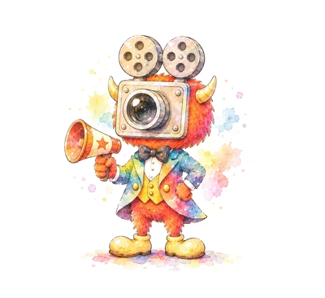

<!doctype html>
<html lang="ja">
<meta charset="utf-8">
<meta name="viewport" content="width=device-width, initial-scale=1, viewport-fit=cover">
<meta name="robots" content="noindex,nofollow">
<style>
#gate { position: fixed; inset: 0; z-index: 9999; background: #fffaf2; display: grid; place-items: center; padding: 24px; font-family: "Zen Maru Gothic", sans-serif; color: #2f2a26; }
#gate form { display: flex; flex-direction: column; gap: 12px; width: min(340px, 100%); text-align: center; }
#gate img { width: 120px; margin: 0 auto; }
#gate input { font-size: 18px; padding: 12px 16px; border: 2px solid #e1622a; border-radius: 999px; text-align: center; }
#gate button, .dm-btn { font: inherit; font-weight: 700; border: 0; border-radius: 999px; padding: 12px 18px; background: #e1622a; color: #fff; cursor: pointer; }
#gate small { color: #8a7d70; }
.dm-fab { position: fixed; right: 10px; bottom: max(10px, env(safe-area-inset-bottom)); z-index: 60; box-shadow: 0 4px 14px rgba(0,0,0,.25); font-size: 13px; padding: 8px 14px !important; }
.dm-sheet { position: fixed; inset: 0; z-index: 70; background: rgba(20,20,20,.45); display: flex; align-items: flex-end; justify-content: center; }
.dm-card { background: #fffaf2; color: #2f2a26; width: min(560px, 100%); max-height: 88vh; overflow: auto; border-radius: 18px 18px 0 0; padding: 16px 16px max(16px, env(safe-area-inset-bottom)); display: flex; flex-direction: column; gap: 10px; font-family: "Zen Maru Gothic", sans-serif; }
.dm-card textarea { width: 100%; min-height: 96px; font: inherit; font-size: 16px; border: 2px solid #e8dccb; border-radius: 12px; padding: 8px 10px; }
.dm-card ul { margin: 0; padding-left: 18px; font-size: 13px; }
.dm-card .row { display: flex; gap: 8px; flex-wrap: wrap; }
.dm-ghost { background: #f3e9db !important; color: #2f2a26 !important; }
.dm-banner { background: #2f2a26; color: #fff; font-size: 12px; text-align: center; padding: 4px 8px; }
</style>
<script>
/* ---- お試し版のしくみ（scripts/build_demo.py が足したもの） ---- */
(function () {
  const PASS = "3244ea5712cd87f164333bd902c74cdb6e4bc075abe036ae607a572f2452d8c0";
  const AI_URL = "https://filmo-ai-1.inaba-yorozu0.workers.dev";
  const getKey = () => { try { return localStorage.getItem("filmo-demo-key") || ""; } catch (e) { return ""; } };
  const ok = (() => { try { return localStorage.getItem("filmo-demo-pass") === PASS && (!AI_URL || !!getKey()); } catch (e) { return false; } })();
  async function sha(t) { const b = await crypto.subtle.digest("SHA-256", new TextEncoder().encode(t.trim())); return [...new Uint8Array(b)].map(x => x.toString(16).padStart(2, "0")).join(""); }
  if (!ok) document.addEventListener("DOMContentLoaded", () => {
    const g = document.createElement("div"); g.id = "gate";
    g.innerHTML = '<form><b>フィルモスタジオ（お試し版）</b><small>教えてもらった合言葉を入れてください</small><input type="password" autocomplete="off" aria-label="合言葉"><button type="submit">はじめる</button><small id="gateMsg"></small></form>';
    document.body.appendChild(g);
    g.querySelector("form").addEventListener("submit", async e => { e.preventDefault();
      if (await sha(g.querySelector("input").value) === PASS) { try { localStorage.setItem("filmo-demo-pass", PASS); localStorage.setItem("filmo-demo-key", g.querySelector("input").value.trim()); } catch (err) {} g.remove(); }
      else g.querySelector("#gateMsg").textContent = "合言葉がちがいます"; });
  });

  /* 起きたこと・エラーのメモ（使いづらいところと一緒に送る） */
  const LOGK = "filmo-demo-log", NOTEK = "filmo-demo-notes";
  const load = k => { try { return JSON.parse(localStorage.getItem(k) || "[]"); } catch (e) { return []; } };
  const put = (k, v) => { try { localStorage.setItem(k, JSON.stringify(v.slice(-60))); } catch (e) {} };
  const where = () => { try { return `${state.view}${state.view === "make" ? "/" + (state.makeMode || "easy") + "/" + (state.makeTheme || "") : ""}`; } catch (e) { return "?"; } };
  const now = () => new Date().toLocaleString("ja-JP");
  window.__demoLog = (kind, text) => { const l = load(LOGK); l.push({ at: now(), kind, where: where(), text: String(text).slice(0, 300) }); put(LOGK, l); };
  addEventListener("error", e => __demoLog("エラー", (e.message || "") + (e.filename ? ` (${String(e.filename).split("/").pop()}:${e.lineno})` : "")));
  addEventListener("unhandledrejection", e => __demoLog("エラー", (e.reason && (e.reason.message || e.reason)) || "promise"));
  document.addEventListener("click", e => { const b = e.target.closest("button, [data-view], label"); if (b && !b.closest(".dm-card")) { const t = (b.textContent || "").trim().slice(0, 24); if (t) __demoLog("押した", t); } }, true);
  const device = () => `${navigator.userAgent}\n画面 ${screen.width}×${screen.height}・表示 ${innerWidth}×${innerHeight}・${matchMedia("(prefers-color-scheme: dark)").matches ? "ダーク" : "ライト"}`;

  function sheet() {
    const notes = load(NOTEK), errs = load(LOGK).filter(x => x.kind === "エラー");
    const s = document.createElement("div"); s.className = "dm-sheet";
    s.innerHTML = `<div class="dm-card" role="dialog" aria-label="使いづらいところを書く"><b>使いづらいところを書く</b>
      <small>どの画面で、何をしたら、どうなったか。「ここがわかりにくい」だけでもOKです。いまの画面（${where()}）も一緒に記録します。</small>
      <textarea id="dmText" placeholder="例：動画作成で「見てみる」を押したけど、何も出てこない"></textarea>
      <div class="row"><button class="dm-btn" type="button" data-dm="add">書いたものを残す</button><button class="dm-btn dm-ghost" type="button" data-dm="close">閉じる</button></div>
      <b style="font-size:14px">残したもの（${notes.length}件）${errs.length ? `・自動で記録したエラー（${errs.length}件）` : ""}</b>
      <ul>${notes.map(n => `<li>${n.at}［${n.where}］${n.text.replace(/[<&]/g, c => c === "<" ? "&lt;" : "&amp;")}</li>`).join("") || "<li>まだありません</li>"}</ul>
      <div class="row"><button class="dm-btn" type="button" data-dm="send">まとめて送る（LINEなど）</button><button class="dm-btn dm-ghost" type="button" data-dm="copy">コピーする</button><button class="dm-btn dm-ghost" type="button" data-dm="clear">送ったので消す</button></div>
      <small id="dmMsg"></small></div>`;
    document.body.appendChild(s);
    const text = () => ["【フィルモ お試し版の感想】", ...load(NOTEK).map((n, i) => `${i + 1}. ${n.at}［${n.where}］${n.text}`),
      "", "【自動の記録（最後の30件）】", ...load(LOGK).slice(-30).map(x => `${x.at}［${x.where}］${x.kind}：${x.text}`), "", "【端末】", device()].join("\n");
    s.addEventListener("click", async e => {
      const a = (e.target.closest("[data-dm]") || {}).dataset?.dm; const msg = t => { s.querySelector("#dmMsg").textContent = t; };
      if (e.target === s || a === "close") s.remove();
      if (a === "add") { const v = s.querySelector("#dmText").value.trim(); if (!v) return msg("書いてから押してください");
        const n = load(NOTEK); n.push({ at: now(), where: where(), text: v }); put(NOTEK, n); s.remove(); sheet(); }
      if (a === "send") { try { if (navigator.share) { await navigator.share({ text: text() }); return; } } catch (err) { if (err && err.name === "AbortError") return; }
        try { await navigator.clipboard.writeText(text()); msg("コピーしました。LINEやメールに貼り付けて送ってください"); } catch (err) { msg("送れませんでした。「コピーする」を試してください"); } }
      if (a === "copy") { try { await navigator.clipboard.writeText(text()); msg("コピーしました。LINEやメールに貼り付けて送ってください"); }
        catch (err) { const ta = s.querySelector("#dmText"); ta.value = text(); ta.select(); msg("文字を選びました。長押しでコピーしてください"); } }
      if (a === "clear") { put(NOTEK, []); put(LOGK, []); s.remove(); sheet(); }
    });
  }
  document.addEventListener("DOMContentLoaded", () => {
    const b = document.createElement("button"); b.className = "dm-btn dm-fab"; b.type = "button"; b.textContent = "✎ 使いづらい所を書く";
    b.addEventListener("click", sheet); document.body.appendChild(b);
    const bn = document.createElement("div"); bn.className = "dm-banner"; bn.textContent = AI_URL ? "お試し版：作った動画・直した内容はこの端末だけに保存" : "お試し版：AIで作るは使えません・直した内容はこの端末だけに保存"; document.body.prepend(bn);
  });

  /* 保存先（db）：この端末の中だけ（localStorage） */
  const DBK = "filmo-demo-db";
  let store = {}; try { store = JSON.parse(localStorage.getItem(DBK) || "{}"); } catch (e) {}
  const save = () => { try { localStorage.setItem(DBK, JSON.stringify(store)); } catch (e) { __demoLog("エラー", "保存がいっぱい：" + e.message); } };
  const subs = {}, copy = d => JSON.parse(JSON.stringify(d));
  const snap = name => ({ docs: Object.entries(store[name] || {}).sort((a, b) => String(a[1].at || a[1].created || "").localeCompare(String(b[1].at || b[1].created || ""))).map(([id, d]) => ({ id, data: () => copy(d) })) });
  const fire = name => setTimeout(() => (subs[name] || []).forEach(f => { try { f(snap(name)); } catch (e) { __demoLog("エラー", e.message); } }), 0);
  const doc = (name, id) => ({ id,
    set: async d => { (store[name] = store[name] || {})[id] = copy(d); save(); fire(name); },
    update: async d => { (store[name] = store[name] || {})[id] = { ...(store[name][id] || {}), ...copy(d) }; save(); fire(name); },
    delete: async () => { if (store[name]) delete store[name][id]; save(); fire(name); },
    get: async () => ({ id, exists: !!(store[name] || {})[id], data: () => copy((store[name] || {})[id] || {}) }) });
  const coll = name => ({ orderBy() { return this; }, where() { return this; }, limit() { return this; },
    onSnapshot(fn) { (subs[name] = subs[name] || []).push(fn); setTimeout(() => fn(snap(name)), 0); return () => {}; },
    doc: id => doc(name, id), get: async () => snap(name),
    add: async d => { const id = Date.now().toString(36) + Math.random().toString(36).slice(2, 6); await doc(name, id).set(d); return doc(name, id); } });

  /* 素材（assets）：この端末の中だけ（IndexedDB）。画面の /_blob/… をその場で差しかえる */
  const urls = {};
  const idb = new Promise(res => { try { const r = indexedDB.open("filmo-demo", 1); r.onupgradeneeded = () => r.result.createObjectStore("blobs"); r.onsuccess = () => res(r.result); r.onerror = () => res(null); } catch (e) { res(null); } });
  const idbPut = async (k, v) => { const d = await idb; if (!d) return; d.transaction("blobs", "readwrite").objectStore("blobs").put(v, k); };
  const idbGet = async k => { const d = await idb; if (!d) return null; return new Promise(res => { const r = d.transaction("blobs").objectStore("blobs").get(k); r.onsuccess = () => res(r.result || null); r.onerror = () => res(null); }); };
  async function urlOf(id) { if (urls[id]) return urls[id]; const b = await idbGet(id); if (b) urls[id] = URL.createObjectURL(b); return urls[id] || ""; }
  const BL = /\/_blob\/([A-Za-z0-9_-]+)/;
  async function fix(el) {
    for (const at of ["src", "poster"]) { const v = el.getAttribute && el.getAttribute(at); const m = v && v.match(BL); if (m) { const u = await urlOf(m[1]); if (u && el.getAttribute(at) === v) el.setAttribute(at, u); } }
    const st = el.getAttribute && el.getAttribute("style"); const m = st && st.match(BL);
    if (m) { const u = await urlOf(m[1]); if (u) el.setAttribute("style", st.split("/_blob/" + m[1]).join(u)); }
  }
  new MutationObserver(ms => ms.forEach(m => {
    if (m.type === "attributes") fix(m.target);
    m.addedNodes && m.addedNodes.forEach(n => { if (n.nodeType !== 1) return; fix(n); n.querySelectorAll('[src*="/_blob/"], [style*="/_blob/"], [poster*="/_blob/"]').forEach(fix); });
  })).observe(document.documentElement, { subtree: true, childList: true, attributes: true, attributeFilter: ["src", "style", "poster"] });
  const A = window.Audio; window.Audio = function (src) { const a = new A(); if (src) { const m = String(src).match(BL); if (m) urlOf(m[1]).then(u => { a.src = u; }); else a.src = src; } return a; };
  const assets = { upload: async f => {
    if (f.size > 20 * 1024 * 1024) throw { code: "too_large" };
    const id = "u" + Date.now().toString(36) + Math.random().toString(36).slice(2, 6);
    urls[id] = URL.createObjectURL(f); idbPut(id, f);
    return { id, url: "/_blob/" + id, contentType: f.type || "application/octet-stream" }; } };

  /* AIで作る：中継役（Cloudflare Workers）に頼む。キーは中継役にだけある */
  const sample = AI_URL ? { json: async prompt => {
    let r;
    try { r = await fetch(AI_URL, { method: "POST", headers: { "content-type": "application/json" }, body: JSON.stringify({ pass: getKey(), prompt }) }); }
    catch (e) { __demoLog("エラー", "AIにつながらない：" + e.message); throw e; }
    const d = await r.json().catch(() => ({}));
    if (r.status === 403) throw { code: "not_granted" };
    if (!r.ok) { __demoLog("エラー", "AI " + r.status + " " + (d.error || "")); throw new Error(d.error || "ai_error"); }
    const t = String(d.text || ""), a = t.indexOf("{"), b = t.lastIndexOf("}");
    try { return JSON.parse(a >= 0 && b > a ? t.slice(a, b + 1) : t); } catch (e) { __demoLog("エラー", "AIの返事が読めない"); throw new Error("bad_json"); }
  } } : null;
  window.claude = { use: async name => name === "db" ? { collection: coll } : name === "assets" ? assets : name === "sample" ? sample : null };
})();
</script>

<title>フィルモスタジオ（お試し版）</title>
<meta name="claude:viewport-fit-sides" content="cover">
<link rel="preconnect" href="https://fonts.googleapis.com">
<link rel="preconnect" href="https://fonts.gstatic.com" crossorigin>
<link rel="stylesheet" href="https://fonts.googleapis.com/css2?family=Zen+Maru+Gothic:wght@500;700;900&family=Noto+Sans+JP:wght@400;500;700&family=Dela+Gothic+One&family=Shippori+Mincho+B1:wght@800&family=M+PLUS+Rounded+1c:wght@900&display=swap">
<style>
/* レイアウト：左にメニュー、右に作業面。スマホではメニューが上の横並びになる */
:root {
  /* フィルモとYOROZUの水彩に合わせる：あたたかい紙・墨色の文字・フィルモのオレンジ・タキシードの虹色は差し色だけ */
  --bg: #fffaf2;
  --surface: #ffffff;
  --sunken: #fff2e0;
  --ink: #2f2a26;
  --muted: #776b61;
  --line: #f0e2cc;
  --accent: #d9581c;
  --accent-soft: #ffe7d6;
  --leaf: #3e9b6b;
  --sun: #f2c94c;
  --rainbow: linear-gradient(90deg, #f6b91e, #f39a1b, #e2611f, #c45ab3, #2f80c9, #34afa6, #9cc63b);
  --price-bg: #ffe9ad;
  --price-ink: #5c4300;
  --good: #217a4b;
  --good-soft: #e1f3e8;
  --bad: #b0372b;
  --bad-soft: #fbe5e2;
  --warn-soft: #fff4dc;
  --display: "Zen Maru Gothic", "Hiragino Maru Gothic ProN", "Noto Sans JP", sans-serif;   /* 丸い文字でやわらかく */
  --body: "Noto Sans JP", "Hiragino Sans", "Yu Gothic", system-ui, sans-serif;
}
@media (prefers-color-scheme: dark) {
  :root:not([data-theme="light"]) {
    --bg: #1d1916; --surface: #26211d; --sunken: #302923; --ink: #f3ece4; --muted: #b9ab9c; --line: #3d342c;
    --accent: #ff8a4c; --accent-soft: #43281a; --leaf: #6fd09a; --sun: #f2c94c; --price-bg: #4a3a10; --price-ink: #ffe3a0;
    --good: #6fd09a; --good-soft: #17352a; --bad: #f08a7e; --bad-soft: #3d1f1c; --warn-soft: #3a3020;
    color-scheme: dark;
  }
}
:root[data-theme="dark"] {
  --bg: #1d1916; --surface: #26211d; --sunken: #302923; --ink: #f3ece4; --muted: #b9ab9c; --line: #3d342c;
  --accent: #ff8a4c; --accent-soft: #43281a; --leaf: #6fd09a; --sun: #f2c94c; --price-bg: #4a3a10; --price-ink: #ffe3a0;
  --good: #6fd09a; --good-soft: #17352a; --bad: #f08a7e; --bad-soft: #3d1f1c; --warn-soft: #3a3020;
  color-scheme: dark;
}
* { box-sizing: border-box; }
body { background: var(--bg); color: var(--ink); font-family: var(--body); font-size: 15px; line-height: 1.7; }
h1, h2, h3 { font-family: var(--display); font-weight: 700; line-height: 1.35; text-wrap: balance; margin: 0; }
button, select, textarea, input { font: inherit; color: inherit; }
button { cursor: pointer; }
:focus-visible { outline: 2px solid var(--accent); outline-offset: 2px; }

.app { display: grid; grid-template-columns: 236px minmax(0, 1fr); min-height: 100vh; }
.side { background: var(--surface); border-right: 1px solid var(--line); padding-block: 20px; padding-inline: 14px; display: flex; flex-direction: column; gap: 18px; position: sticky; top: 0; height: 100vh; }
.brand { display: flex; flex-direction: column; gap: 2px; padding-inline: 8px; }
.brand b { font-family: var(--display); font-size: 20px; letter-spacing: .02em; white-space: nowrap; }
.brand small { color: var(--muted); font-size: 12px; }
.shop { display: flex; flex-direction: column; gap: 4px; padding-inline: 8px; }
.shop label { font-size: 12px; color: var(--muted); letter-spacing: .04em; }
.shop select { border: 1px solid var(--line); background: var(--sunken); border-radius: 8px; padding: 6px 8px; }
nav { display: flex; flex-direction: column; gap: 2px; }
nav button { white-space: nowrap; display: flex; align-items: center; gap: 10px; background: none; border: 0; text-align: left; padding: 9px 10px; border-radius: 8px; color: var(--muted); font-weight: 500; }
nav button svg { width: 18px; height: 18px; flex: none; }
nav button[aria-current="page"] { background: var(--accent-soft); color: var(--accent); }
nav button .dot { margin-left: auto; min-width: 20px; height: 20px; border-radius: 10px; background: var(--bad); color: #fff; font-size: 11px; display: grid; place-items: center; padding-inline: 5px; }
.proto-note { margin-top: auto; font-size: 12px; color: var(--muted); padding: 10px; border: 1px dashed var(--line); border-radius: 8px; }

main { padding-block: 28px 64px; padding-left: max(16px, env(safe-area-inset-left, 0px)); padding-right: max(16px, env(safe-area-inset-right, 0px)); min-width: 0; }
.wrap { max-width: 1080px; margin-inline: auto; display: flex; flex-direction: column; gap: 20px; }
.head { display: flex; flex-wrap: wrap; align-items: baseline; justify-content: space-between; gap: 8px 16px; }
.head h1 { font-size: 24px; }
.head p { margin: 0; color: var(--muted); font-size: 14px; }
.panel { background: var(--surface); border: 1px solid var(--line); border-radius: 12px; padding: 18px; min-width: 0; }
.panel h2 { font-size: 17px; margin-bottom: 10px; }
.muted { color: var(--muted); }
.small { font-size: 13px; }
.pill { display: inline-flex; align-items: center; gap: 4px; font-size: 12px; font-weight: 500; padding: 1px 9px; border-radius: 999px; background: var(--sunken); color: var(--muted); white-space: nowrap; }
.pill.price { background: var(--price-bg); color: var(--price-ink); }
.pill.good { background: var(--good-soft); color: var(--good); }
.pill.bad { background: var(--bad-soft); color: var(--bad); }
.pill.accent { background: var(--accent-soft); color: var(--accent); }
mark { background: var(--price-bg); color: var(--price-ink); border-radius: 3px; padding: 0 2px; }

/* 動画作成 */
.themes { display: flex; flex-wrap: wrap; gap: 8px; }
.themes button { border: 1px solid var(--line); background: var(--surface); border-radius: 999px; padding: 6px 14px; font-weight: 500; }
.themes button[aria-pressed="true"] { background: var(--accent); border-color: var(--accent); color: #fff; }
.themes button:disabled { opacity: .45; cursor: not-allowed; }
.studio { display: grid; grid-template-columns: 300px minmax(0, 1fr); gap: 20px; align-items: start; }
.phone { background: var(--surface); border: 1px solid var(--line); border-radius: 18px; padding: 12px; display: flex; flex-direction: column; gap: 10px; position: sticky; top: 16px;
  max-height: calc(100vh - 32px); overflow-y: auto; overscroll-behavior: contain; scrollbar-width: thin; scrollbar-color: var(--line) transparent; }   /* 中身が長くても、この枠の中でなめらかにスクロール */
.phone > * { flex-shrink: 0; }   /* スクロールする枠の中で、動画の枠がつぶれないように */
.phone::-webkit-scrollbar { width: 8px; } .phone::-webkit-scrollbar-thumb { background: var(--line); border-radius: 8px; } .phone::-webkit-scrollbar-track { background: transparent; }
/* 素材なしのアニメーション（1080×1920 で組んで、画面の幅に縮める） */
.an-box { position: relative; width: 100%; aspect-ratio: 9 / 16; border-radius: 10px; overflow: hidden; background: #FFFEFA; }
.an-box video[hidden] { display: none; }
.an-box { cursor: pointer; }
.an-pause { position: absolute; inset: 0; display: flex; flex-direction: column; align-items: center; justify-content: center; gap: 6px; background: rgba(47, 42, 38, .35); color: #fff; font-weight: 700; text-shadow: 0 1px 3px rgba(0,0,0,.4); }
.an-pause small { font-weight: 500; } .an-pause .btn { text-shadow: none; }
#vedModal { position: fixed; inset: 0; z-index: 50; }
.ved-back { position: absolute; inset: 0; background: rgba(20, 24, 32, .55); }
.ved { position: absolute; inset: max(16px, env(safe-area-inset-top, 0px)) max(16px, env(safe-area-inset-right, 0px)) 16px max(16px, env(safe-area-inset-left, 0px)); background: var(--surface); border-radius: 14px; display: flex; gap: 16px; padding: 16px; overflow: auto; }
.ved-stagewrap { flex: none; height: 100%; display: flex; align-items: flex-start; }
.ved-box { position: relative; height: min(100%, 84vh); aspect-ratio: 9 / 16; border-radius: 10px; overflow: hidden; background: #FFFEFA; outline: 1px solid var(--line); }
.ved-side { flex: 1; min-width: 240px; display: flex; flex-direction: column; gap: 12px; }
.ved-head { display: flex; justify-content: space-between; align-items: center; gap: 8px; }
.ved-tools { display: flex; flex-direction: column; gap: 8px; border: 1px solid var(--line); border-radius: 10px; padding: 10px; }
.ved-tools textarea { width: 100%; border: 1px solid var(--line); border-radius: 6px; padding: 6px; font: inherit; background: var(--surface); color: var(--ink); }
.ved-row { display: flex; align-items: center; gap: 6px; flex-wrap: wrap; } .ved-row > span { min-width: 48px; font-size: 13px; }
.an-static, .an-static * { animation: none !important; } .an-static .an-sc { opacity: 1; }
.ved-stage [data-role] { cursor: pointer; } .ved-stage [data-role]:hover { outline: 4px dashed rgba(30, 106, 134, .5); outline-offset: 8px; }
.ved-stage .ved-sel { outline: 6px solid #1e6a86 !important; outline-offset: 8px; }
.ved-stage { touch-action: none; }
.ved-m { inset: 0; border-radius: 0; flex-direction: column; gap: 6px; padding: max(8px, env(safe-area-inset-top, 0px)) 10px max(8px, env(safe-area-inset-bottom, 0px)); overflow: hidden; }
.vm-top { display: flex; align-items: center; gap: 6px; flex: none; }
.vm-scenes { flex: 1; display: flex; gap: 4px; overflow-x: auto; scrollbar-width: none; }
.vm-scenes button { flex: none; border: 1px solid var(--line); background: var(--surface); border-radius: 999px; padding: 4px 10px; font-size: 13px; }
.vm-scenes button[aria-pressed="true"] { background: var(--accent); border-color: var(--accent); color: #fff; font-weight: 700; }
.vm-canvas { flex: 1; min-height: 120px; display: flex; justify-content: center; background: var(--sunken); border-radius: 10px; padding: 6px; }
.vm-canvas .ved-box { height: 100%; }
.vm-panel { flex: none; display: flex; flex-direction: column; gap: 6px; max-height: 42%; overflow: auto; }
.vm-head { display: flex; justify-content: space-between; align-items: center; gap: 8px; font-size: 14px; }
.vm-tabs { display: flex; gap: 4px; background: var(--sunken); border-radius: 999px; padding: 3px; }
.vm-tabs button { flex: 1; border: 0; background: none; border-radius: 999px; padding: 6px 4px; font-weight: 700; color: var(--muted); font-size: 13px; }
.vm-tabs button[aria-pressed="true"] { background: var(--surface); color: var(--accent); box-shadow: 0 1px 4px rgba(120, 70, 20, .15); }
.vm-body { display: flex; flex-direction: column; gap: 4px; }
.vm-body textarea { width: 100%; border: 2px solid var(--accent); border-radius: 10px; padding: 6px 8px; font: inherit; font-size: 16px; background: var(--surface); color: var(--ink); resize: none; }
@media (max-width: 720px) { .ved { flex-direction: column; } .ved-box { height: 44vh; }
  .ved-stagewrap { position: sticky; top: -16px; z-index: 3; background: var(--surface); justify-content: center; height: auto; padding: 4px 0 8px; margin-top: -4px; } }   /* 直すボタンを押しても画面が見えるように上に貼りつける */
.sound { display: flex; flex-direction: column; gap: 6px; border: 1px solid var(--line); border-radius: 10px; padding: 8px 10px; font-size: 13px; }
.sound select { font: inherit; } .small-btn { font-size: 13px; padding: 4px 10px; cursor: pointer; align-self: flex-start; }
.brand { flex-direction: row; align-items: center; gap: 10px; } .brand > div { display: flex; flex-direction: column; gap: 2px; min-width: 0; }
.brand-chara { width: 64px; height: auto; flex: none; } .brand small { white-space: normal; }
.greet { margin: 6px 0 0; padding: 8px 10px; border-radius: 12px 12px 12px 2px; background: var(--accent-soft); font-size: 13px; line-height: 1.5; }
.greet:empty { display: none; }
.stale { width: 100%; display: flex; flex-direction: column; gap: 6px; align-items: flex-start; padding: 10px 12px; border-radius: 10px; background: var(--price-bg); color: var(--price-ink); font-size: 13px; }
#toast { position: fixed; left: 50%; bottom: calc(24px + env(safe-area-inset-bottom, 0px)); transform: translate(-50%, 20px); z-index: 60; background: var(--ink); color: var(--surface);
  padding: 10px 16px; border-radius: 999px; font-size: 14px; opacity: 0; pointer-events: none; transition: opacity .2s, transform .2s; }
#toast.on { opacity: 1; transform: translate(-50%, 0); }
/* ---- 見た目：かわいく、やさしく（2026-11-02 真由美さん） ---- */
.side { background: var(--surface) url("anim/watercolor.jpg") 0 0 / 200% auto no-repeat; background-blend-mode: normal; position: relative; }
.side::before { content: ""; position: absolute; inset: 0; background: color-mix(in srgb, var(--surface) 86%, transparent); pointer-events: none; }
.side > * { position: relative; }
.brand b { font-weight: 900; color: var(--ink); white-space: normal; font-size: 18px; line-height: 1.3; }
.pv-empty .btn { align-self: center; justify-self: center; }   /* 再生ボタンは画面のまんなかに */
.an-box .pv-empty { background: linear-gradient(transparent, rgba(255, 250, 242, .6)); }
@media (max-width: 760px) { .greet { display: none; } .brand-chara { width: 40px; } .brand b { white-space: nowrap; font-size: 16px; } }   /* スマホの上の帯は小さく。あいさつは出さない */
.brand-chara { width: 72px; filter: drop-shadow(0 4px 6px rgba(120, 70, 20, .15)); }
.greet { background: var(--surface); border: 2px solid var(--sun); border-radius: 16px 16px 16px 4px; box-shadow: 0 2px 0 var(--sun); }
nav button { border-radius: 999px; font-weight: 700; }
nav button[aria-current="page"] { background: var(--accent); color: #fff; box-shadow: 0 3px 0 color-mix(in srgb, var(--accent) 60%, #000); }
.panel { border-radius: 20px; border: 1px solid var(--line); box-shadow: 0 6px 18px rgba(140, 90, 30, .06); }
.btn { border-radius: 999px; padding: 10px 20px; box-shadow: 0 3px 0 color-mix(in srgb, var(--accent) 60%, #000); transition: transform .1s, box-shadow .1s; }
.btn:active:not(:disabled) { transform: translateY(2px); box-shadow: 0 1px 0 color-mix(in srgb, var(--accent) 60%, #000); }
.btn.ghost { box-shadow: none; border: 1px solid var(--line); background: var(--surface); }
.themes button { border-width: 2px; font-weight: 700; }
.head h1 { font-weight: 900; position: relative; padding-bottom: 6px; }
.head h1::after { content: ""; position: absolute; left: 0; bottom: 0; width: 56px; height: 5px; border-radius: 3px; background: var(--rainbow); }
.phone { border-radius: 24px; border-width: 2px; }
/* かんたん／こだわり の切り替え */
.cur-bar { display: flex; flex-wrap: wrap; gap: 8px 12px; align-items: center; background: var(--surface); border: 2px dashed var(--accent); border-radius: 16px; padding: 8px 14px; }
.cur-bar .themes { margin: 0; }
.fix-box { display: flex; flex-direction: column; gap: 4px; font-size: 14px; }
.fix-box textarea { width: 100%; border: 2px solid var(--line); border-radius: 12px; padding: 8px 10px; font: inherit; font-size: 16px; background: var(--surface); color: var(--ink); resize: vertical; }
.fix-box textarea:focus { border-color: var(--accent); outline: none; }
.klist { display: flex; flex-direction: column; gap: 10px; }
.kcard { border: 1px solid var(--line); border-radius: 14px; padding: 12px 14px; background: var(--surface); display: flex; flex-direction: column; gap: 6px; min-width: 0; }
.kcard.empty { opacity: .75; border-style: dashed; }
.khead { display: flex; align-items: center; gap: 8px; flex-wrap: wrap; } .khead b { font-size: 15px; } .khead .btn { margin-left: auto; } .khead .btn + .btn { margin-left: 0; }
.khelp { font-size: 12px; color: var(--muted); }
.kmore summary { cursor: pointer; color: var(--accent); font-size: 13px; font-weight: 700; margin-top: 4px; }
.kitems { margin: 2px 0 0; padding-left: 20px; line-height: 1.7; overflow-wrap: anywhere; } .kitems li + li { margin-top: 4px; }
.kcard textarea, .kcard input[type=text] { width: 100%; border: 2px solid var(--line); border-radius: 10px; padding: 8px 10px; font: inherit; font-size: 16px; background: var(--surface); color: var(--ink); }
.kcard label { display: flex; flex-direction: column; gap: 4px; }
.cur-ask { display: inline-flex; flex-wrap: wrap; align-items: center; gap: 6px; background: var(--price-bg); color: var(--price-ink); border-radius: 12px; padding: 6px 10px; font-size: 13px; }
.mode-tabs { display: inline-flex; background: var(--sunken); border-radius: 999px; padding: 4px; gap: 4px; }
.mode-tabs button { border: 0; background: none; border-radius: 999px; padding: 8px 18px; font-weight: 700; color: var(--muted); }
.mode-tabs button[aria-pressed="true"] { background: var(--surface); color: var(--accent); box-shadow: 0 2px 6px rgba(120, 70, 20, .15); }
/* かんたんに作る */
.easy { display: grid; grid-template-columns: minmax(0, 1fr) 320px; gap: 20px; align-items: start; }
.easy-steps { display: flex; flex-direction: column; gap: 16px; min-width: 0; }
.step { display: flex; flex-direction: column; gap: 12px; }
.step h2 { display: flex; align-items: center; gap: 10px; font-size: 18px; }
.step h2 .num { flex: none; width: 30px; height: 30px; border-radius: 50%; display: grid; place-items: center; background: var(--accent); color: #fff; font-size: 15px; }
.cards { display: grid; grid-template-columns: repeat(auto-fill, minmax(180px, 1fr)); gap: 10px; }
.card { text-align: left; border: 2px solid var(--line); background: var(--surface); border-radius: 16px; padding: 12px 14px; display: flex; flex-direction: column; gap: 2px; }
.card b { font-family: var(--display); font-size: 16px; } .card small { color: var(--muted); font-size: 12.5px; line-height: 1.5; }
.card[aria-pressed="true"] { border-color: var(--accent); background: var(--accent-soft); }
.card:disabled { opacity: .45; cursor: not-allowed; }
.big-btn { font-size: 18px; padding: 14px 28px; align-self: stretch; text-align: center; }
.easy-side { position: sticky; top: 16px; display: flex; flex-direction: column; gap: 10px; }
.cap-box { white-space: pre-wrap; background: var(--sunken); border-radius: 14px; padding: 12px 14px; font-size: 14px; max-height: 260px; overflow: auto; }
@media (max-width: 900px) { .easy { grid-template-columns: minmax(0, 1fr); } .easy-side { position: static; } }
.tune { border: 1px solid var(--line); border-radius: 10px; padding: 8px 10px; background: var(--surface); }
.tune summary { cursor: pointer; font-weight: 700; font-size: 14px; }
.tune-row { display: flex; flex-direction: column; gap: 2px; margin: 8px 0; font-size: 13px; }
.tune-row span { display: flex; justify-content: space-between; gap: 8px; } .tune-row b { font-variant-numeric: tabular-nums; }
.tune-row input { width: 100%; }
.an-box video { position: absolute; inset: 0; width: 100%; height: 100%; object-fit: cover; aspect-ratio: auto; border-radius: 0; }
.an-stage { position: absolute; left: 0; top: 0; width: 1080px; height: 1920px; transform-origin: 0 0; color: #333; font-family: "Zen Maru Gothic", sans-serif; }
.an-sc { position: absolute; inset: 0; background: #FFFEFA; opacity: 0; animation: anFade .5s ease both; overflow: hidden; }
@keyframes anFade { to { opacity: 1; } }
.an-safe { z-index: 1; position: absolute; left: 120px; right: 120px; top: 270px; bottom: 672px; display: flex; flex-direction: column; align-items: center; justify-content: center; gap: 48px; text-align: center; }
.an-safe.an-top { justify-content: flex-start; padding-top: 96px; }
.an-paint { position: absolute; top: 0; bottom: 0; left: -80px; right: -80px; background-repeat: no-repeat; background-size: auto 100%; opacity: var(--an-bg, .5); animation: anPan 9s linear both; }
@keyframes anPan { from { transform: translateX(40px); } to { transform: translateX(-40px); } }
.an-wash { position: absolute; inset: 0; } .an-wash i { position: absolute; border-radius: 50%; opacity: .38; filter: blur(90px); }
.an-head { margin: 0; font: 800 96px/1.35 "Shippori Mincho B1", serif; letter-spacing: .06em; color: #333; display: flex; flex-direction: column; align-items: center; }
.an-badge { width: 200px; height: 200px; display: grid; place-items: center; background: #3E9B6B; color: #fff; font: 800 64px/1 "Shippori Mincho B1", serif; border-radius: 52% 48% 50% 50% / 48% 52% 48% 52%; }
.an-logo { font: 900 42px/1 "M PLUS Rounded 1c", sans-serif; letter-spacing: .14em; background: linear-gradient(90deg, #F6B91E, #F39A1B, #9CC63B, #34AFA6, #2F80C9); -webkit-background-clip: text; background-clip: text; color: transparent; }
.an-count { font: 800 56px/1 "Shippori Mincho B1", serif; color: #E07B00; letter-spacing: .12em; } .an-count span { font-size: 42px; color: #999; }
.an-card { position: relative; width: 100%; background: #fff; border-radius: 24px; padding: 96px 24px 48px; display: flex; flex-direction: column; align-items: center; gap: 48px; box-shadow: 0 24px 72px rgba(70, 60, 20, .12); }
.an-perch { position: absolute; right: -8px; top: calc(40px - 290px * var(--an-chara, 1)); height: calc(290px * var(--an-chara, 1)); }
.an-q { font: 700 var(--an-body, 56px)/1.6 "Zen Maru Gothic", sans-serif; } .an-q b { font: 800 56px/1 "Shippori Mincho B1", serif; color: #E07B00; }
.an-a { position: relative; font: 800 var(--an-head, 96px)/1.35 "Shippori Mincho B1", serif; color: #E07B00; } .an-a span { position: relative; }
.an-mark { position: absolute; left: -16px; right: -16px; bottom: 10px; height: 36px; background: #EEDB5A; opacity: .55; transform-origin: left; border-radius: 40% 60% 50% 50% / 60% 40% 60% 40%; animation: anMark .5s ease-out both; }
@keyframes anMark { from { transform: scaleX(0); } }
.an-detail { font: 700 var(--an-body, 56px)/1.6 "Zen Maru Gothic", sans-serif; color: #555; padding-top: 48px; border-top: 2px dotted #ddd; width: 100%; }
.an-chara { position: absolute; z-index: 2; }   /* キャラクターは文字の前（重なったときの順番は、画面を見ながら直すで変えられる） */
.an-chara, .an-perch { mix-blend-mode: multiply; }   /* 白い背景の絵でも、背景になじむ */
.ba-list { display: grid; grid-template-columns: repeat(auto-fill, minmax(260px, 1fr)); gap: 12px; }
.ba { display: flex; gap: 10px; border: 1px solid var(--line); border-radius: 10px; padding: 10px; background: var(--surface); min-width: 0; }
.ba img { width: 72px; height: 96px; object-fit: contain; background: var(--sunken); border-radius: 6px; flex: none; }
.ba-body { display: flex; flex-direction: column; gap: 6px; min-width: 0; flex: 1; }
.ba-note { width: 100%; resize: vertical; border: 1px solid var(--line); border-radius: 6px; padding: 4px 6px; background: var(--surface); color: var(--ink); font: inherit; font-size: 13px; }
.ba-off { opacity: .5; }
.lib { flex-basis: 100%; border: 1px dashed var(--accent); border-radius: 12px; padding: 8px; display: flex; flex-direction: column; gap: 6px; }
.cast-th video { width: 100%; height: 100%; object-fit: cover; border-radius: 6px; }
.shot-up .cast-th img, .shot-up .cast-th video { width: 100%; height: 100%; object-fit: contain; }
.easy-slots { display: flex; gap: 8px; flex-wrap: wrap; }
.easy-slot { display: flex; flex-direction: column; align-items: center; gap: 2px; }
.linkish { border: 0; background: none; color: var(--accent); font-size: 12px; text-decoration: underline; cursor: pointer; padding: 0; }
.cast { border: 1px solid var(--line); border-radius: 14px; padding: 8px 12px; background: var(--surface); }
.cast summary { cursor: pointer; }
.cast-row { display: flex; flex-direction: column; gap: 4px; margin-top: 8px; }
.cast-list { display: flex; gap: 6px; overflow-x: auto; padding-bottom: 4px; }
.cast-th { flex: none; width: 58px; height: 76px; border: 2px solid var(--line); border-radius: 10px; background: var(--sunken); padding: 2px; display: grid; place-items: center; font-size: 11px; color: var(--muted); cursor: pointer; }
.cast-th img { width: 100%; height: 100%; object-fit: contain; }
.cast-th[aria-pressed="true"] { border-color: var(--accent); box-shadow: 0 0 0 2px var(--accent); color: var(--accent); font-weight: 700; }
.an-foot { background: #EEDB5A; }
.an-footer { display: flex; flex-direction: column; align-items: center; gap: 24px; color: #fff; margin-top: 96px; }
.an-kanji { font: 800 140px/1 "Shippori Mincho B1", serif; } .an-name { font: 400 42px/1 "Shippori Mincho B1", serif; letter-spacing: .2em; }
.an-run { height: calc(420px * var(--an-chara, 1)); top: 1288px; left: 330px; animation: anRun 1.2s cubic-bezier(.2, .7, .3, 1) both; }
@keyframes anRun { from { transform: translateX(-1100px); } }
.an-up { display: block; animation: anUp .6s cubic-bezier(.2, .8, .3, 1) both; } @keyframes anUp { from { opacity: 0; transform: translateY(36px); } }
.an-pop { animation: anPop .5s cubic-bezier(.3, 1.5, .5, 1) both; } @keyframes anPop { from { opacity: 0; transform: scale(.6); } }
.an-in { animation: anIn .6s cubic-bezier(.2, .9, .3, 1) both; } @keyframes anIn { from { opacity: 0; transform: translateY(60px) scale(.96); } }
@media (prefers-reduced-motion: reduce) { .an-stage * { animation-duration: .01s !important; } }
.phone video, .phone .novideo { width: 100%; aspect-ratio: 9 / 16; border-radius: 10px; background: var(--sunken); display: block; max-width: 100%; }
.novideo { display: grid !important; place-items: center; text-align: center; color: var(--muted); font-size: 13px; padding: 16px; }
.scenes { display: flex; flex-direction: column; gap: 6px; }
.scene { display: grid; grid-template-columns: 64px 1fr; gap: 8px; font-size: 13px; align-items: baseline; }
.scene span:first-child { color: var(--muted); font-size: 12px; }
.cols { display: flex; flex-direction: column; gap: 16px; min-width: 0; }
.caption { white-space: pre-wrap; background: var(--sunken); border-radius: 10px; padding: 14px 16px; font-size: 14px; line-height: 1.85; overflow-wrap: anywhere; }
.price-warn { display: flex; gap: 8px; align-items: center; background: var(--price-bg); color: var(--price-ink); border-radius: 8px; padding: 8px 12px; font-size: 13px; font-weight: 500; margin-bottom: 10px; }
.meta { display: flex; flex-wrap: wrap; gap: 6px 14px; font-size: 13px; color: var(--muted); font-variant-numeric: tabular-nums; }
.judge { display: grid; grid-template-columns: 1fr 1fr; gap: 14px; }
.judge h3 { font-size: 14px; margin-bottom: 6px; }
.judge ul { margin: 0; padding-left: 1.1em; display: flex; flex-direction: column; gap: 6px; font-size: 13.5px; }
.judge li b { font-weight: 500; }
.judge li span { color: var(--muted); display: block; }
.reader { display: grid; grid-template-columns: 110px 1fr; gap: 4px 10px; font-size: 13.5px; margin-bottom: 14px; }
.reader dt { color: var(--muted); }
.reader dd { margin: 0; }
.roz { background: var(--warn-soft); border-radius: 10px; padding: 12px 14px; font-size: 13.5px; }
.roz b { font-family: var(--display); }
.retry { font-size: 13px; }
.retry li { margin-bottom: 4px; }
.mats { margin: 0; padding-left: 1.1em; font-size: 13px; color: var(--muted); }

/* 素材のプレビュー（本番の動画と同じ並び：素材をつなぎ、文字の場面を時間で等分） */
.pv { position: relative; width: 100%; aspect-ratio: 9 / 16; border-radius: 10px; overflow: hidden; background: #111; max-width: 100%; }
.pv-media img, .pv-media video { position: absolute; inset: 0; width: 100%; height: 100%; object-fit: cover; filter: var(--pv-grade, brightness(1.04) contrast(1.06) saturate(1.15)); }
.pv-media img { transform: scale(1); transition: transform 3s linear; }
.pv-media img.zoom { transform: scale(1.1); }
/* Adrian Per の見本（10/27）：黄色の太い文字が1行ずつポンッと出る */
.pv-text { position: absolute; left: 5%; right: 5%; top: 42%; transform: translateY(-50%); text-align: center; font-family: "Dela Gothic One", var(--display);
  font-size: clamp(16px, 8cqw, 34px); line-height: 1.3; color: var(--pv-color, #FFD54A); overflow-wrap: anywhere; -webkit-text-stroke: 1px #1a1a1a; paint-order: stroke fill;
  text-shadow: 0 2px 0 #1a1a1a, 0 4px 10px rgba(0,0,0,.45); }
.pv-text span { display: block; animation: popIn .22s ease-out both; }
/* すっと出る文字（プリン・美容室・枕の見本）：真ん中・細いふち・下から少し上がる */
.pv-clean .pv-text { top: 50%; font-family: var(--body); font-weight: 700; font-size: clamp(14px, 6cqw, 26px); line-height: 1.5; -webkit-text-stroke: .6px #222; text-shadow: 0 1px 2px rgba(0,0,0,.6), 0 2px 8px rgba(0,0,0,.35); }
.pv-clean .pv-text span { animation: riseIn .3s ease-out both; }
@keyframes riseIn { from { opacity: 0; transform: translateY(10px); } to { opacity: 1; transform: none; } }
@keyframes popIn { 0% { opacity: 0; transform: scale(.6); filter: blur(6px); } 70% { opacity: 1; transform: scale(1.12); filter: blur(0); } 100% { opacity: 1; transform: scale(1); } }
.pv-media .in-zoom { animation: inZoom .3s ease-out; }
.pv-media .in-slide { animation: inSlide .3s ease-out; }
.pv-media .in-turn { animation: inTurn .35s ease-out; }
@keyframes inZoom { from { transform: scale(1.3); filter: blur(8px); } to { transform: scale(1); filter: blur(0); } }
@keyframes inSlide { from { transform: translateX(40%); filter: blur(6px); } to { transform: translateX(0); filter: blur(0); } }
@keyframes inTurn { from { transform: rotate(-10deg) scale(1.25); filter: blur(4px); } to { transform: rotate(0) scale(1); filter: blur(0); } }

@keyframes pop { from { opacity: 0; transform: translateY(calc(-50% + 12px)); } to { opacity: 1; transform: translateY(-50%); } }
.pv { container-type: inline-size; }
.pv-empty[hidden] { display: none; }
.pv-empty { position: absolute; inset: 0; display: grid; place-items: center; color: #ccc; font-size: 13px; text-align: center; padding: 16px; }
.shot-up { display: flex; align-items: center; gap: 8px; flex-wrap: wrap; }
.shot-up img, .shot-up video { width: 44px; height: 78px; object-fit: cover; border-radius: 4px; background: var(--sunken); }
@media (prefers-reduced-motion: reduce) { .pv-text span, .pv-media * { animation: none !important; } .pv-media img { transition: none; } }

/* 添削 */
.fb-form { display: flex; flex-direction: column; gap: 10px; }
.fb-kind { display: flex; flex-wrap: wrap; gap: 8px; }
.fb-kind button { border: 1px solid var(--line); background: var(--surface); border-radius: 8px; padding: 6px 12px; font-weight: 500; }
.fb-kind button[aria-pressed="true"][data-k="good"] { background: var(--good-soft); border-color: var(--good); color: var(--good); }
.fb-kind button[aria-pressed="true"][data-k="bad"] { background: var(--bad-soft); border-color: var(--bad); color: var(--bad); }
.fb-kind button[aria-pressed="true"][data-k="note"] { background: var(--accent-soft); border-color: var(--accent); color: var(--accent); }
textarea { width: 100%; min-height: 84px; border: 1px solid var(--line); border-radius: 10px; padding: 10px 12px; background: var(--surface); resize: vertical; }
.btn { white-space: nowrap; border: 0; background: var(--accent); color: #fff; border-radius: 8px; padding: 8px 16px; font-weight: 700; align-self: flex-start; }
.btn:disabled { opacity: .5; cursor: not-allowed; }
.btn.ghost { background: var(--sunken); color: var(--ink); font-weight: 500; }
.fb-list { list-style: none; margin: 0; padding: 0; display: flex; flex-direction: column; gap: 8px; }
.fb-list li { border-left: 3px solid var(--line); padding: 4px 0 4px 10px; font-size: 13.5px; white-space: pre-wrap; }
.fb-list li[data-k="good"] { border-color: var(--good); }
.fb-list li[data-k="bad"] { border-color: var(--bad); }
.fb-list li[data-k="note"] { border-color: var(--accent); }
.fb-list small { color: var(--muted); display: block; }
.status { font-size: 13px; color: var(--muted); }

/* 表 */
.table-wrap { overflow-x: auto; }
table { width: 100%; border-collapse: collapse; font-size: 14px; }
th, td { text-align: left; padding: 10px 10px; border-bottom: 1px solid var(--line); vertical-align: top; }
th { font-size: 12px; color: var(--muted); font-weight: 500; letter-spacing: .04em; white-space: nowrap; }
td.num { font-variant-numeric: tabular-nums; white-space: nowrap; }
tr.empty td:first-child { color: var(--bad); font-weight: 500; }
tr.click { cursor: pointer; }
tr.click:hover td { background: var(--sunken); }

/* 投稿予定 */
.week { display: grid; grid-template-columns: repeat(7, minmax(0, 1fr)); gap: 8px; }
.day { background: var(--surface); border: 1px solid var(--line); border-radius: 10px; min-height: 120px; padding: 8px; display: flex; flex-direction: column; gap: 6px; }
.day header { font-size: 12px; color: var(--muted); font-variant-numeric: tabular-nums; }
.slot { background: var(--sunken); border-radius: 8px; padding: 6px 8px; font-size: 12.5px; display: flex; flex-direction: column; gap: 3px; border: 0; text-align: left; }
.slot b { font-weight: 500; }

/* チャット */
.chat { display: flex; flex-direction: column; gap: 14px; }
.msg { display: flex; flex-direction: column; gap: 8px; max-width: 640px; background: var(--surface); border: 1px solid var(--line); border-radius: 4px 14px 14px 14px; padding: 14px 16px; }
.msg .why { font-size: 12.5px; color: var(--muted); }
.msg ul { margin: 0; padding-left: 1.2em; }
.msg .answers { display: flex; flex-direction: column; gap: 8px; }
.mine { align-self: flex-end; background: var(--accent-soft); border: 0; border-radius: 14px 4px 14px 14px; max-width: 520px; white-space: pre-wrap; padding: 10px 14px; font-size: 14px; }

/* 設定 */
.settings { display: grid; grid-template-columns: repeat(2, minmax(0, 1fr)); gap: 16px; }
.row { display: flex; justify-content: space-between; gap: 12px; align-items: flex-start; padding-block: 10px; border-bottom: 1px solid var(--line); }
.row:last-child { border-bottom: 0; }
.row .label { display: flex; flex-direction: column; }
.row .label small { color: var(--muted); font-size: 12.5px; }
.toggle { position: relative; width: 44px; height: 26px; flex: none; }
.toggle input { opacity: 0; width: 100%; height: 100%; margin: 0; cursor: pointer; position: absolute; inset: 0; z-index: 1; }
.toggle span { position: absolute; inset: 0; background: var(--line); border-radius: 13px; transition: background .15s; }
.toggle span::after { content: ""; position: absolute; top: 3px; left: 3px; width: 20px; height: 20px; border-radius: 50%; background: var(--surface); transition: transform .15s; }
.toggle input:checked + span { background: var(--accent); }
.toggle input:checked + span::after { transform: translateX(18px); }
.notice { background: var(--sunken); border-radius: 10px; padding: 12px 14px; font-size: 13.5px; }
.notice p { margin: 0 0 8px; }

@media (max-width: 900px) {
  .studio { grid-template-columns: minmax(0, 1fr); }
  .phone { position: static; max-width: none; max-height: none; overflow: visible; }
  /* スマホ：下のボタンを押すときも動画が見えるように、プレビューを上に貼りつけて小さめに（2026-11-03 真由美さん） */
  /* スマホ：ふだんは大きく見せて、下にスクロールしたら右上に小さく浮かせる（2026-11-03 真由美さん：小さすぎ → 下のボタンを押すときだけ小さく） */
  .studio .phone .an-box, .studio .phone .pv { width: auto; height: min(68vh, 640px); align-self: center; }
  .studio .phone .pv-mini { position: fixed !important; top: calc(var(--top-h, 0px) + 8px); right: 12px; z-index: 6; height: min(30vh, 280px) !important;
    box-shadow: 0 6px 18px rgba(0, 0, 0, .3); outline: 3px solid var(--surface); }
  .studio .phone .pv-mini .pv-lbl { display: none; }
  .studio .phone .pv-mini .pv-empty .btn { padding: 10px 14px; }
  .pv-spacer { flex: none; }
  .settings, .judge { grid-template-columns: minmax(0, 1fr); }
  .week { grid-template-columns: repeat(2, minmax(0, 1fr)); }
}
@media (max-width: 760px) {
  .app { grid-template-columns: minmax(0, 1fr); }
  .side { position: sticky; top: env(safe-area-inset-top, 0px); z-index: 5; height: auto; flex-direction: column; gap: 8px; padding-block: 10px 6px; padding-left: max(16px, env(safe-area-inset-left, 0px)); padding-right: max(16px, env(safe-area-inset-right, 0px)); border-right: 0; border-bottom: 1px solid var(--line); }
  body::before { content: ""; position: fixed; inset: 0 0 auto; height: env(safe-area-inset-top, 0px); z-index: 10; background: var(--surface); }
  .topline { display: flex; justify-content: space-between; align-items: center; gap: 10px; }
  .brand, .shop { padding-inline: 0; }
  .brand b { font-size: 17px; }
  .shop select { max-width: 52vw; }
  /* 2026-11-06：お店の欄がはみ出して画面が左右に動く・アプリ名と重なる → 名前と欄で幅を分け合う */
  .topline .brand { flex: 0 1 auto; min-width: 0; } .topline .brand-chara { width: 36px; }
  .topline .brand b { font-size: 15px; overflow: hidden; text-overflow: ellipsis; }
  .topline .shop { flex: 1 1 0; min-width: 0; } .topline .shop select { width: 100%; max-width: none; min-width: 0; }
  html, body { overflow-x: hidden; }
  .brand small, .shop label, .proto-note { display: none; }
  nav { flex-direction: row; overflow-x: auto; gap: 4px; scrollbar-width: none; }
  nav button { flex: none; padding: 6px 10px; font-size: 13px; }
  nav button svg { display: none; }
  .reader { grid-template-columns: minmax(0, 1fr); }
}
@media (prefers-reduced-motion: reduce) { * { transition: none !important; } }
</style>

<div class="app">
  <aside class="side">
    <div class="topline">
      <div class="brand"><div><b>フィルモスタジオ</b><small>お店の想いを、リールで届ける</small></div></div>
      <p class="greet" id="greet"></p>
      <div class="shop">
        <label for="shopSel">お店</label>
        <select id="shopSel">
          <option value="yorozu">YOROZU（萬）</option>
          <option value="bakery">こむぎと日々（試験用・架空）</option>
        </select>
      </div>
    </div>
    <nav id="nav" aria-label="メニュー"></nav>
    <div class="proto-note">お試し版です。直した内容は、この端末の中だけに保存されます。</div>
  </aside>
  <main><div class="wrap" id="view"></div></main>
</div>

<script>
const ICONS = {
  info: '<svg viewBox="0 0 24 24" fill="none" stroke="currentColor" stroke-width="1.8" stroke-linecap="round"><rect x="4" y="3" width="16" height="18" rx="2"/><path d="M8 8h8M8 12h8M8 16h5"/></svg>',
  plan: '<svg viewBox="0 0 24 24" fill="none" stroke="currentColor" stroke-width="1.8" stroke-linecap="round"><rect x="3" y="5" width="18" height="16" rx="2"/><path d="M3 10h18M8 3v4M16 3v4"/></svg>',
  make: '<svg viewBox="0 0 24 24" fill="none" stroke="currentColor" stroke-width="1.8" stroke-linejoin="round"><rect x="6" y="2.5" width="12" height="19" rx="2.5"/><path d="M10.5 9.5v5l4-2.5z" fill="currentColor"/></svg>',
  hist: '<svg viewBox="0 0 24 24" fill="none" stroke="currentColor" stroke-width="1.8" stroke-linecap="round"><circle cx="12" cy="12" r="9"/><path d="M12 7v5l3 2"/></svg>',
  set: '<svg viewBox="0 0 24 24" fill="none" stroke="currentColor" stroke-width="1.8" stroke-linecap="round"><path d="M4 7h10M18 7h2M4 17h4M12 17h8"/><circle cx="16" cy="7" r="2"/><circle cx="10" cy="17" r="2"/></svg>',
  chat: '<svg viewBox="0 0 24 24" fill="none" stroke="currentColor" stroke-width="1.8" stroke-linejoin="round"><path d="M4 5h16v11H9l-5 4z"/></svg>',
};
const MENU = [
  ["info", "サービス情報"], ["plan", "投稿予定"], ["make", "動画作成"],
  ["hist", "作成履歴"], ["set", "設定"], ["chat", "お知らせチャット"],
];

/* ---- お店ごとのカルテ（karte/*.json の中身） ---- */
const SHOPS = {
  yorozu: {
    name: "YOROZU（萬）", industry: "広告業", area: "兵庫県明石市（オンラインで全国対応）", tone: "親しみやすい（です・ます、やわらかめ）",
    site: "designsyorozu.jp", template: true, priceLabel: "モニター終了後の予定価格",
    karte: [
      ["想い・理念", "サイト", "そこにしかない価値を、伝わる形に。／時代とともに発信の方法は変わり続けている。便利になる一方で、日々の仕事や暮らしの中で新しい方法を覚え、使いこなしていくのは簡単ではない。／いい商品やサービスがあり、お客さんを大切にする気持ちも仕事へのこだわりもある。それでも発信の仕方がわからず、その魅力が知られないままになっている。そのことをもったいないと感じている。／今は口コミや常連さんに支えられ、安定しているお店もある。そのつながりを大切にしながら、これからのお客さんにも知ってもらうこと。変わり続ける時代の中で商売を続けていくために、今のうちから自分たちの魅力を発信する力を育てておくことが大切だと考えている。／ちょっとクセのある居酒屋の大将、会いに行きたくなるスナックのママ、なぜか惹かれるお店の店員さん。料理にかけるひと手間、さりげない気遣い、その人との会話、その場所で過ごす時間。日々の積み重ねの中に「ここがいい」「この人がいい」と選ばれる理由がある。／YOROZUはその理由を掘り下げて見つけ、必要なら新たにつくることも考えながら、伝わる形にしていく。／発信の難しさが商売の可能性を狭めてしまわないように。もっと良くしたい、これからも続けていきたいという想いを諦めなくていいように。／最後に選ばれる理由は、そこにしかない価値。その価値を必要とする人へ届けることが、YOROZUの仕事。"],
      ["ターゲット", "リスニング", "SNSが苦手な人／忙しくてSNSに投稿する時間がない人／運用にあまりお金をかけたくない人／個人事業主／高齢の事業主"],
      ["ターゲットの悩み", "リスニング", "インスタに上げる内容・動画・文章を考える時間がない／やり方が分からない／めんどくさい"],
      ["目指す変化", "リスニング", "サービスの良さを発信して、お店や事業の雰囲気を知ってもらい、安心して利用してもらう。利用のきっかけにする。"],
      ["強み", "チャット", "窓口ひとつで、紙媒体・WEB媒体・動画まで、広告デザインをなんでもまとめて任せられる。だから世界観を統一できる。"],
      ["実績・お客様の声", "リスニング", ""],
      ["お知らせ", "サイト", "開業したばかりのため、実績づくりを兼ねてモニター様を募集している。／モニターの条件：アンケートへのご協力、口コミ・レビューの記載、実績としての掲載許可。先着順で、予定数に達し次第終了。／モニターの申し込みは、メッセージに「モニター応募」と書いて送る。／ヒアリング・お見積りは無料。／オンラインで全国対応。文字のやり取りのみ、ZOOMなど臨機応変に対応。対面は近隣エリアを中心に。／ひとつの窓口で、まとめてお任せいただける。ぜんぶ任せていただくから、世界観に一貫性が生まれる。／忙しい人やSNSが苦手な人でも、自分のお店の良さをインスタで発信できるアプリを作っている。お店のことを聞き取って、そのお店にしかない言葉で投稿文と動画を作る仕組み。できあがったらサイトとインスタで知らせる。「こんな機能があったらうれしい」などの声は、インスタのDMやお問い合わせで受け付けている。"],
      ["話し方", "リスニング", "親しみやすい（です・ます、やわらかめ）"],
      ["出していい話", "リスニング", "個人的な事情（開業のきっかけなど）は、必要なときなら使ってよい"],
      ["言わないこと", "リスニング", "他社の話はしない／結果が出ていない案件を、結果が出たように書かない"],
    ],
    services: [
      ["WEBサイト・LP制作", "受付中", "LPは1ページで申し込みまで完結するWEBページ"],
      ["動画制作", "受付中", "SNS動画・広告動画・YouTubeなど"],
      ["紙媒体", "受付中", "チラシ・ポスター・名刺など"],
      ["ロゴ制作", "受付中", ""],
      ["伴走型サポート", "受付中", "納品後、一定期間無料でサポート"],
      ["SNS運用", "休止中", "アプリ（フィルモスタジオ）完成後にSNS運用サービスとして提供予定"],
      ["MEO", "休止中", "Googleマップで見つけてもらうための対策"],
    ],
    prices: [
      ["WEBサイト・LP制作", "LP（1ページのWEBサイト）", 30000, 80000, 5],
      ["WEBサイト・LP制作", "コーポレートサイト", 60000, 150000, 1],
      ["WEBサイト・LP制作", "ポートフォリオサイト", 40000, 100000, 1],
      ["動画制作", "SNS動画", 15000, 40000, 3],
      ["動画制作", "広告動画", 30000, 70000, 2],
    ],
    priceConfirmed: "2026-10-25",
    faqs: [{"question": "パソコンが苦手でも大丈夫ですか？", "answer": "専門用語をできるだけ使わず、かみ砕いてご説明します。スマホしかない方のご相談も歓迎です。"}, {"question": "予算が少ないのですが相談できますか？", "answer": "できる範囲から小さく始める方法を一緒に考えます。モニター価格の枠もご用意しています。"}, {"question": "県外でも対応できますか？", "answer": "オンラインで全国対応OK。文字のやり取りのみで済ませたい方、ZOOMご希望の方など臨機応変に対応します。対面をご希望の場合は近隣エリアを中心に承ります。"}, {"question": "どこまでお願いできますか？", "answer": "ロゴ・WEB・紙・動画まで、まとめてお任せいただけます。もちろん一部だけのご依頼も歓迎です。"}],
    hashtags: ["#明石市"], cta: "詳しくはプロフィールのリンクからどうぞ。",
    pausedKeywords: { "SNS運用": ["SNS運用", "運用代行", "インスタ運用", "SNSの運用"], "MEO": ["MEO", "Googleマップ対策", "マップ対策"] },
  },
  bakery: {
    name: "こむぎと日々", industry: "パン屋", area: "兵庫県明石市", tone: "あたたかく、素朴（です・ます）",
    site: "", template: false, priceLabel: "通常",
    karte: [
      ["想い・理念", "リスニング", "毎朝、近所の人の「いつものパン」になりたい。／国産小麦と、時間をかけた発酵にこだわっている。"],
      ["ターゲット", "リスニング", "近所に住む子育て中の家族／朝ごはんを大切にしたい人"],
      ["ターゲットの悩み", "リスニング", "子どもに安心して食べさせられるパンを探している"],
      ["目指す変化", "リスニング", "近所の人に、気軽に立ち寄れるお店として覚えてもらう。"],
      ["強み", "リスニング", ""],
      ["実績・お客様の声", "リスニング", ""],
      ["お知らせ", "リスニング", "11月に開店したばかりで、まだ近所の方に知られていない。地域の方の声を聞きながら、一緒にお店を育てていきたいので、試食モニターを募集している。／モニターの内容：新作の食パン1斤をモニター価格でお渡しし、食べた感想を短いアンケートで教えていただく。先着10名。／モニターの申し込みは、店頭でスタッフに「モニター」と声をかける。／営業は朝7時から。焼きたては7時半ごろから並ぶ。"],
      ["話し方", "リスニング", "あたたかく、素朴（です・ます）"],
      ["言わないこと", "リスニング", "「無添加」とは書かない"],
    ],
    services: [["食パン・おかずパン", "受付中", "国産小麦の食パンが看板"]],
    prices: [["食パン・おかずパン", "新作食パン1斤（モニター価格）", 200, null, 10]],
    priceConfirmed: "2026-10-25",
    faqs: [{"question": "予約はできますか？", "answer": "食パンは前日までにお電話でご予約いただけます。"}],
    hashtags: ["#明石パン"], cta: "", pausedKeywords: {},
  },
};

/* ---- 2026-10-25 の試し書き（scripts/try_four.py yorozu test_bakery の結果そのまま） ---- */
const POSTS = [
  { id: "y-faq", shop: "yorozu", theme: "faq", title: "よくある質問：パソコンが苦手でも大丈夫？", attempts: 1, usd: 0.0156,
    video: "video/yorozu_faq.mp4",
    scenes: ["パソコンが苦手でも大丈夫？", "専門用語はできるだけ使いません", "スマホだけの方も歓迎です"],
    caption: "「パソコンが苦手でも大丈夫ですか？」\n\n大丈夫です。\n専門用語をできるだけ使わず、かみ砕いてご説明します。\n\nスマホしかない方のご相談も歓迎です。\n\nヒアリングとお見積りは無料です。\nまずは気軽に話してみてくださいね。\n\n詳しくはプロフィールのリンクからどうぞ。\n\n#明石市 #広告 #よくある質問",
    prices: [],
    reader: "",
    wants: "",
    include: [],
    omit: [],
    history: [], mats: ["よくある質問：パソコンが苦手でも大丈夫ですか？", "お知らせ：ヒアリング・お見積りは無料"], roz: "" },
  { id: "y-ph", shop: "yorozu", theme: "philosophy", title: "想い・理念", attempts: 1, usd: 0.0198,
    video: "video/yorozu_philosophy.mp4",
    scenes: ["選ばれる理由、ありますか？", "そこにしかない価値が広告になる", "一緒に見つけませんか"],
    caption: "そこにしかない価値が、いちばんの広告になる。\nYOROZUはそう考えています。\n\nAIなどの新しい技術で、誰でも「それっぽいもの」が作れる時代。商品やサービスだけでは、差がつきにくくなりました。\n最後に選ばれる理由は、そこにしかない価値だと思うのです。\n\nちょっとクセのある居酒屋の大将。\n会いに行きたくなるスナックのママ。\nなぜか惹かれる雑貨屋の店員さん。\n「あの場所だから」「あの人だから」と選ばれる存在です。\n\nその価値を見つけて、伝わる形にする広告部長でありたいです。\nお客様と向き合い、一緒に考え、一緒に育てていく。伴走型のサービスを大切にしています。\n\n詳しくはプロフィールのリンクからどうぞ。\n\n#明石市 #広告 #想い #伴走型",
    prices: [],
    reader: "",
    wants: "",
    include: [],
    omit: [],
    history: [], mats: ["想い・理念 5件"], roz: "" },
  { id: "y-svc", shop: "yorozu", theme: "service_intro", title: "サービス紹介：WEBサイト・LP制作", attempts: 2, usd: 0.0393,
    video: "video/yorozu_service.mp4",
    scenes: ["発信を考える時間、ない？", "お店の魅力を伝える場を、まるごと", "まずは無料のヒアリングから"],
    caption: "「インスタの内容を考える時間がない」\n「やり方が分からない」\n「正直、めんどくさい」\n\nそんな方は、まず魅力を伝える場所を一つ整えてみませんか。\n\nYOROZUでは、WEBサイトやLP（1ページで申し込みまで完結するWEBページ）の制作をお任せいただけます。\nサービスの良さやお店の雰囲気が伝わると、安心して利用するきっかけになります。\n\n窓口はひとつ。まとめてお任せいただくので、世界観に一貫性が生まれます。\n\n料金はこちらです。\n\n【WEBサイト・LP制作】\nLP（1ページのWEBサイト） 30,000円（モニター終了後の予定価格 80,000円） 残り5名\nコーポレートサイト 60,000円（モニター終了後の予定価格 150,000円） 残り1名\nポートフォリオサイト 40,000円（モニター終了後の予定価格 100,000円） 残り1名\n※すべて税込です\n\nヒアリングとお見積りは無料です。気軽にご相談ください。\n\n詳しくはプロフィールのリンクからどうぞ。\n\n#明石市 #WEB制作 #LP制作 #個人事業主",
    prices: ["30,000円", "80,000円", "60,000円", "150,000円", "40,000円", "100,000円"],
    reader: "",
    wants: "",
    include: [],
    omit: [],
    history: [["不自然な日本語です：悩みがインスタ発信の内容を考える時間や手間なのに、解決策がWEBサイト・LP制作になっている。つながりがやや唐突。"]],
    mats: ["サービス：WEBサイト・LP制作", "ターゲットの悩み 3件", "目指す変化", "お知らせ：ヒアリング・お見積りは無料", "お知らせ：ひとつの窓口で"],
    roz: "" },
  { id: "y-mon", shop: "yorozu", theme: "monitor", title: "モニター募集", attempts: 1, usd: 0.0185,
    video: "video/yorozu_monitor.mp4",
    scenes: ["モニター様を募集します", "料金はこちら。先着順です", "「モニター応募」とご連絡を"],
    caption: "YOROZUでモニター様を募集しています。\n\nモニター料金はこちらです。\n\n【WEBサイト・LP制作】\nLP（1ページのWEBサイト） 30,000円（モニター終了後の予定価格 80,000円） 残り5名\nコーポレートサイト 60,000円（モニター終了後の予定価格 150,000円） 残り1名\nポートフォリオサイト 40,000円（モニター終了後の予定価格 100,000円） 残り1名\n\n【動画制作】\nSNS動画 15,000円（モニター終了後の予定価格 40,000円） 残り3名\n広告動画 30,000円（モニター終了後の予定価格 70,000円） 残り2名\n※すべて税込です\n\nご協力いただきたいことは3つです。\n・アンケートへのご協力\n・口コミ・レビューの記載\n・実績としての掲載の許可\n\n先着順で、予定数に達し次第終了となります。\n\nご応募は、メッセージに「モニター応募」と書いて送ってください。\n\n詳しくはプロフィールのリンクからどうぞ。\n\n#明石市 #モニター募集 #個人事業主",
    prices: ["30,000円", "80,000円", "60,000円", "150,000円", "40,000円", "100,000円", "15,000円", "70,000円"],
    reader: "",
    wants: "",
    include: [],
    omit: [],
    history: [], mats: ["お知らせ：モニターの条件", "お知らせ：申し込み方法"],
    roz: "" },
  { id: "b-faq", shop: "bakery", theme: "faq", title: "よくある質問：予約はできますか？", attempts: 2, usd: 0.0306, video: "",
    scenes: ["食パンは予約できますか？", "前日までにお電話で", "ご予約はお電話でどうぞ"],
    caption: "「子どもに安心して食べさせられるパンを探している」\n\nそんな方に、食パンのご予約についてお答えします。\n\nQ. 予約はできますか？\nA. 食パンは、前日までにお電話でご予約いただけます。\n\nご希望の方は、前日までにお電話でご連絡くださいね。\n\n#明石パン #食パン #食パン予約 #明石",
    prices: [],
    reader: "", wants: "",
    include: [],
    omit: [],
    history: [["材料にないことが書かれています：「そんな方からよくいただく質問」", "材料にないことが書かれています：「ご予約いただくと、お店に来る前に準備ができて安心です」"]],
    mats: ["よくある質問：予約はできますか？", "ターゲットの悩み"],
    roz: "" },
  { id: "b-ph", shop: "bakery", theme: "philosophy", title: "想い・理念", attempts: 1, usd: 0.0153, video: "",
    scenes: ["毎朝のパン、どこで買いますか", "近所の「いつものパン」になりたい", "気軽に立ち寄ってくださいね"],
    caption: "毎朝、近所の人の「いつものパン」になりたい。\nそれが、こむぎと日々がパンを焼いている理由です。\n\nそのために、国産小麦と、時間をかけた発酵にこだわっています。\n\n特別な日だけでなく、いつもの朝にそっと並ぶパンでありたいと思っています。\n\n気軽に立ち寄れるお店として、覚えていただけたらうれしいです。\n\n#明石パン #パン屋 #国産小麦 #明石",
    prices: [],
    reader: "", wants: "",
    include: [],
    omit: [],
    history: [], mats: ["想い・理念 2件", "目指す変化"], roz: "" },
  { id: "b-svc", shop: "bakery", theme: "service_intro", title: "サービス紹介：食パン・おかずパン", attempts: 3, usd: 0.0468, video: "",
    scenes: ["子どもに食べさせるパン、探していますか", "国産小麦の食パンをお任せください", "近所の気軽なパン屋へどうぞ"],
    caption: "「子どもに安心して食べさせられるパンを探している」\n\nそんなときは、こむぎと日々にお任せください。\n\n看板は、国産小麦の食パンです。\nおかずパンもご用意しています。\n\n料金はこちらです。\n\n【食パン・おかずパン】\n新作食パン1斤（モニター価格） 200円 残り10名\n※すべて税込です\n\n近所のパン屋として、気軽に立ち寄っていただけるお店でありたいと思っています。\nふらっと寄ってみてくださいね。\n\n#明石パン #国産小麦 #食パン #明石グルメ",
    prices: ["200円"],
    reader: "", wants: "",
    include: [],
    omit: [],
    history: [["材料にないことが書かれています：「毎日の朝ごはんにも、おやつにも」", "材料にないことが書かれています：「食事にぴったりのおかずパン」"], ["料金の印は文の途中に入れず、それだけで1行にしてください。"]],
    mats: ["サービス：食パン・おかずパン", "ターゲットの悩み", "目指す変化"],
    roz: "" },
  { id: "b-mon", shop: "bakery", theme: "monitor", title: "試食モニター募集", attempts: 2, usd: 0.0356, video: "",
    scenes: ["新作の食パン、試食しませんか", "1斤をモニター価格で。先着10名", "店頭で「モニター」とどうぞ"],
    caption: "新作の食パンを試食してくださる方を、先着10名さま募集します。\n\n食パン1斤を、モニター価格でお渡しします。\n料金はこちらです。\n\n【食パン・おかずパン】\n新作食パン1斤（モニター価格） 200円 残り10名\n※すべて税込です\n\nご協力いただきたいのは、食べた感想を短いアンケートで教えていただくことです。\n\n11月に開店したばかりで、まだ近所の方に知られていません。\n地域の方の声を聞きながら、一緒にお店を育てていけたらうれしいです。\n\nお申し込みは、店頭でスタッフに「モニター」と声をかけてください。\n\n#明石パン #モニター募集 #食パン #明石",
    prices: ["200円"],
    reader: "", wants: "",
    include: [],
    omit: [],
    history: [["不自然な日本語です：「モニター価格でお渡しするモニターさんを募集します」は「モニター」が重なり、少し読みにくい"]],
    mats: ["お知らせ：開店したばかり・一緒にお店を育てたい", "お知らせ：モニターの内容", "お知らせ：申し込み方法"],
    roz: "" },
];
/* 撮り方ガイド（reelstudio/formats.py から書き出し） */
const GUIDE = {"formats": [{"id": "problem_solution", "name": "悩み → 解決", "why": "最初の1秒で「自分のことや」と思わせると、最後まで見られやすい", "themes": ["faq", "service_intro"], "flow": ["読む人の悩みを一言で", "こうすれば解決", "気軽に相談を"], "shots": [{"what": "困っている場面がわかるもの（散らかった机、迷っている手元など）", "seconds": 3, "tip": "人の顔は写さなくてよい"}, {"what": "サービスをしている手元", "seconds": 3, "tip": "手元に寄って撮る"}, {"what": "できあがり・すっきりした様子", "seconds": 3, "tip": "最初のカットと同じ向きで撮ると変化がわかる"}], "face": false, "notes": []}, {"id": "before_after", "name": "ビフォー・アフター", "why": "変化が一目でわかるので、保存や共有をされやすい", "themes": ["service_intro", "customer_voice"], "flow": ["変わる前（悩み）", "どう変わるか？", "変わったあと"], "shots": [{"what": "変わる前", "seconds": 2, "tip": "あとで同じ場所・同じ向き・同じ明るさで撮れるよう、立ち位置に印をつける"}, {"what": "作業中の手元（いくつか）", "seconds": 2, "tip": "はさみ・ブラシ・道具が動いているところに寄る。2〜4カットあるとよい"}, {"what": "変わったあと（横から・正面から）", "seconds": 3, "tip": "前と同じ立ち位置から。少し長めに見せる"}], "face": false, "notes": ["お客様が写るときは、投稿してよいか必ず許可をもらう", "最後に黒い画面へ一言（例：新しい自分との出逢い）で締めると余韻が残る"]}, {"id": "behind_scenes", "name": "裏側・作業工程", "why": "作り込んだ広告より、素朴な裏側の方が信頼されやすい", "themes": ["philosophy", "strength", "free"], "flow": ["いつもの準備から", "大切にしている工程", "だから、この仕上がり"], "shots": [{"what": "準備・材料・道具", "seconds": 2, "tip": "上から見下ろして撮る"}, {"what": "いちばん手間をかけている工程", "seconds": 3, "tip": "手元にぐっと寄る"}, {"what": "もうひとつの工程", "seconds": 2, "tip": ""}, {"what": "完成・お店に並んだところ", "seconds": 3, "tip": "最後は少し引いて全体を"}], "face": false, "notes": []}, {"id": "myth", "name": "よくある誤解を正す", "why": "「え、そうなん？」で止まって、役に立つので保存される", "themes": ["faq"], "flow": ["よく言われる誤解", "実はこう", "だから安心してください"], "shots": [{"what": "お店の中や作業場の静かな映像", "seconds": 8, "tip": "スマホを固定して、ゆっくり左右に動かすだけでよい"}], "face": false, "notes": ["素材は1本でよい。文字で読ませる型"]}, {"id": "reasons", "name": "〇つの理由", "why": "数がわかっていると最後まで見られやすく、保存もされやすい", "themes": ["strength", "service_intro"], "flow": ["選ばれる理由は〇つ", "理由ひとつずつ", "まずはご相談を"], "shots": [{"what": "理由1がわかる場面", "seconds": 3, "tip": ""}, {"what": "理由2がわかる場面", "seconds": 3, "tip": ""}, {"what": "理由3がわかる場面", "seconds": 3, "tip": ""}], "face": false, "notes": ["理由はカルテの「強み」から。カルテにない理由は作らない"]}, {"id": "roundup", "name": "〇選まとめ", "why": "一覧は最後まで見られて保存されやすい。1品ずつ名前と一言を出す", "themes": ["service_intro", "strength"], "flow": ["〇選まとめ（タイトル）", "1つずつ名前と一言", "気になったものはありましたか"], "shots": [{"what": "1つ目（全体）", "seconds": 1.5, "tip": "お皿や商品を少し斜め上から"}, {"what": "1つ目（寄り・動き）", "seconds": 1.5, "tip": "スプーンですくう・持ち上げるなど手を動かす"}, {"what": "2つ目（全体）", "seconds": 1.5, "tip": ""}, {"what": "2つ目（寄り・動き）", "seconds": 1.5, "tip": ""}, {"what": "3つ目（全体）", "seconds": 1.5, "tip": ""}, {"what": "3つ目（寄り・動き）", "seconds": 1.5, "tip": ""}], "face": false, "notes": ["文字は「①名前」と「一言の特徴」の2行。1つにつき2〜3カット"]}, {"id": "hands_demo", "name": "使い方（手元だけ）", "why": "顔を出さなくても、手の動きと短い文字で伝わる。素朴で信頼されやすい", "themes": ["service_intro", "faq", "free"], "flow": ["困っていることを一言", "使い方・できることを1つずつ", "こんな人におすすめ"], "shots": [{"what": "商品・サービスの全体", "seconds": 1.5, "tip": "置いたところを少し上から"}, {"what": "手で触る・開く・調整する", "seconds": 1.5, "tip": "動きの途中で区切らず、1つの動作を最後まで"}, {"what": "できること2つ目", "seconds": 1.5, "tip": ""}, {"what": "できること3つ目", "seconds": 1.5, "tip": ""}, {"what": "使っているところ（顔なしでよい）", "seconds": 2, "tip": "後ろ姿や体の一部でよい"}], "face": false, "notes": ["明るい部屋の自然な光で。色は落ち着いたまま、少し明るくするだけでよい"]}, {"id": "product_closeup", "name": "じっくり見せる（寄り × 使っている人）", "why": "商品をすみずみまで観察できる撮り方は、どの商品・サービスにも使える。あいだに使っている人を遠目で入れると飽きない", "themes": ["service_intro", "strength", "philosophy", "free"], "flow": ["名前と一言", "ここがいい（細かいところ）", "使うとこうなる"], "shots": [{"what": "商品・道具の寄り（ゆっくり横に動かす）", "seconds": 2.5, "tip": "スマホを1秒に指1本分くらいの速さで横に滑らせる。止めずに最後まで"}, {"what": "別の角度の寄り（細かいところ）", "seconds": 2, "tip": "ボタン・質感・ロゴなど。斜め下から見上げると高級感が出る"}, {"what": "使っている人を遠目で", "seconds": 3, "tip": "部屋や店の全体が入るくらい引く。後ろ姿・横顔でよい"}, {"what": "もう1つの寄り", "seconds": 2, "tip": "光が当たって光っているところ"}, {"what": "使っている人を遠目で（別の角度）", "seconds": 3, "tip": "最初の遠目と違う方向から"}], "face": false, "notes": ["部屋を少し暗くして、照明やスタンドを1つだけ当てると、見本のような落ち着いた高級感が出る", "名前の文字は白でシンプルに。商品の上には重ねない"]}, {"id": "talk", "name": "ひとこと語り（一発撮り）", "why": "作り込みすぎない一発撮りの語りが、いま伸びやすい", "themes": ["philosophy", "monitor", "free"], "flow": ["いちばん伝えたいこと", "その理由", "お知らせ・呼びかけ"], "shots": [{"what": "胸から上で、カメラに向かって話す", "seconds": 20, "tip": "言うことは3つだけメモしておく。かんでも撮り直さなくてよい"}], "face": true, "notes": ["顔を出したくないときは、手元を撮りながら声だけ入れる"]}], "tips": ["スマホは縦向きで撮る", "窓ぎわなど明るい場所で。夜は照明を全部つける", "1カットは決めた秒数より2秒長めに撮る（あとで切れる）", "1つの場面を「寄り」と「少し引き」の2回撮る（見本のリールは1.5秒ごとに切り替わる。カットが多いほどテンポが出る）", "手を動かしているところを撮る（スプーンですくう、髪を切る、ひっくり返す）。止まった物より目が止まる", "商品の「寄り」のあいだに、それを使っている人を遠くから撮ったカットをはさむ。見ている人が飽きない（Daniel Schiffer の見本から）", "両手で持つか、肘を体につけて手ぶれを防ぐ", "撮る前にレンズを拭く", "音は気にしなくてよい（あとで文字と音楽をのせる）"]};
function guideHtml(theme, postId) {
  const fs = GUIDE.formats.filter(f => f.themes.includes(theme));
  if (!fs.length) return "";
  const open = state.guide || fs[0].id;
  const f = fs.find(x => x.id === open) || fs[0];
  return `<section class="panel"><h2>撮り方ガイド</h2>
    <p class="small muted" style="margin:0 0 10px">このテーマに合う型と、撮ってほしい素材です。スマホで撮って上げてもらえれば、この形で作れます。</p>
    <div class="themes" role="group" aria-label="型">${fs.map(x => `<button type="button" data-guide="${x.id}" aria-pressed="${x.id === f.id}">${esc(x.name)}</button>`).join("")}</div>
    <p style="margin:12px 0 6px">${esc(f.why)}${f.face ? '　<span class="pill">顔出しあり</span>' : ""}</p>
    <div class="small muted">流れ：${f.flow.map(esc).join(" → ")}</div>
    <div class="table-wrap" style="margin-top:8px"><table><thead><tr><th>#</th><th>撮るもの</th><th>長さ</th><th>コツ</th></tr></thead><tbody>
      ${f.shots.map((sh, i) => { const m = postId ? mediaFor(postId, f.id).find(x => x.shot === i) : null;
        return `<tr><td class="num">${i + 1}</td><td>${esc(sh.what)}${postId && assets ? `<div class="shot-up" style="margin-top:6px">
          ${m ? (m.kind === "video" ? `<video src="/_blob/${m.asset}" muted playsinline preload="metadata"></video>` : ``) : ""}
          <label class="btn ghost small" style="cursor:pointer">${m ? "撮り直す" : "素材を上げる"}<input type="file" accept="image/jpeg,image/png,image/webp,video/mp4,video/webm" data-upload="${f.id}:${i}" hidden></label>
          ${libFor(postId).length ? `<button class="btn ghost small" type="button" data-lib-open="${f.id}:${i}">前に上げた素材から選ぶ</button>` : ""}
          ${slotDoc(postId, f.id, i) && (slotDoc(postId, f.id, i).hist || []).length ? `<button class="btn ghost small" type="button" data-slot-undo="${f.id}:${i}">ひとつ前に戻す</button>` : ""}
          ${m ? `<button class="btn ghost small" type="button" data-slot-clear="${f.id}:${i}">外す</button>` : ""}
          <span class="small muted" id="up-${f.id}-${i}"></span>
          ${state.libSlot === `${f.id}:${i}` ? libPicker(postId, `${f.id}:${i}`) : ""}</div>` : ""}</td><td class="num">${sh.seconds}秒</td><td class="muted">${esc(sh.tip)}</td></tr>`; }).join("")}
    </tbody></table></div>
    ${f.notes.length ? `<ul class="small" style="margin:8px 0 0">${f.notes.map(n => `<li>${esc(n)}</li>`).join("")}</ul>` : ""}
    <details style="margin-top:10px"><summary class="small">どの型でも共通のコツ</summary><ul class="small">${GUIDE.tips.map(t => `<li>${esc(t)}</li>`).join("")}</ul></details>
    ${postId && assets ? `<p class="small muted" style="margin:10px 0 0">写真（JPEG・PNG）か動画（MP4）を1つ20MBまで。iPhoneの動画（.mov）は試作では上げられへんので、本番で対応します。上げると左のプレビューに入ります。</p>`
      : postId ? `<p class="small muted" style="margin:10px 0 0">この画面では素材を上げられません（編集できる人だけ上げられます）。</p>` : ""}
  </section>`;
}

const THEMES = [["faq", "よくある質問"], ["philosophy", "想い・理念"], ["service_intro", "サービス紹介"], ["monitor", "モニター募集"], ["customer_voice", "お客様の声"], ["strength", "選ばれる理由"], ["free", "自由に作る"]];
const THEME_BLOCK = { customer_voice: "「実績・お客様の声」が空なので作れません", strength: "試作ではまだ作っていません" };
/* チャットの質問 → カルテの項目 */
const TOPIC_ITEM = { strength: "強み", voice: "実績・お客様の声" };
/* 2026-10-25 にロズが手で反映した3件（このあとの返事はAIが整えて自動で入れる） */
const REFLECTED = {
  "vhmolcsr1q5h85wlj98e": "ありがとうございます。「強み」に入れました。これで「選ばれる理由」の投稿が作れるようになります。",
  "k1n4d7zc2ngh49qfof5e": "わかりました。「実績・お客様の声」は空のままにしておきます。モニターの方の感想や結果が出たら、また教えてください。",
  "tz2ya73bz2i70v3k7pp4": "ありがとうございます。SNS運用・MEOは休止中としてカルテに入っています。変更はありません。",
};
const PRICE_RE = /\d[\d,，]*\s*(円|万円|%|％)|OFF|ＯＦＦ|オフ|割引|半額|\d+\s*割/;

const state = { view: "make", shop: "yorozu", post: "y-faq", fbKind: "bad", editing: "", makeTheme: "", genBusy: false, genStatus: "" };
try { const s = JSON.parse(localStorage.getItem("rs-ui") || "{}"); Object.assign(state, s); state.editing = ""; } catch (e) {}
/* スマホの上の帯の高さ（プレビューをその下に貼りつけるため） */
function measureTop() { const sd = document.querySelector(".side"); const h = sd && getComputedStyle(sd).position === "sticky" ? sd.offsetHeight : 0; document.documentElement.style.setProperty("--top-h", h + "px"); }
addEventListener("resize", measureTop); addEventListener("load", measureTop); setTimeout(measureTop, 300);
/* スマホのこだわって直す：プレビューが上に隠れたら、右上に小さく浮かせる（元の場所は同じ高さだけ空けておく） */
function miniPreview() {
  const box = document.querySelector(".studio .phone .an-box, .studio .phone .pv"); if (!box) return;
  const mobile = matchMedia("(max-width: 900px)").matches;
  let sp = box.previousElementSibling && box.previousElementSibling.classList.contains("pv-spacer") ? box.previousElementSibling : null;
  const top = parseFloat(getComputedStyle(document.documentElement).getPropertyValue("--top-h")) || 0;
  const ref = sp || box, rect = ref.getBoundingClientRect();
  const mini = mobile && rect.top + rect.height * 0.6 < top;
  if (mini && !box.classList.contains("pv-mini")) { sp = document.createElement("div"); sp.className = "pv-spacer"; sp.style.height = box.offsetHeight + "px"; box.before(sp); box.classList.add("pv-mini"); }
  else if (!mini && box.classList.contains("pv-mini")) { box.classList.remove("pv-mini"); if (sp) sp.remove(); }
  else return;
  const st = box.querySelector(".an-stage"); if (st && !st.closest(".ved")) st.style.transform = `scale(${box.clientWidth / LAYOUT.W})`;
}
addEventListener("scroll", miniPreview, { passive: true });
{ const r0 = render; render = function (...a) { const out = r0.apply(this, a); requestAnimationFrame(miniPreview); return out; }; }   // 描き直したあとも、小さく浮かせたままに
function saveUi() { try { localStorage.setItem("rs-ui", JSON.stringify({ view: state.view, shop: state.shop, post: state.post, makeMode: state.makeMode, makeTheme: state.makeTheme })); } catch (e) {} }

const $ = (s, el = document) => el.querySelector(s);
const esc = s => String(s).replace(/[&<>"']/g, c => ({ "&": "&amp;", "<": "&lt;", ">": "&gt;", '"': "&quot;", "'": "&#39;" }[c]));
const yen = n => n.toLocaleString("ja-JP") + "円";
const jpy = usd => "約" + Math.round(usd * 150) + "円";
function highlight(text, prices) {
  let h = esc(text);
  for (const p of [...prices].sort((a, b) => b.length - a.length)) h = h.split(esc(p)).join("\u0000" + esc(p) + "\u0001");
  return h.replace(/\u0000/g, "<mark>").replace(/\u0001/g, "</mark>");
}
const shopPostsAll = () => [...POSTS.filter(p => p.shop === state.shop), ...dbPosts.filter(p => p.shop === state.shop)];
let hiddenPosts = [];   // 作成履歴で消した投稿（db の post_hidden。消しても元に戻せる）
const isHidden = id => hiddenPosts.some(h => h.id === id);
const shopPosts = () => shopPostsAll().filter(p => !isHidden(p.id));
const themeLabel = k => (THEMES.find(t => t[0] === k) || [k, k])[1];

/* ---- 添削・チャットの保存先（db） ---- */
let db = null, sample = null, feedback = [], chats = [], kupdates = [], kedits = [], pedits = [], dbState = "loading";
const working = new Set();   // カルテに入れている途中のチャット
(async () => {
  try {
    db = await window.claude?.use?.("db");
  } catch (e) { db = null; }
  if (!db) { dbState = "off"; render(); return; }
  dbState = "on";
  db.collection("feedback").orderBy("at", "asc").onSnapshot(s => { feedback = s.docs.map(d => ({ id: d.id, ...d.data() })); renderSnap(); }, () => { dbState = "off"; renderSnap(); });
  db.collection("chat").orderBy("at", "asc").onSnapshot(s => { chats = s.docs.map(d => ({ id: d.id, ...d.data() })); renderSnap(); }, () => {});
  db.collection("shops").orderBy("created", "asc").onSnapshot(s => { dbShops = s.docs.map(d => ({ id: d.id, ...d.data() })); renderShopSel(); renderSnap(); }, () => {});
  db.collection("anim_tuning").onSnapshot(s => { const d = s.docs.find(x => x.id === "app"); tuneDoc = d ? d.data() : null; renderSnap(); }, () => {});
  db.collection("brand_assets").onSnapshot(s => { brandAssets = s.docs.map(d => ({ id: d.id, ...d.data() })); renderSnap(); }, () => {});
  db.collection("post_styles").onSnapshot(s => { postStyles = s.docs.map(d => ({ id: d.id, ...d.data() })); renderSnap(); }, () => {});
  db.collection("post_hidden").onSnapshot(s => { hiddenPosts = s.docs.map(d => ({ id: d.id, ...d.data() })); renderSnap(); }, () => {});
  db.collection("media").onSnapshot(s => { media = s.docs.map(d => ({ id: d.id, ...d.data() })); renderSnap(); }, () => {});
  try { assets = await window.claude.use("assets"); } catch (e) { assets = null; }
  db.collection("posts").orderBy("at", "asc").onSnapshot(s => { postsLoaded = true; dbPosts = s.docs.map(d => ({ ...d.data(), id: "g-" + d.id, video: "", roz: "" })); renderSnap(); }, () => {});
  db.collection("karte_edits").onSnapshot(s => { kedits = s.docs.map(d => ({ id: d.id, ...d.data() })); renderSnap(); }, () => {});
  db.collection("post_edits").onSnapshot(s => { pedits = s.docs.map(d => ({ id: d.id, ...d.data() })); renderSnap(); }, () => {});
  db.collection("karte_updates").orderBy("at", "asc").onSnapshot(s => { kupdates = s.docs.map(d => ({ id: d.id, ...d.data() })); renderSnap(); }, () => {});
  try { sample = await window.claude.use("sample"); } catch (e) { sample = null; }
  render();
})();

/* ---- メニュー ---- */
function renderNav() {
  const pending = isDbShop(state.shop) ? (shopDoc(state.shop) && currentQuestion(shopDoc(state.shop)) ? 1 : 0) : CHAT_TOPICS[state.shop].filter(t => !chats.some(c => c.shop === state.shop && c.topic === t.id)).length;
  $("#nav").innerHTML = MENU.map(([k, label]) =>
    `<button data-view="${k}" ${state.view === k ? 'aria-current="page"' : ""}>${ICONS[k]}<span>${label}</span>${k === "chat" && pending ? `<span class="dot">${pending}</span>` : ""}</button>`).join("");
}
document.addEventListener("click", e => {
  const nb = e.target.closest("[data-view]");
  if (nb) { state.view = nb.dataset.view; state.editing = ""; saveUi(); render(); window.scrollTo(0, 0); return; }
  const open = e.target.closest("[data-open]");
  if (open) { state.curAsk = ""; state.post = open.dataset.open; state.makeTheme = (shopPosts().find(p => p.id === state.post) || {}).theme || state.makeTheme; state.view = "make"; saveUi(); render(); window.scrollTo(0, 0); return; }
  const th = e.target.closest("[data-theme-pick]");
  if (th) { state.makeTheme = th.dataset.themePick; const ps = shopPosts().filter(p => p.theme === state.makeTheme); state.post = ps.length ? ps[ps.length - 1].id : ""; state.editing = ""; state.genStatus = ""; saveUi(); render(); return; }
  const g = e.target.closest("[data-guide]");
  if (g) { state.guide = g.dataset.guide; render(true); return; }
  const k = e.target.closest("[data-k]");
  if (k && k.closest(".fb-kind")) { state.fbKind = k.dataset.k; render(true); return; }
});
function renderShopSel() {
  const sel = $("#shopSel");
  sel.innerHTML = `<option value="yorozu">YOROZU（萬）</option><option value="bakery">こむぎと日々（試験用・架空）</option>`
    + dbShops.map(d => `<option value="db:${d.id}">${esc(d.business_name || "新しいお店（聞き取り中）")}</option>`).join("")
    + (dbState === "on" ? `<option value="new">＋ 新しいお店を始める</option>` : "");
  sel.value = state.shop;
}
$("#shopSel").addEventListener("change", e => {
  if (e.target.value === "new") { startNewShop(); return; }
  state.shop = e.target.value;
  state.editing = "";
  if (shopPosts().length && !shopPosts().some(p => p.id === state.post)) state.post = shopPosts()[0].id;
  if (isDbShop(state.shop) && state.view === "make") state.view = "chat";
  saveUi(); render();
});

/* ---- 各画面 ---- */
/* カルテ＝もとの中身＋チャットからAIが入れた分 */
function karteNow(shop) {
  const s = shopData(shop);
  const karte = s.karte.map(r => [r[0], r[1], r[2], null, false]);   // 項目, 入手先, 内容, チャットで足した文, 手で直したか
  if (!karte.some(r => r[0] === "自由に作るで入れたこと")) karte.push(["自由に作るで入れたこと", "自由に作る", "", null, false]);   // いつも最後に置く（空でもよい）
  const services = s.services.map(r => [...r, false]);
  const prices = s.prices.map(r => [...r, false]);
  // チャットからの追加と、手で直した分を、起きた順に重ねる
  const events = [
    ...kupdates.filter(u => u.shop === shop).map(u => ({ at: u.at || "", u })),
    ...kedits.filter(e => e.shop === shop).map(e => ({ at: e.at || "", e })),
  ].sort((a, b) => a.at < b.at ? -1 : 1);
  for (const ev of events) {
    if (ev.u) {
      for (const f of ev.u.facts || []) {
        // 自由に作るで入れた情報は、専用の項目に（前に「お知らせ」に入れた分もここへ。2026-11-02 真由美さん）
        const item = /^free/.test(ev.u.topic || "") ? "自由に作るで入れたこと" : f.item;
        let row = karte.find(r => r[0] === item);
        if (!row) continue;
        row[2] = row[2] ? row[2] + "／" + f.text : f.text;
        row[1] = item === "自由に作るで入れたこと" ? "自由に作る" : "チャット";
        row[3] = (row[3] || []).concat(f.text);
      }
      for (const c of ev.u.services || []) { const sv = services.find(r => r[0] === c.name); if (sv) sv[1] = c.status; }
    } else {
      const e = ev.e;
      if (e.type === "item" && karte[e.idx]) { karte[e.idx][2] = e.text; karte[e.idx][1] = "手入力"; karte[e.idx][3] = null; karte[e.idx][4] = true; }
      if (e.type === "svc" && services[e.idx]) { services[e.idx][1] = e.status; services[e.idx][3] = true; }
      if (e.type === "price" && prices[e.idx]) { const p = prices[e.idx]; p[2] = e.amount; p[3] = e.regular; p[4] = e.remaining; p[5] = true; }
    }
  }
  const colorEdit = kedits.filter(e => e.shop === shop && e.type === "color").sort((a, b) => a.at < b.at ? -1 : 1).pop();
  // よくある質問：手で直した・足した・使わないにした分を重ねる（2026-11-06 真由美さん：全部載せて、自分で直せるように）
  const faqs = (s.faqs || []).map((f, i) => ({ ...f, key: "b" + i, edited: false }));
  for (const e of kedits.filter(e => e.shop === shop && (e.type === "faq" || e.type === "faq-add")).sort((a, b) => a.at < b.at ? -1 : 1)) {
    let f = faqs.find(x => x.key === e.key);
    if (!f && e.type === "faq-add") { f = { key: e.key, question: "", answer: "", added: true }; faqs.push(f); }
    if (!f) continue;
    Object.assign(f, { question: e.question ?? f.question, answer: e.answer ?? f.answer, off: !!e.off, edited: true });
  }
  return { ...s, karte, services, prices, faqsAll: faqs, faqs: faqs.filter(f => !f.off && f.question && f.answer).map(f => ({ question: f.question, answer: f.answer })), brandColor: colorEdit ? colorEdit.color : (s.brandColor || "") };
}

/* サービス情報の項目が、何に使われるか（2026-11-06 真由美さん：どんな情報を使っているか全部わかるように） */
const ITEM_HELP = {
  "想い・理念": "「想い・理念」の投稿や、お店のCMのような動画に使います。",
  "ターゲット": "だれに向けて書くかを決めるのに使います。",
  "ターゲットの悩み": "投稿の1行目（「〜で困っていませんか？」）や、よくある質問の理由に使います。",
  "目指す変化": "読んだ人が、どうなれるかを伝えるのに使います。",
  "強み": "「選ばれる理由」の投稿に使います。ここが空だと、その投稿は作れません。",
  "実績・お客様の声": "「お客様の声」の投稿に使います。結果が出たものだけ書いてください。",
  "お知らせ": "モニター募集・無料相談・営業時間などの案内に使います。",
  "話し方": "文章の口調（です・ます、やわらかめ など）に使います。",
  "出していい話": "書いてもいい、お店の事情や話です。",
  "言わないこと": "投稿に書かないことです。ここに書いたことは使いません。",
  "撮影のこと": "撮り方ガイドに使います（投稿の文章には使いません）。",
  "自由に作るで入れたこと": "「自由に作る」で聞かれて書いた情報です。ほかの投稿にも使います。",
};
function viewInfo() {
  const s = karteNow(state.shop);
  const empty = s.karte.filter(r => !r[2] && r[0] !== "自由に作るで入れたこと").map(r => r[0]);
  const updates = chats.filter(c => c.shop === state.shop && c.topic === "update");
  const canEdit = dbState === "on";
  const editBtn = key => canEdit ? `<button class="btn ghost small" type="button" data-edit="${key}">直す</button>` : "";
  const saveRow = key => `<div style="display:flex;gap:8px;margin-top:8px"><button class="btn" type="button" data-save="${key}">保存</button><button class="btn ghost" type="button" data-edit="">やめる</button></div>`;
  return `
  <div class="head"><h1>サービス情報</h1><p>投稿文はここにあることだけで書きます。カルテがサイトより優先です。「直す」で直接書き換えられます。</p></div>
  ${empty.length ? `<div class="panel" style="background:var(--warn-soft);border-color:transparent"><b>空いている項目：${empty.join("、")}</b><div class="small">ここが埋まるほど、投稿の材料が増えます。${empty.includes("強み") || empty.includes("実績・お客様の声") ? "「強み」が入ると「選ばれる理由」、「実績・お客様の声」が入ると「お客様の声」の投稿が作れるようになります。" : ""}お知らせチャットでも聞いています。</div></div>` : ""}
  <section class="panel"><h2>お店の情報（想いカルテ）</h2>
    <p class="small muted" style="margin:0 0 12px">フィルモが投稿文と動画を作るときに使う情報は、<b>ここに書いてあることだけ</b>です。「直す」で書き換えると、次に作る動画から使います（前に作った動画には「新しい情報で作り直す」が出ます）。</p>
    <div class="klist">${s.karte.map(([k, src, v, added, edited], i) => {
      const key = "item:" + i, items = (v || "").split("／").map(x => x.trim()).filter(Boolean);
      const tag = added ? `<span class="pill accent">${k === "自由に作るで入れたこと" ? "自由に作るで入れた" : "チャットから追加"}</span>` : edited ? '<span class="pill accent">手で直した</span>' : src ? `<span class="pill">${esc(src)}</span>` : "";
      return `<div class="kcard ${v ? "" : "empty"}"><div class="khead"><b>${esc(k)}</b>${tag}${state.editing === key ? "" : canEdit ? `<button class="btn ghost small" type="button" data-edit="${key}">${v ? "直す" : "書く"}</button>` : ""}</div>
        <div class="khelp">${esc(ITEM_HELP[k] || "")}</div>
        ${state.editing === key ? `<textarea id="ed-${state.shop}-item-${i}" rows="${Math.min(10, items.length + 2)}" aria-label="${esc(k)}">${esc(items.join("\n"))}</textarea><div class="small muted">1行に1つずつ書くと、別々の材料として使います。</div>${saveRow(key)}`
          : items.length ? `<ul class="kitems">${items.slice(0, 3).map(x => `<li>${esc(x)}</li>`).join("")}</ul>${items.length > 3 ? `<details class="kmore"><summary>あと${items.length - 3}件を見る</summary><ul class="kitems">${items.slice(3).map(x => `<li>${esc(x)}</li>`).join("")}</ul></details>` : ""}` : `<p class="small muted" style="margin:4px 0 0">まだ入っていません。${k === "自由に作るで入れたこと" ? "「自由に作る」で聞かれて書いたことが、ここに残ります。" : ""}</p>`}</div>`;
    }).join("")}</div>
  </section>
  <section class="panel"><h2>よくある質問</h2>
    <p class="small muted" style="margin:0 0 12px">「よくある質問」の動画に使います（上から3つまでを1本にまとめます）。お客さんによく聞かれることと、その答えを書いてください。</p>
    <div class="klist">${(s.faqsAll || []).map((f, i) => {
      const key = "faq:" + f.key;
      if (state.editing === key) return `<div class="kcard"><label class="small">質問<input type="text" id="ed-${state.shop}-fq-${f.key}" value="${esc(f.question)}"></label>
        <label class="small">答え<textarea id="ed-${state.shop}-fa-${f.key}" rows="3">${esc(f.answer)}</textarea></label>${saveRow(key)}</div>`;
      return `<div class="kcard ${f.off ? "empty" : ""}"><div class="khead"><b>Q. ${esc(f.question)}</b>${f.off ? '<span class="pill">使わない</span>' : f.edited ? '<span class="pill accent">手で直した</span>' : ""}
        ${canEdit ? `<button class="btn ghost small" type="button" data-edit="${key}">直す</button><button class="btn ghost small" type="button" data-faq-off="${f.key}">${f.off ? "使う" : "使わない"}</button>` : ""}</div>
        <p style="margin:4px 0 0">A. ${esc(f.answer)}</p></div>`;
    }).join("") || '<p class="small muted">まだありません。</p>'}</div>
    ${canEdit ? (state.editing === "faq:new" ? `<div class="kcard" style="margin-top:10px"><label class="small">質問<input type="text" id="ed-${state.shop}-fq-new" placeholder="例：駐車場はありますか？"></label>
        <label class="small">答え<textarea id="ed-${state.shop}-fa-new" rows="3" placeholder="例：お店の前に2台とめられます。"></textarea></label>${saveRow("faq:new")}</div>`
      : `<button class="btn ghost" type="button" data-edit="faq:new" style="margin-top:10px">＋ 質問を足す</button>`) : ""}
  </section>
  ${updates.length ? `<section class="panel"><h2>定期の情報更新でいただいた返事</h2>${updates.map(c => `<div class="small" style="white-space:pre-wrap;margin-bottom:6px"><span class="pill accent">${esc((c.at || "").slice(0, 10))}</span> ${esc(c.text)}</div>`).join("")}</section>` : ""}
  ${assetsPanel(canEdit)}
  <section class="panel"><h2>お店の色</h2>
    <p class="small muted" style="margin:0 0 10px">動画の文字の色に使います。ロゴや看板の色を選んでください。空のときは、上げてもらった写真から色を拾います。</p>
    <div style="display:flex;gap:10px;align-items:center;flex-wrap:wrap">
      ${s.brandColor ? `<span style="width:28px;height:28px;border-radius:6px;border:1px solid var(--line);background:${esc(s.brandColor)}"></span><code>${esc(s.brandColor)}</code>` : '<span class="pill">まだ決まっていません（写真から拾います）</span>'}
      ${canEdit ? `<label class="btn ghost" style="cursor:pointer">色を選ぶ<input type="color" id="brandColor" value="${esc(s.brandColor || "#FFD54A")}" style="width:0;height:0;opacity:0;position:absolute"></label>${s.brandColor ? '<button class="btn ghost" type="button" data-clear-color="1">写真から拾う</button>' : ""}` : ""}
    </div>
  </section>
  <section class="panel"><h2>サービスと受付の状態</h2>
    <div class="table-wrap"><table><thead><tr><th>サービス</th><th>状態</th><th>メモ</th></tr></thead><tbody>
    ${s.services.map(([n, st, m], i) => `<tr><td>${n}</td><td>${canEdit
      ? `<select data-svc="${i}" aria-label="${esc(n)}の状態"><option ${st === "受付中" ? "selected" : ""}>受付中</option><option ${st === "休止中" ? "selected" : ""}>休止中</option></select>`
      : `<span class="pill ${st === "受付中" ? "good" : "bad"}">${st}</span>`}</td><td class="muted">${esc(m)}${st === "休止中" ? "（投稿で案内しません）" : ""}</td></tr>`).join("")}
    </tbody></table></div>
  </section>
  <section class="panel"><h2>料金 <span class="pill price">投稿にはこの数字をそのまま差し込みます</span></h2>
    <div class="table-wrap"><table><thead><tr><th>サービス</th><th>メニュー</th><th>料金（税込）</th><th>比べる値段（${esc(s.priceLabel)}）</th><th>残り枠</th><th></th></tr></thead><tbody>
    ${s.prices.map(([sv, l, a, r, rem, edited], i) => {
      const key = "price:" + i;
      if (state.editing === key) return `<tr><td>${sv}</td><td>${l}</td>
        <td><input id="ed-${state.shop}-pa-${i}" type="number" min="0" step="100" value="${a}" aria-label="料金" style="width:110px"></td>
        <td><input id="ed-${state.shop}-pr-${i}" type="number" min="0" step="100" value="${r ?? ""}" aria-label="比べる値段" style="width:110px" placeholder="なし"></td>
        <td><input id="ed-${state.shop}-pm-${i}" type="number" min="0" step="1" value="${rem ?? ""}" aria-label="残り枠" style="width:70px"></td>
        <td>${saveRow(key)}</td></tr>`;
      return `<tr><td>${sv}</td><td>${l}${edited ? ' <span class="pill accent">手で直した</span>' : ""}</td><td class="num"><mark>${yen(a)}</mark></td><td class="num">${r ? yen(r) : "—"}</td><td class="num">${rem != null ? rem + "名" : "—"}</td><td>${editBtn(key)}</td></tr>`;
    }).join("")}
    </tbody></table></div>
    ${canEdit && isDbShop(state.shop) && s.services.length ? `<form id="priceAdd" style="display:flex;flex-wrap:wrap;gap:8px;align-items:flex-end;margin-top:12px">
      <label class="small">サービス<br><select id="pa-svc">${s.services.map(r => `<option>${esc(r[0])}</option>`).join("")}</select></label>
      <label class="small">メニュー<br><input type="text" id="pa-menu" style="width:180px" placeholder="例：60分コース"></label>
      <label class="small">料金（税込・円）<br><input type="number" id="pa-amount" min="0" step="100" style="width:110px"></label>
      <label class="small">比べる値段（なければ空）<br><input type="number" id="pa-regular" min="0" step="100" style="width:110px"></label>
      <button class="btn" type="submit">料金を足す</button></form>` : ""}
    ${!s.prices.length ? '<p class="small" style="margin:10px 0 0">まだ料金が入っていません。料金の数字はAIに書かせず、ここに入れた数字をそのまま投稿に使います。</p>' : ""}
    <p class="small muted" style="margin:10px 0 0">確認した日：${s.priceConfirmed}。一定期間たったら「料金は今も同じですか？」とお知らせチャットで聞きます。</p>
  </section>
  ${canEdit ? "" : '<p class="status">この画面では保存できません（ログインして開くと直せます）。</p>'}`;
}

function viewPlan() {
  const posts = shopPosts();
  if (!posts.length) return `<div class="head"><h1>投稿予定</h1></div><section class="panel"><p style="margin:0">まだ予定はありません。投稿を作ると、ここに並びます。</p></section>`;
  const days = ["10/27（月）", "10/28（火）", "10/29（水）", "10/30（木）", "10/31（金）", "11/1（土）", "11/2（日）"];
  const slots = {}; [[0, 1, "予約済み"], [2, 0, "確認待ち"], [4, 2, "確認待ち"], [6, 3, "下書き"]].forEach(([d, i, st]) => { if (posts[i]) slots[d] = [posts[i], st]; });
  return `
  <div class="head"><h1>投稿予定</h1><p>投稿ボタンはご本人が押します。自動投稿は設定で選べます。</p></div>
  <p class="small muted" style="margin:0">下の予定は試作用の例です（日付と状態は仮）。</p>
  <div class="week">${days.map((d, i) => {
    const s = slots[i];
    return `<div class="day"><header>${d}</header>${s ? `<button class="slot" data-open="${s[0].id}"><span>19:00</span><b>${esc(themeLabel(s[0].theme))}</b>
      <span style="display:flex;gap:4px;flex-wrap:wrap"><span class="pill ${s[1] === "確認待ち" ? "bad" : s[1] === "予約済み" ? "good" : ""}">${s[1]}</span>${s[0].prices.length ? '<span class="pill price">料金入り</span>' : ""}</span></button>` : ""}</div>`;
  }).join("")}</div>
  <section class="panel"><h2>確認待ち</h2>
    <div class="table-wrap"><table><thead><tr><th>予定</th><th>テーマ</th><th>料金</th><th></th></tr></thead><tbody>
    ${[[2, posts[0]], [4, posts[2]]].filter(([, p]) => p).map(([i, p]) => `<tr class="click" data-open="${p.id}"><td>${days[i]} 19:00</td><td>${esc(p.title)}</td><td>${p.prices.length ? '<span class="pill price">料金入り</span>' : "—"}</td><td class="muted small">開いて確認 →</td></tr>`).join("")}
    </tbody></table></div>
  </section>`;
}

function fbFor(id) { return feedback.filter(f => f.post === id); }

/* かんたんに作る（2026-11-02 真由美さん：難しいのが苦手な人のために、最低限だけの画面と、こだわって直す画面を分ける） */
const THEME_DESC = { faq: "よく聞かれることに、まとめて答える", philosophy: "お店の想いを伝える", service_intro: "サービスやメニューを紹介する",
  monitor: "モニターを募集する", customer_voice: "お客様の声を紹介する", strength: "選ばれる理由を伝える", free: "タイトルを自分で決めて作る" };
/* もう1本作るときの「ここを直して」の欄。前の1本があるときだけ出す */
const genLabel = () => (state.genFix || "").trim() ? "直してもう1本作る" : "もう1本作る";
function fixBox(p) {
  if (!p) return "";
  return `<label class="fix-box"><b>前の1本で、直してほしいところ（なくてもOK）</b>
    <textarea id="gen-fix" rows="2" placeholder="例：1つ目の答えをもっと具体的に／最後の呼びかけをやわらかく／専門用語を使わないで">${esc(state.genFix || "")}</textarea>
    <small class="muted">書いたことに沿って、いま開いている1本を書き直した新しい1本を作ります（前の1本は残ります）。お店の情報にないことは書きません。新しい情報はサービス情報に入れてください。</small></label>`;
}
/* いま作っている動画：かんたん⇔こだわりを切り替えても同じ1本を開いたままにする */
function curBar(ofTheme, raw) {
  if (!raw) return "";
  const d = x => x.at ? esc(x.at.slice(5, 10).replace("-", "/")) : "";
  return `<div class="cur-bar"><span class="small"><b>いま作っている動画</b>：${esc(raw.title)}${raw.at ? "（" + d(raw) + "）" : ""}</span>
    ${ofTheme.length > 1 ? `<span class="themes" role="group" aria-label="このテーマの投稿">${ofTheme.map((x, i) => `<button type="button" data-open="${x.id}" aria-pressed="${x.id === raw.id}">${i + 1}本目${x.at ? "（" + d(x) + "）" : ""}</button>`).join("")}</span>` : ""}
    ${dbState === "on" ? (state.curAsk === raw.id
      ? `<span class="cur-ask"><b>${ofTheme.length > 1 ? `${ofTheme.indexOf(raw) + 1}本目` : "この動画"}を消しますか？</b><small>作成履歴の「消した投稿」から戻せます</small><button class="btn small" type="button" data-cur-del="go">消す</button><button class="btn ghost small" type="button" data-cur-del="no">やめる</button></span>`
      : `<button class="linkish" type="button" data-cur-del="ask">${ofTheme.length > 1 ? `${ofTheme.indexOf(raw) + 1}本目` : "この動画"}を消す</button>`) : ""}</div>`;
}
function modeTabs() {
  const m = state.makeMode || "easy";
  return `<div class="mode-tabs" role="group" aria-label="作り方"><button type="button" data-make-mode="easy" aria-pressed="${m === "easy"}">かんたんに作る</button><button type="button" data-make-mode="pro" aria-pressed="${m === "pro"}">こだわって直す</button></div>`;
}
/* 自由に作るで情報が足りないとき：フィルモが聞く → 答えをサービス情報の「自由に作るで入れたこと」に入れて、そのまま作る */
function freeNeedBox() {
  const n = state.freeNeed; if (!n || n.title !== (state.genTitle || "").trim()) return "";
  return `<div class="stale" style="background:var(--surface);border:2px solid var(--sun);color:var(--ink)"><b>フィルモより：「${esc(n.title)}」で作るには、お店の情報が足りません。</b>
    <span>${esc(n.missing)}</span>
    <textarea id="freeInfo" rows="3" style="width:100%;border:1px solid var(--line);border-radius:12px;padding:8px" placeholder="ここに書いてください（例：12月29日〜1月3日はお休みです。メッセージは休み中も受け付けています）">${esc(state.freeInfo || "")}</textarea>
    <small class="muted">書いたことは、サービス情報の「自由に作るで入れたこと」に残ります。あとで見直したり直したりできます。</small>
    <button class="btn" type="button" data-free-info="1" ${dbState === "on" ? "" : "disabled"}>サービス情報に入れて作る</button></div>`;
}
async function addKarteInfo(shop, text, source) {   // お店が書いたことを、そのままサービス情報の「自由に作るで入れたこと」に入れる（料金の数字は入れない）
  if (!db || !text.trim()) return false;
  if (PRICE_RE.test(text)) { toast("料金の数字はサービス情報の料金表で入れてください"); return false; }
  await db.collection("karte_updates").add({ shop, topic: source, at: new Date().toISOString(), facts: [{ item: "自由に作るで入れたこと", text: text.trim() }], services: [], skipped: [], reply: "" });
  toast("✓ サービス情報に入れました"); return true;
}
document.addEventListener("input", e => { if (e.target.id === "freeInfo") state.freeInfo = e.target.value; });
document.addEventListener("click", async e => {
  if (!e.target.closest("[data-free-info]")) return;
  const n = state.freeNeed, text = ($("#freeInfo") || {}).value || "";
  if (!n || !text.trim()) { toast("書いてから押してください"); return; }
  if (await addKarteInfo(state.shop, `${n.title}：${text.trim()}`, "free")) {
    state.freeNeed = null; state.freeInfo = "";
    setTimeout(() => { const b = $("[data-generate]"); if (b && !b.disabled) b.click(); }, 400);   // 入ったらそのまま作る
  }
});

function viewEasy() {
  const s = shopData(state.shop), all = shopPosts(), K = karteStruct(state.shop);
  const theme = state.makeTheme || (all.find(x => x.id === state.post) || {}).theme || "faq";   // 選んだテーマ → 開いている動画のテーマ（2026-11-03 サービス紹介がよくある質問に戻った件）
  const ofTheme = all.filter(x => x.theme === theme), raw = ofTheme.find(x => x.id === state.post) || ofTheme[ofTheme.length - 1];
  if (raw && state.post !== raw.id && keepPost()) { state.post = raw.id; saveUi(); }   // 「こだわって直す」に行っても同じ1本
  let reason = ""; try { selectMaterials(K, theme, { faq: "all", title: state.genTitle || "", service: (K.services.find(x => x.active) || {}).id }); } catch (e) { reason = e.message; }
  const canGen = !reason && sample && dbState === "on" && !state.genBusy;
  const p = raw ? postNow(raw) : null, f = GUIDE.formats.find(x => x.themes.includes(theme));
  const useAnim = p ? animOn(p) : state.easyAnim !== false;
  const stale = p ? postStale(p) : null;
  return `<div class="head"><h1>動画作成</h1>${modeTabs()}</div>
  ${curBar(ofTheme, raw)}
  <div class="easy">
    <div class="easy-steps">
      <section class="panel step"><h2><span class="num">1</span>どんな動画を作る？</h2>
        <div class="cards">${THEMES.map(([k, l]) => { let why = ""; try { selectMaterials(K, k, { faq: "all", title: "（タイトル）", service: (K.services.find(x => x.active) || {}).id }); } catch (e) { why = e.message; }
          const has = all.some(x => x.theme === k);
          return `<button type="button" class="card" data-theme-pick="${k}" aria-pressed="${theme === k}" ${has || !why ? "" : "disabled"} title="${esc(why)}"><b>${l}</b><small>${esc(!has && why ? "サービス情報を足すと作れます" : THEME_DESC[k] || "")}</small></button>`; }).join("")}</div>
        ${theme === "free" ? `<label class="small" style="display:flex;flex-direction:column;gap:4px"><b>タイトルを入れてね</b><input type="text" id="gen-title" value="${esc(state.genTitle || "")}" placeholder="例：年末年始のお知らせ／新しいメニューのご紹介" style="border:2px solid var(--accent);border-radius:999px;padding:10px 16px;font-size:16px"><small class="muted">このタイトルに沿って、お店の情報から合うものを選んで作ります。情報がないことは書きません。</small></label>` : ""}
      </section>
      <section class="panel step"><h2><span class="num">2</span>写真や動画はある？</h2>
        <div class="cards">
          <button type="button" class="card" data-easy-anim="1" aria-pressed="${useAnim}"><b>なくても大丈夫</b><small>絵と文字のアニメーションで作ります</small></button>
          <button type="button" class="card" data-easy-anim="0" aria-pressed="${!useAnim}"><b>写真・動画を使う</b><small>スマホで撮ったものを上げるだけ</small></button>
        </div>
        ${useAnim && p ? castPanel(animPost(p), false) : ""}
        ${!useAnim && p && f && assets ? `<label class="btn ghost" style="cursor:pointer">写真・動画をまとめて選ぶ（${f.shots.length}枚まで）<input type="file" accept="image/*,video/*" multiple data-easy-upload="${f.id}" hidden></label>
          <small class="muted" id="easyUp">上げた順に、動画の場面に入ります。何を撮ればいいかは「こだわって直す」の撮り方ガイドにあります。上げた枚数：${mediaFor(p.id, f.id).length}／${f.shots.length}</small>
          <div class="easy-slots">${f.shots.map((sh, i) => { const m = mediaFor(p.id, f.id).find(x => x.shot === i), d = slotDoc(p.id, f.id, i);
            return `<div class="easy-slot"><div class="cast-th" title="${esc(sh.what)}">${m ? (m.kind === "video" ? `<video src="/_blob/${m.asset}" muted playsinline preload="metadata"></video>` : ``) : `<span>${i + 1}</span>`}</div>
              ${libFor(p.id).length ? `<button class="linkish" type="button" data-lib-open="${f.id}:${i}">前の素材</button>` : ""}
              ${d && (d.hist || []).length ? `<button class="linkish" type="button" data-slot-undo="${f.id}:${i}">戻す</button>` : ""}</div>`; }).join("")}</div>
          ${state.libSlot && state.libSlot.startsWith(f.id + ":") ? libPicker(p.id, state.libSlot) : ""}` : ""}
        ${!useAnim && !p ? '<small class="muted">先に③で文章を作ると、写真を上げられるようになります。</small>' : ""}
      </section>
      <section class="panel step"><h2><span class="num">3</span>フィルモに作ってもらう</h2>
        ${stale ? '<p class="small" style="margin:0;color:var(--price-ink)">サービス情報が新しくなっています。作り直すと、新しい情報で作ります。</p>' : ""}
        ${theme === "free" ? freeNeedBox() : ""}
        ${fixBox(p)}
        <button class="btn big-btn" type="button" data-generate="1" ${canGen ? "" : "disabled"}>${p ? genLabel() : "作ってもらう"}</button>
        <span class="status small" id="genStatus">${esc(state.genBusy ? state.genStatus || "書いています…" : reason || state.genStatus || (sample ? "お店の情報だけで書きます。1〜2分かかります。" : "この画面ではAIが使えません。"))}</span>
      </section>
    </div>
    <aside class="easy-side">
      ${p ? `<div class="phone">${useAnim ? animPanelEasy(p) : `<div class="small muted">写真・動画を上げたら、「こだわって直す」でプレビューできます。</div>`}</div>
        <section class="panel" style="display:flex;flex-direction:column;gap:8px"><h2 style="font-size:16px">投稿文</h2>${p.request ? `<small class="muted">頼んだこと：${esc(p.request)}</small>` : ""}<div class="cap-box" id="capBox">${esc(p.caption)}</div>
          <button class="btn ghost" type="button" data-copy-cap="1">投稿文をコピー</button>
          <button class="btn ghost" type="button" data-make-mode="pro">もっと直したいときは「こだわって直す」へ</button></section>`
        : `<div class="phone"><div class="novideo" style="display:grid;place-items:center;text-align:center;padding:16px"><div><br>テーマを選んで<br>「作ってもらう」を押してね</div></div></div>`}
    </aside>
  </div>`;
}
/* かんたん画面のプレビュー：再生ボタンだけ（設定は「こだわって直す」に） */
function animPanelEasy(p) {
  p = animPost(p);
  const { total } = animMarkup(p, karteNow(state.shop).name, state.shop === "yorozu");
  return `<div class="an-box" id="anBox" data-post="${esc(p.id)}"><div class="an-stage" id="anStage"></div><video id="anVid" playsinline hidden></video>
    <div class="pv-empty" id="anCover"><button class="btn" type="button" data-anim-play="1">▶ 見てみる（約${Math.round(total)}秒）</button></div></div>
    <small class="muted">再生中にタップすると止まります。／音楽：${esc(musicOf(p).label)}${narrOf(p).choice !== "none" ? "／ナレーションあり" : ""}</small>`;
}
document.addEventListener("click", async e => {
  const mm = e.target.closest("[data-make-mode]"); if (mm) { state.makeMode = mm.dataset.makeMode; saveUi(); render(); window.scrollTo(0, 0); return; }
  const ea = e.target.closest("[data-easy-anim]");
  if (ea) { const on = ea.dataset.easyAnim === "1"; state.easyAnim = on; if (state.post) await saveStyle({ mode: on ? "anim" : "media" }); render(true); return; }
  if (e.target.closest("[data-copy-cap]")) {
    const t = $("#capBox"); try { await navigator.clipboard.writeText(t.textContent); toast("✓ 投稿文をコピーしました"); }
    catch (err) { const r = document.createRange(); r.selectNodeContents(t); const sel = getSelection(); sel.removeAllRanges(); sel.addRange(r); toast("文字を選びました。長押しでコピーしてください"); }
  }
});
document.addEventListener("change", async e => {
  const fid = e.target.dataset.easyUpload; if (!fid || !assets || !db) return;
  const files = [...e.target.files], postId = state.post, st = $("#easyUp"), n = GUIDE.formats.find(x => x.id === fid).shots.length;
  for (let i = 0; i < Math.min(files.length, n); i++) {
    if (st) st.textContent = `上げています…（${i + 1}／${Math.min(files.length, n)}）`;
    try { const r = await assets.upload(files[i]);
      await setSlot(postId, fid, i, { asset: r.id, kind: r.contentType.startsWith("video") ? "video" : "image" });
    } catch (err) { if (st) st.textContent = "上げられないファイルがありました。写真はJPEG・PNG、動画はmp4で試してください。"; }
  }
  toast("✓ 上げました");
});

function viewMake() {
  if ((state.makeMode || "easy") === "easy") return viewEasy();
  const s = shopData(state.shop);
  const all = shopPosts();
  const sel = all.find(x => x.id === state.post);
  const theme = state.makeTheme || (sel && sel.theme) || "faq";
  const ofTheme = all.filter(x => x.theme === theme);
  const raw = sel && sel.theme === theme ? sel : ofTheme[ofTheme.length - 1];
  const K = karteStruct(state.shop);
  const genOpts = { faq: state.genFaq ?? "all", title: state.genTitle || "", service: state.genSvc || (K.services.find(x => x.active) || {}).id };
  let reason = "";
  try { selectMaterials(K, theme, genOpts); } catch (e) { reason = e.message; }
  const canGen = !reason && sample && dbState === "on" && !state.genBusy;
  const genBar = `<div class="panel" style="display:flex;flex-wrap:wrap;gap:10px;align-items:center;padding:12px 14px">
    ${theme === "faq" && K.faqs.length ? `<label class="small">質問 <select id="gen-faq"><option value="all" ${genOpts.faq === "all" ? "selected" : ""}>まとめて（${Math.min(3, K.faqs.length)}問）</option>${K.faqs.map((f, i) => `<option value="${i}" ${String(i) === String(genOpts.faq) ? "selected" : ""}>${esc(f.question)}</option>`).join("")}</select></label>` : ""}
    ${theme === "service_intro" && K.services.some(x => x.active) ? `<label class="small">サービス <select id="gen-svc">${K.services.filter(x => x.active).map(x => `<option value="${x.id}" ${x.id === genOpts.service ? "selected" : ""}>${esc(x.name)}</option>`).join("")}</select></label>` : ""}
    ${theme === "free" ? `<label class="small" style="flex:1;min-width:220px">タイトル <input type="text" id="gen-title" value="${esc(state.genTitle || "")}" placeholder="例：年末年始のお知らせ／新しいメニューのご紹介" style="width:100%;border:1px solid var(--line);border-radius:999px;padding:6px 12px"></label>` : ""}
    ${raw ? `<div style="flex-basis:100%">${fixBox(raw)}</div>` : ""}
    <button class="btn" type="button" data-generate="1" ${canGen ? "" : "disabled"}>${ofTheme.length ? "AIで" + genLabel() : "AIで作る"}</button>
    ${theme === "free" ? `<div style="flex-basis:100%">${freeNeedBox()}</div>` : ""}
    <span class="status" id="genStatus">${esc(state.genBusy ? state.genStatus || "書いています…" : reason || state.genStatus || (sample ? "カルテの材料だけで書きます。1本1〜2分かかります。" : "この画面ではAIが使えません。"))}</span>
  </div>`;
  const head = `
  <div class="head"><h1>動画作成</h1>${modeTabs()}</div>
  <p class="small muted" style="margin:0">こだわって直す：文字・音楽・ナレーション・見た目を、自分で細かく直せます。</p>
  <div class="themes" role="group" aria-label="テーマ">
    ${THEMES.map(([k, l]) => { let why = ""; try { selectMaterials(K, k, { faq: 0, title: "（タイトル）", service: (K.services.find(x => x.active) || {}).id }); } catch (e) { why = e.message; }
      const has = all.some(x => x.theme === k);
      return `<button data-theme-pick="${k}" aria-pressed="${theme === k}" ${has || !why ? "" : "disabled"} title="${esc(why)}">${l}</button>`; }).join("")}
  </div>
  ${genBar}
  ${curBar(ofTheme, raw)}`;
  if (raw && state.post !== raw.id && keepPost()) { state.post = raw.id; saveUi(); }
  if (!raw) return head + `<div class="studio"><div class="phone"><div class="novideo">まだこのテーマの投稿はありません。<br><br>上の「AIで作る」を押すと、カルテの材料だけで書きます。</div></div>
    <div class="cols">${guideHtml(theme)}</div></div>`;
  const p = postNow(raw);
  const editing = state.editing === "post";
  const fb = fbFor(p.id);
  const kindLabel = { good: "ここがええ", bad: "ここがあかん", note: "メモ" };
  return head + `
  <div class="studio">
    <div class="phone">
      <div class="themes" role="group" aria-label="動画の作り方" style="margin:0">
        <button type="button" data-mode="media" aria-pressed="${!animOn(p)}">写真・動画で作る</button>
        <button type="button" data-mode="anim" aria-pressed="${animOn(p)}">アニメーションのみで作る</button>
      </div>
      ${animOn(p) ? animPanel(p) : ""}
      ${(() => { if (animOn(p)) return ""; const fs = GUIDE.formats.filter(f => f.themes.includes(p.theme)); const f = fs.find(x => x.id === state.guide) || fs[0];
        const ms = f ? mediaFor(p.id, f.id) : [];
        const plan = ms.length ? planFor(p, ms) : null;
        return ms.length ? `<div class="small" style="display:flex;flex-direction:column;gap:4px">
            <span>雰囲気：<b>${esc(plan.L.name)}</b>（${esc(plan.why)}／見本：${esc(plan.L.source)}）</span>
            <span style="display:flex;align-items:center;gap:6px">文字の色：<span style="width:14px;height:14px;border-radius:3px;background:${plan.color};border:1px solid var(--line)"></span>${esc(plan.colorFrom)}</span>
            ${dbState === "on" ? `<label>雰囲気を変える <select id="lookSel">${Object.entries(LOOKS).map(([k, l]) => `<option value="${k}" ${k === plan.look ? "selected" : ""}>${esc(l.name)}</option>`).join("")}</select></label>` : ""}
          </div>
          <div class="pv ${plan.L.text === "pop" ? "pv-pop" : "pv-clean"}" id="pv" data-post="${p.id}" data-format="${f.id}" data-look="${plan.look}" style="--pv-color:${plan.color};--pv-grade:${GRADE_CSS[plan.L.grade]}"><div class="pv-media"></div><div class="pv-text"></div>
          <div class="pv-empty" id="pvCover"><button class="btn" type="button" data-play="1">▶<span class="pv-lbl"> プレビュー（${esc(f.name)}）</span></button></div></div>
          <p class="small muted" style="margin:0">上げた素材${ms.length}/${f.shots.length}カット。本番ではこの並びで動画ファイルを作り、OP・EDをつけます。</p>` : ""; })()}
      ${animOn(p) || GUIDE.formats.some(f => f.themes.includes(p.theme) && mediaFor(p.id, f.id).length) ? "" : p.video ? `<video src="${p.video}" poster="${p.video.replace(".mp4", ".jpg")}" controls playsinline preload="none"></video>` : `<div class="novideo">${s.template ? "動画は、撮り方ガイドの素材を上げると作れます。" : "このお店の動画テンプレート（オープニング・エンディング）はまだ登録されていません。<br><br>設定 → 動画テンプレート"}</div>`}
      <div class="scenes">${p.scenes.map((x, i) => `<div class="scene"><span>${p.scenes.length === 3 && !p.scenes.some(x => x.includes("→")) ? ["手を止める", "答え", "呼びかけ"][i] : i === 0 ? "タイトル" : i === p.scenes.length - 1 ? "呼びかけ" : "質問" + i}</span>${editing
        ? `<input type="text" id="ed-post-s${i}" value="${esc(x)}" maxlength="30" aria-label="場面${i + 1}" style="width:100%;border:1px solid var(--line);border-radius:6px;padding:4px 6px;background:var(--surface)">`
        : `<span>${esc(x)}</span>`}</div>`).join("")}</div>
      ${p.edited ? '<p class="small muted" style="margin:0">動画の文字は、本番では保存すると作り直されます（試作では動画はそのまま）。</p>' : ""}
    </div>
    <div class="cols">
      <section class="panel">
        <div style="display:flex;justify-content:space-between;align-items:baseline;gap:8px;flex-wrap:wrap;margin-bottom:10px">
          <h2 style="margin:0">投稿文 ${p.edited ? '<span class="pill accent">手で直した</span>' : ""}</h2>
          ${(() => { const st = postStale(p); return st ? `<div class="stale"><b>サービス情報が新しくなっています。</b>この投稿は前の情報で作りました。${st.length ? `<br><small>変わった材料：${st.map(esc).join("／")}</small>` : ""}
            ${dbState === "on" && sample ? `<button class="btn" type="button" data-generate="1" ${state.genBusy ? "disabled" : ""}>新しい情報で作り直す</button>` : ""}</div>` : ""; })()}
          ${dbState === "on" && !editing ? `<div style="display:flex;gap:8px">${p.edited ? '<button class="btn ghost" type="button" data-revert="1">AIの文に戻す</button>' : ""}<button class="btn ghost" type="button" data-edit="post">文章を直す</button></div>` : ""}
        </div>
        ${p.prices.length ? '<div class="price-warn">料金が含まれています。数字はカルテから差し込んだものです。投稿前に必ずご確認ください。</div>' : ""}
        ${editing
          ? `<textarea id="ed-post-cap" aria-label="投稿文" style="min-height:420px;line-height:1.8">${esc(p.caption)}</textarea>
             <p class="small muted" style="margin:6px 0 0">場面（動画内の文字）は左で直せます。料金の数字を直すときは、サービス情報の料金表で直してください。</p>
             <div style="display:flex;gap:8px;margin-top:8px"><button class="btn" type="button" data-save="post">保存</button><button class="btn ghost" type="button" data-edit="">やめる</button></div>`
          : `<div class="caption">${highlight(p.caption, p.prices)}</div>`}
        <div class="meta" style="margin-top:10px"><span>書いた回数 ${p.attempts}回（書き直し ${p.attempts - 1}回）</span>${p.usd != null ? `<span>AIの料金 $${p.usd.toFixed(4)}（${jpy(p.usd)}）</span>` : ""}<span>${esc((p.at || "2026-10-25").slice(0, 10))} 作成</span></div>
      </section>
      ${guideHtml(p.theme, p.id)}

    </div>
  </div>`;
}

function postNow(p) {
  const e = pedits.find(e => e.id === p.id);
  return e ? { ...p, scenes: e.scenes || p.scenes, caption: e.caption || p.caption, edited: true } : p;
}

function viewHist() {
  const posts = shopPosts(), gone = shopPostsAll().filter(p => isHidden(p.id)), sel = state.histSel || [];
  const goneBox = gone.length ? `<details class="panel" style="padding:12px 14px"><summary class="small">消した投稿（${gone.length}本）：元に戻せます</summary>
    <ul class="small" style="margin:8px 0 0;padding-left:18px">${gone.map(p => `<li style="margin:4px 0">${esc((p.at || "2026-10-25").slice(0, 10))}　${esc(p.title)}　<button class="btn ghost small" type="button" data-unhide="${p.id}">元に戻す</button></li>`).join("")}</ul></details>` : "";
  if (!posts.length) return `<div class="head"><h1>作成履歴</h1></div><section class="panel"><p style="margin:0">まだ作った投稿はありません。</p></section>${goneBox}`;
  const bar = dbState !== "on" ? "" : sel.length ? (state.histAsk
      ? `<div class="stale" style="background:var(--surface);border:2px solid var(--price-ink);color:var(--ink)"><b>${sel.length}本を消します。いいですか？</b><span class="small">消したものは、下の「消した投稿」から元に戻せます。</span>
         <div style="display:flex;gap:8px;flex-wrap:wrap"><button class="btn" type="button" data-hist-del="go">消す</button><button class="btn ghost" type="button" data-hist-del="cancel">やめる</button></div></div>`
      : `<div style="display:flex;gap:8px;align-items:center;flex-wrap:wrap"><button class="btn" type="button" data-hist-del="ask">選んだ${sel.length}本を消す</button><button class="btn ghost small" type="button" data-hist-del="clear">選ぶのをやめる</button></div>`)
    : `<p class="small muted" style="margin:0">いらない投稿は、左の □ にチェックを入れて消せます。行を押すと、その動画を開きます。</p>`;
  return `
  <div class="head"><h1>作成履歴</h1><p>${posts.length}本</p></div>
  ${bar}
  <section class="panel"><div class="table-wrap"><table>
    <thead><tr><th><input type="checkbox" data-hist-all="1" aria-label="ぜんぶ選ぶ" ${sel.length && sel.length === posts.length ? "checked" : ""}></th><th>作成日</th><th>テーマ</th><th>料金</th><th>添削</th></tr></thead>
    <tbody>${posts.map(p => { const n = fbFor(p.id).length, same = posts.filter(x => x.theme === p.theme), nth = same.length > 1 ? `<span class="pill">${themeLabel(p.theme)} ${same.indexOf(p) + 1}本目</span> ` : ""; return `<tr class="click" data-open="${p.id}">
      <td data-nopen="1"><input type="checkbox" data-hist-pick="${p.id}" aria-label="選ぶ" ${sel.includes(p.id) ? "checked" : ""}></td>
      <td class="num">${esc((p.at || "2026-10-25").slice(0, 10))}</td><td>${nth}${esc(p.title)}${p.id === state.post ? ' <span class="pill good">いま作っている動画</span>' : ""}${pedits.some(e => e.id === p.id) ? ' <span class="pill accent">手で直した</span>' : ""}</td>
      <td>${p.prices.length ? '<span class="pill price">料金入り</span>' : "—"}</td>
      <td>${n ? `<span class="pill accent">${n}件</span>` : '<span class="small muted">まだ</span>'}</td></tr>`; }).join("")}</tbody>
  </table></div></section>${goneBox}`;
}
/* 動画作成の画面で、いま開いている1本を消す（同じテーマの○本目だけ消したいとき。2026-11-03 真由美さん） */
document.addEventListener("click", async e => {
  const b = e.target.closest("[data-cur-del]"); if (!b) return;
  const a = b.dataset.curDel;
  if (a === "ask") { state.curAsk = state.post; render(true); return; }
  if (a === "no") { state.curAsk = ""; render(true); return; }
  if (a === "go" && db && state.post) {
    const id = state.post, theme = (shopPosts().find(p => p.id === id) || {}).theme, same = shopPosts().filter(p => p.theme === theme), k = same.findIndex(p => p.id === id);
    await db.collection("post_hidden").doc(id).set({ shop: state.shop, at: new Date().toISOString() });
    if (!hiddenPosts.some(h => h.id === id)) hiddenPosts = [...hiddenPosts, { id }];
    const left = same.filter(p => p.id !== id); state.post = left.length ? left[Math.max(0, k - 1)].id : ""; state.curAsk = ""; saveUi();
    toast("✓ 消しました（作成履歴の「消した投稿」から戻せます）"); render(true);
  }
});
/* 作成履歴：選んで消す（post_hidden に入れるだけ。元に戻せる） */
document.addEventListener("click", async e => {
  if (e.target.closest("[data-nopen]")) e.stopPropagation();
}, true);
document.addEventListener("change", e => {
  const pk = e.target.dataset && e.target.dataset.histPick;
  if (pk) { const s = new Set(state.histSel || []); e.target.checked ? s.add(pk) : s.delete(pk); state.histSel = [...s]; state.histAsk = false; render(true); return; }
  if (e.target.dataset && e.target.dataset.histAll) { state.histSel = e.target.checked ? shopPosts().map(p => p.id) : []; state.histAsk = false; render(true); }
});
document.addEventListener("click", async e => {
  const d = e.target.closest("[data-hist-del]");
  if (d) {
    const a = d.dataset.histDel;
    if (a === "ask") state.histAsk = true;
    else if (a === "cancel") state.histAsk = false;
    else if (a === "clear") { state.histSel = []; state.histAsk = false; }
    else if (a === "go" && db) {
      const ids = state.histSel || [];
      await Promise.all(ids.map(id => db.collection("post_hidden").doc(id).set({ shop: state.shop, at: new Date().toISOString() })));
      hiddenPosts = [...hiddenPosts, ...ids.map(id => ({ id }))];
      if (ids.includes(state.post)) { const left = shopPosts(); state.post = left.length ? left[left.length - 1].id : ""; saveUi(); }
      state.histSel = []; state.histAsk = false; toast(`✓ ${ids.length}本を消しました（下から元に戻せます）`);
    }
    render(true); return;
  }
  const u = e.target.closest("[data-unhide]");
  if (u && db) { await db.collection("post_hidden").doc(u.dataset.unhide).delete(); hiddenPosts = hiddenPosts.filter(h => h.id !== u.dataset.unhide); toast("✓ 元に戻しました"); render(true); }
});

function viewSet() {
  const s = shopData(state.shop);
  const tg = (id, on, label, sub) => `<div class="row"><div class="label"><label for="${id}">${label}</label><small>${sub}</small></div><div class="toggle"><input type="checkbox" id="${id}" ${on ? "checked" : ""}><span></span></div></div>`;
  return `
  <div class="head"><h1>設定</h1><p>${esc(s.name)}</p></div>
  <p class="small muted" style="margin:0">試作のため、ここで切り替えても保存されません。</p>
  <div><button class="btn ghost" type="button" data-tour-start="1">フィルモの使い方の案内をもう一度見る</button></div>
  <div class="settings">
    <section class="panel"><h2>投稿のしかた</h2>
      ${tg("autoPost", false, "自動投稿", "オンにすると、確認しないまま予定の時間に公開されます。内容の責任はご本人にあります。")}
      ${tg("priceCheck", true, "料金入りの投稿は公開前に確認する", "料金が入った投稿だけ、確認待ちにします。")}
    </section>
    <section class="panel"><h2>動画テンプレート</h2>
      ${s.template ? `<div class="row"><div class="label">オープニング<small>op.mp4・3.6秒・縦1080×1920</small></div><span class="pill good">登録済み</span></div>
      <div class="row"><div class="label">エンディング<small>ed.mp4・4.5秒</small></div><span class="pill good">登録済み</span></div>
      <div class="row"><div class="label">文字の場面<small>3場面×2.5秒。背景はオープニングをぼかしたもの</small></div><span class="pill">仮</span></div>
      <div class="row"><div class="label">文字のデザイン<small>今は仮のゴシック体。お店に合わせて選べるようにする予定</small></div><span class="pill">仮</span></div>`
      : `<div class="row"><div class="label">オープニング・エンディング<small>まだ登録されていません</small></div><button class="btn ghost" type="button" disabled>動画を登録</button></div>`}
    </section>
    <section class="panel"><h2>料金の書き方</h2>
      <div class="row"><div class="label">比べる値段の呼び方<small>料金表で「30,000円（${esc(s.priceLabel)} 80,000円）」のように出ます</small></div><span class="pill">${esc(s.priceLabel)}</span></div>
    </section>
    <section class="panel"><h2>読み込んだサイト</h2>
      ${s.site ? `<div class="row"><div class="label">${esc(s.site)}<small>今はTOP・モニター募集・よくある質問を読み込み済み。全ページを読むようにする予定</small></div><span class="pill">2026-10-25</span></div>` : `<div class="row"><div class="label">サイトなし<small>リスニングの内容だけで作っています</small></div></div>`}
    </section>
  </div>
  <section class="panel"><h2>ご利用前にお読みください</h2>
    <div class="notice">
      <p><b>サイト・SNSの情報について</b><br>読み込んだサイトやSNSの内容をもとに、投稿の文章を作ります。サイトの情報が古い場合は、古い内容のまま投稿に使われることがあります。料金やサービス内容が変わったときは、リスニングのときにお伝えいただくか、更新したサイトのURLをお知らせください。</p>
      <p style="margin:0"><b>投稿前の確認について</b><br>投稿する前に、必ず内容（特に料金・日付・サービス内容）をご確認ください。投稿ボタンは、ご自身で押していただく仕組みです。自動投稿を選んだ場合は、確認しないまま公開されます。内容の責任はご利用者様にあることをご了承ください。</p>
    </div>
  </section>`;
}

const CHAT_TOPICS = {
  yorozu: [
    { id: "strength", why: "「選ばれる理由」の投稿を作るために聞いています", q: "「強み」が空いています。お客様がYOROZUを選ぶ理由は何やと思いますか？", hint: "まだ模索中なら「まだ」でも大丈夫です。" },
    { id: "voice", why: "「お客様の声」の投稿を作るために聞いています", q: "「実績・お客様の声」が空いています。結果が出た案件や、いただいた言葉はありますか？", hint: "結果が出ていない案件は、まだ書きません。" },
    { id: "update", why: "定期の情報更新（広告業）", q: "最近の更新を教えてください。", list: ["新しく手がけた制作物は？", "休止中・再開したサービスは？", "モニターの残り枠や料金の変更は？"], hint: "全部「なし」でも大丈夫です。音声入力でも答えられます。" },
  ],
  bakery: [
    { id: "strength", why: "「選ばれる理由」の投稿を作るために聞いています", q: "「強み」が空いています。お客様がこむぎと日々を選ぶ理由は何やと思いますか？", hint: "" },
    { id: "update", why: "定期の情報更新（飲食店）", q: "最近の更新を教えてください。", list: ["新しいメニューや季節のメニューは？", "キャンペーンや、お休みしているメニューは？", "最近うれしかったこと・お客様に言われたことは？"], hint: "全部「なし」でも大丈夫です。" },
  ],
};
function appReply(c) {
  const u = kupdates.find(u => u.chat === c.id);
  let why = "カルテに入れました", body = "";
  if (REFLECTED[c.id]) body = esc(REFLECTED[c.id]);
  else if (u) {
    body = esc(u.reply || "ありがとうございます。");
    const lines = [...(u.facts || []).map(f => `「${esc(f.item)}」に追加：${esc(f.text)}`), ...(u.services || []).map(x => `「${esc(x.name)}」を${esc(x.status)}にしました`), ...(u.skipped || []).map(esc)];
    if (lines.length) body += `<ul class="small" style="margin-top:6px">${lines.map(l => `<li>${l}</li>`).join("")}</ul>`;
    if (!(u.facts || []).length && !(u.services || []).length) why = "カルテは変わっていません";
  } else if (working.has(c.id)) { why = "カルテに入れています…"; body = "返事を整えています。少し待ってください。"; }
  else if (c.error) { why = "カルテに入れられませんでした"; body = esc(c.error); }
  else return "";
  return `<div class="msg"><span class="why">${why}</span><div>${body}</div></div>`;
}

function viewChat() {
  if (isDbShop(state.shop)) return viewListen();
  const topics = CHAT_TOPICS[state.shop];
  return `
  <div class="head"><h1>お知らせチャット</h1><p>足りない項目のお知らせと、定期の情報更新。返事はAIが整えて、そのままサービス情報に入ります。</p></div>
  <div class="chat">${topics.map(t => {
    const mine = chats.filter(c => c.shop === state.shop && c.topic === t.id);
    return `<div class="msg"><span class="why">${esc(t.why)}</span><div>${esc(t.q)}</div>
      ${t.list ? `<ul>${t.list.map(x => `<li>${esc(x)}</li>`).join("")}</ul>` : ""}
      ${t.hint ? `<span class="small muted">${esc(t.hint)}</span>` : ""}
      <form class="answers" data-topic="${t.id}">
        <textarea id="ans-${state.shop}-${t.id}" aria-label="返事" placeholder="ここに返事を書く"></textarea>
        <div style="display:flex;gap:8px;flex-wrap:wrap"><button class="btn" type="submit" ${dbState === "on" ? "" : "disabled"}>返事を送る</button>${t.id === "update" ? `<button class="btn ghost" type="button" data-none="${t.id}" ${dbState === "on" ? "" : "disabled"}>全部なし</button>` : ""}</div>
      </form></div>
      ${mine.map(c => `<div class="mine">${esc(c.text)}</div>${appReply(c)}`).join("")}`;
  }).join("")}</div>
  ${dbState === "off" ? '<p class="status">この画面では保存できません（ログインして開くと送れます）。</p>' : ""}`;
}

/* ---- 新しいお店：アプリのチャットが最初の聞き取りをしてカルテを作る（セルフコース） ---- */
let dbShops = [];
const SECTION_LABEL = { philosophy: "想い・理念", target: "ターゲット", pains: "ターゲットの悩み", goal: "目指す変化", strengths: "強み",
  achievements: "実績・お客様の声", notices: "お知らせ", ok_to_share: "出していい話", ng: "言わないこと", shooting: "撮影のこと", free_notes: "自由に作るで入れたこと" };
const KARTE_ROWS = ["philosophy", "target", "pains", "goal", "strengths", "achievements", "notices", "tone", "ok_to_share", "ng", "shooting"];
/* reelstudio/listening.py の QUESTIONS と同じ */
/* reelstudio/listening.py から書き出し（質問・聞き取りのやり方・業種ごとの例） */
const LISTEN = {"questions": [{"id": "basics", "target": "basics", "why": "投稿にお店の名前・業種・地域を正しく書くために聞いています。", "ask": "お店（事業）の名前、何をしているお店か、どこでやっているかを教えてください。", "hint": "例：こむぎと日々／パン屋／兵庫県明石市"}, {"id": "services", "target": "services", "why": "投稿で何をお任せいただけるかを伝えるために聞いています。", "ask": "提供しているサービスやメニューを教えてください。お休みしているものがあれば、それも。", "hint": "料金はここではなく、あとで料金表に入れてもらいます。"}, {"id": "tone", "target": "basics", "why": "投稿の話し方をお店に合わせるために聞いています。", "ask": "投稿の話し方は、どれが近いですか？", "hint": "例：ていねい／親しみやすい（です・ます、やわらかめ）／元気でにぎやか"}, {"id": "ng", "target": "ng", "why": "投稿で書いてはいけないことを避けるために聞いています。", "ask": "投稿で言ってほしくないこと、書けないことはありますか？", "hint": "なければ「なし」で大丈夫です。"}, {"id": "target", "target": "target", "why": "誰に向けて書くかを決めるために聞いています。", "ask": "いちばん来てほしいのは、どんな人ですか？", "hint": ""}, {"id": "faqs", "target": "faqs", "why": "「よくある質問」の投稿を作るために聞いています。", "ask": "お客様からよく聞かれることと、その答えを教えてください。", "hint": ""}, {"id": "pains", "target": "pains", "why": "投稿の1行目で読む人の気持ちに寄りそうために聞いています。", "ask": "その人は、どんなことに困っていたり、迷っていたりしますか？", "hint": ""}, {"id": "goal", "target": "goal", "why": "投稿の締めくくりを決めるために聞いています。", "ask": "投稿を見た人に、どうなってほしいですか？", "hint": ""}, {"id": "shooting", "target": "shooting", "why": "動画に使う写真・動画の撮り方を案内するために聞いています。", "ask": "お店の写真や動画で使えそうな場面はどこですか？撮ってはいけない場所や、顔を出してよいかも教えてください。", "hint": "例：カウンター・手元・看板。顔出しはなし"}, {"id": "achievements", "target": "achievements", "why": "「お客様の声」の投稿を作るために聞いています。", "ask": "これまでの結果や、お客様から実際に言われてうれしかった言葉はありますか？", "hint": "まだなければ「まだ」で大丈夫です。"}, {"id": "strengths", "target": "strengths", "why": "「選ばれる理由」の投稿を作るために聞いています。", "ask": "お客様が、ほかではなくここを選ぶ理由は何だと思いますか？", "hint": ""}, {"id": "philosophy", "target": "philosophy", "why": "想いの投稿を作るために聞いています。", "ask": "なぜこの仕事をしていますか？いちばん大切にしていることは何ですか？", "hint": ""}], "methods": {"sheet": {"name": "質問シート（アプリで答える）", "note": "答えが短かったり薄かったりすると、投稿の文章も浅くなることがあります。具体的な出来事や、お客様に言われた言葉を書いてもらえるほど、伝わる投稿になります。"}, "meet": {"name": "対面（YOROZUが聞き取り）", "note": "YOROZUの担当が直接お話を聞いて、カルテを作ります（別料金）。日程と料金はこのあと相談します。"}}, "industries": [["food", ["飲食", "カフェ", "パン", "レストラン", "居酒屋", "菓子", "ケーキ", "ラーメン", "食堂", "バー"]], ["beauty", ["美容", "サロン", "ネイル", "エステ", "まつ", "ヘア", "理容", "脱毛"]], ["body", ["整体", "整骨", "鍼", "マッサージ", "ヨガ", "ピラティス", "ジム", "治療院"]], ["school", ["教室", "スクール", "塾", "レッスン", "習い", "講座"]], ["creative", ["広告", "デザイン", "制作", "写真", "印刷", "映像"]]], "hints": {"food": {"target": "例：近所に住む子育て中の家族／仕事帰りに一人で寄る人", "faqs": "例：予約はできますか？→前日までお電話で／持ち帰りはできますか？", "pains": "例：子どもと入れるお店が少ない／一人でゆっくりできる店がない", "shooting": "例：焼き上がりの瞬間・湯気・カウンター越しの手元。お客様の顔は写さない", "strengths": "例：素材のこだわり・作り方・お店の居心地"}, "beauty": {"target": "例：髪のダメージに悩む30〜40代の女性", "faqs": "例：施術時間はどれくらい？／子ども連れでも大丈夫？", "pains": "例：子どもを預けられず美容院に行けない", "shooting": "例：施術の手元・仕上がり（お客様の許可あり）・店内の明るい席", "strengths": "例：技術・相談しやすさ・通いやすさ"}, "body": {"target": "例：デスクワークで肩こりがつらい30〜50代", "faqs": "例：1回で効果はありますか？／服装は？", "pains": "例：朝起きると腰が痛い／どこに行っても良くならない", "shooting": "例：施術の手元・院内・道具。体に触れる場面はお客様の許可をとる", "strengths": "例：説明のていねいさ・予約の取りやすさ・個室"}, "school": {"target": "例：小学生の子どもを持つ親／趣味を始めたい大人", "faqs": "例：体験はできますか？／初心者でも大丈夫？", "pains": "例：続けられるか不安／子どもに合うかわからない", "shooting": "例：レッスン中の手元・作品・教室の様子。生徒の顔は許可をとる", "strengths": "例：少人数・先生の人柄・通いやすい時間"}, "creative": {"target": "例：SNSやホームページに手が回らない個人事業主", "faqs": "例：何から頼めばいい？／予算が少なくても相談できる？", "pains": "例：何を発信すればいいかわからない／業者に頼むのが不安", "shooting": "例：作業中の画面・制作物・打ち合わせの手元", "strengths": "例：まとめて任せられる・話しやすさ・仕上がりの統一感"}}};
const QUESTIONS = LISTEN.questions;
function hintFor(q, industry) {
  const key = (LISTEN.industries.find(([, words]) => words.some(w => (industry || "").includes(w))) || [""])[0];
  return ((LISTEN.hints[key] || {})[q.id]) || q.hint;
}
const isDbShop = shop => shop.startsWith("db:");
const shopDoc = shop => dbShops.find(d => "db:" + d.id === shop);

function shopData(shop) {
  if (SHOPS[shop]) return SHOPS[shop];
  const d = shopDoc(shop) || {};
  const k = d.karte || {};
  return {
    name: d.business_name || "新しいお店", industry: d.industry || "", area: d.area || "", tone: d.tone || "",
    site: "", template: false, priceLabel: "通常", priceConfirmed: (d.created || "").slice(0, 10),
    karte: KARTE_ROWS.map(key => key === "tone" ? ["話し方", "チャット", d.tone || ""] : [SECTION_LABEL[key], "チャット", (k[key] || []).join("／")]),
    services: (d.services || []).map(s => [s.name, s.status === "paused" ? "休止中" : "受付中", s.note || ""]),
    prices: (d.prices || []).map(p => [p.service, p.menu, p.amount, p.regular ?? null, p.remaining ?? null]),
    faqs: d.faqs || [],
  };
}

function answered(d, q) {
  if (q.id === "basics") return !!(d.business_name && d.industry);
  if (q.id === "tone") return !!d.tone;
  if (q.id === "services") return (d.services || []).length > 0;
  if (q.id === "faqs") return (d.faqs || []).length > 0;
  return ((d.karte || {})[q.target] || []).length > 0;
}
function currentQuestion(d) {
  return QUESTIONS.find(q => !(d.asked || []).includes(q.id) && !answered(d, q)) || null;
}

async function startNewShop() {
  if (!db) return;
  const now = new Date().toISOString();
  const ref = await db.collection("shops").add({ created: now, business_name: "", industry: "", area: "", tone: "",
    karte: {}, services: [], faqs: [], prices: [], asked: [], followup: null, log: [] });
  state.shop = "db:" + ref.id; state.view = "chat"; state.editing = ""; saveUi(); render();
}

function viewListen() {
  const d = shopDoc(state.shop);
  if (!d) return `<div class="head"><h1>はじめての聞き取り</h1></div><p class="status">読み込んでいます…</p>`;
  if (!d.method) return `
  <div class="head"><h1>はじめての聞き取り</h1><p>投稿の材料になる「想いカルテ」を作ります。</p></div>
  <div class="chat"><div class="msg"><span class="why">聞き取りのやり方を選んでください</span>
    ${Object.entries(LISTEN.methods).map(([k, m]) => `<div style="border-top:1px solid var(--line);padding-top:10px"><button class="btn${k === "sheet" ? "" : " ghost"}" type="button" data-method="${k}">${esc(m.name)}</button><p class="small muted" style="margin:6px 0 0">${esc(m.note)}</p></div>`).join("")}
  </div></div>`;
  if (d.method === "meet") return `
  <div class="head"><h1>はじめての聞き取り</h1><p>対面で聞き取りをします。</p></div>
  <div class="chat"><div class="msg"><span class="why">申し込みました</span><div>${esc(LISTEN.methods.meet.note)}</div>
    <div><button class="btn ghost" type="button" data-method="sheet">やっぱり質問シートで答える</button></div></div></div>`;
  const q = currentQuestion(d);
  const fu = d.followup && q && d.followup.qid === q.id ? d.followup : null;
  const done = (d.log || []).filter(m => m.who === "app").length;
  return `
  <div class="head"><h1>はじめての聞き取り</h1><p>${QUESTIONS.length}問のうち${QUESTIONS.length - QUESTIONS.filter(x => !(d.asked || []).includes(x.id) && !answered(d, x)).length}問まで。答えはAIが整えて、そのままサービス情報に入ります。</p></div>
  <div class="chat">
    ${!done ? `<div class="msg"><div>はじめまして。投稿の材料になる「想いカルテ」を作るために、${QUESTIONS.length}個だけ質問します。わからないところは「あとで答える」で飛ばせます。答えやすいものから聞きます。答えはあとからサービス情報で直せます。</div><span class="small" style="background:var(--warn-soft);padding:8px 10px;border-radius:8px">${esc(LISTEN.methods.sheet.note)}</span></div>` : ""}
    ${(d.log || []).map(m => m.who === "me" ? `<div class="mine">${esc(m.text)}</div>`
      : `<div class="msg">${m.why ? `<span class="why">${esc(m.why)}</span>` : ""}<div>${esc(m.text)}</div>${m.list ? `<ul class="small">${m.list.map(x => `<li>${esc(x)}</li>`).join("")}</ul>` : ""}</div>`).join("")}
    ${working.has(state.shop) ? `<div class="msg"><span class="why">カルテに入れています…</span><div>答えを整えています。少し待ってください。</div></div>` : ""}
    ${q && !working.has(state.shop) ? `<div class="msg"><span class="why">${esc(fu ? "もう一歩だけ聞かせてください" : q.why)}</span><div>${esc(fu ? fu.question : q.ask)}</div>
      ${fu && fu.choices.length ? `<div style="display:flex;gap:8px;flex-wrap:wrap">${fu.choices.map(c => `<button class="btn ghost" type="button" data-choice="${esc(c)}">${esc(c)}</button>`).join("")}</div>` : ""}
      ${!fu && hintFor(q, d.industry) ? `<span class="small muted">${esc(hintFor(q, d.industry))}</span>` : ""}
      <form class="answers" id="listenForm">
        <textarea id="listen-${state.shop}-${q.id}" aria-label="答え" placeholder="ここに答えを書く（音声入力でも大丈夫です）"></textarea>
        <div style="display:flex;gap:8px;flex-wrap:wrap"><button class="btn" type="submit" ${sample ? "" : "disabled"}>答える</button><button class="btn ghost" type="button" data-skip="${q.id}">あとで答える</button></div>
        ${sample ? "" : '<span class="status">この画面ではAIが使えないため、答えを入れられません。</span>'}
      </form></div>` : ""}
    ${!q ? `<div class="msg"><span class="why">聞き取りが終わりました</span><div>ありがとうございました。カルテができました。サービス情報で確認・修正できます。料金は、サービス情報の料金表に入れてください。</div>
      <div><button class="btn" type="button" data-view="info">サービス情報を見る</button></div></div>` : ""}
  </div>`;
}

async function listenAnswer(text, viaChoice) {
  const d = shopDoc(state.shop); if (!d || !sample) return;
  const q = currentQuestion(d); if (!q) return;
  const shopId = state.shop, ref = db.collection("shops").doc(d.id);
  const fuUsed = !!(d.followup && d.followup.qid === q.id) || viaChoice;
  const log = [...(d.log || []), { who: "app", why: q.why, text: d.followup && d.followup.qid === q.id ? d.followup.question : q.ask }, { who: "me", text }];
  working.add(shopId); render(true);
  const prompt = `お店の「想いカルテ」を作るために聞き取りをしています。答えをカルテに入れる形に整えてください。

# 守ること
- 答えに書かれていることだけを入れる。言い換えて短く整えるのはよいが、付け足さない。
- 料金・割引の数字は入れない（料金は料金表に入れてもらう）。
- 実績・お客様の声（achievements）には、出た結果と実際にもらった言葉だけ。「まだ」「これから」は入れない。
- この質問で埋めたい場所は「${q.target}」。ほかの項目に当てはまることが書かれていたら、そちらに入れてよい。
- ${fuUsed ? "followup は入れない（もう一歩はすでに聞いた）。" : "答えが短すぎて材料にならないときだけ、followup に選択肢を3〜4つ付けた質問を1つ入れる。「なし」「まだ」「わからない」とはっきり答えているときは入れない。"}
- reply_to_owner：短いお礼（です・ます）。何を入れたかを1文で。

# 質問
${q.why}${q.ask}
${d.followup && d.followup.qid === q.id ? "（もう一歩：" + d.followup.question + "）" : ""}

# 答え
${text}

# お店（わかっているところまで）
${d.business_name || "（名前まだ）"}／${d.industry || "（業種まだ）"}

次の形のJSONだけで答えてください。section は ${Object.keys(SECTION_LABEL).join(" / ")} のどれか。
{"facts":[{"section":"philosophy","text":"…"}],"basics":{"business_name":"","industry":"","area":"","tone":""},"services":[{"name":"…","note":"","status":"active"}],"faqs":[{"question":"…","answer":"…"}],"followup":null,"reply_to_owner":"…"}`;
  try {
    const out = await sample.json(prompt, { cache: false });
    const upd = { log, followup: null };
    const added = [];
    const b = out && typeof out.basics === "object" && out.basics ? out.basics : {};
    for (const key of ["business_name", "industry", "area", "tone"]) if (typeof b[key] === "string" && b[key].trim()) { upd[key] = b[key].trim(); added.push(b[key].trim()); }
    const karte = JSON.parse(JSON.stringify(d.karte || {}));
    for (const f of Array.isArray(out?.facts) ? out.facts : []) {
      const key = String(f.section || ""), t = String(f.text || "").trim();
      if (!SECTION_LABEL[key] || !t || PRICE_RE.test(t)) continue;
      karte[key] = [...(karte[key] || []), t].filter((v, i, a) => a.indexOf(v) === i); added.push(t);
    }
    upd.karte = karte;
    const services = [...(d.services || [])];
    for (const s of Array.isArray(out?.services) ? out.services : []) {
      const name = String(s.name || "").trim();
      if (name && !PRICE_RE.test(name) && !services.some(x => x.name === name)) { services.push({ name, note: String(s.note || "").trim(), status: s.status === "paused" ? "paused" : "active" }); added.push(name); }
    }
    upd.services = services;
    const faqs = [...(d.faqs || [])];
    for (const f of Array.isArray(out?.faqs) ? out.faqs : []) {
      const qq = String(f.question || "").trim(), aa = String(f.answer || "").trim();
      if (qq && aa && !PRICE_RE.test(aa)) { faqs.push({ question: qq, answer: aa }); added.push(qq); }
    }
    upd.faqs = faqs;
    const fu = out && out.followup && typeof out.followup === "object" && out.followup.question ? out.followup : null;
    if (fu && !fuUsed) upd.followup = { qid: q.id, question: String(fu.question), choices: (Array.isArray(fu.choices) ? fu.choices : []).slice(0, 4).map(String) };
    else upd.asked = [...(d.asked || []), q.id];
    if (out?.reply_to_owner) upd.log = [...log, { who: "app", text: String(out.reply_to_owner) }];
    await ref.update(upd);
  } catch (err) {
    try { await ref.update({ log: [...log, { who: "app", why: "うまく入れられませんでした", text: "もう一度答えるか、「あとで答える」で次に進んでください。" }] }); } catch (e) {}
  } finally { working.delete(shopId); render(true); }
}

document.addEventListener("submit", async e => {
  if (e.target.id !== "priceAdd") return;
  e.preventDefault();
  const d = shopDoc(state.shop); if (!d || !db) return;
  const menu = $("#pa-menu").value.trim(), amount = Math.round(Number($("#pa-amount").value)), reg = $("#pa-regular").value;
  if (!menu || !(amount >= 0) || $("#pa-amount").value === "") return;
  try {
    await db.collection("shops").doc(d.id).update({ prices: [...(d.prices || []), { service: $("#pa-svc").value, menu, amount, regular: reg === "" ? null : Math.round(Number(reg)), remaining: null }] });
    for (const id of ["#pa-menu", "#pa-amount", "#pa-regular"]) { const el = $(id); if (el) el.value = ""; }
  } catch (err) {}
});
document.addEventListener("click", async e => {
  const b = e.target.closest("[data-method]");
  if (!b || !db) return;
  const d = shopDoc(state.shop); if (!d) return;
  try {
    await db.collection("shops").doc(d.id).update({ method: b.dataset.method });
    if (b.dataset.method === "meet") await db.collection("listening_requests").add({ shop: d.id, at: new Date().toISOString() });
  } catch (err) {}
});
document.addEventListener("submit", e => {
  if (e.target.id !== "listenForm") return;
  e.preventDefault();
  const ta = e.target.querySelector("textarea"), text = ta.value.trim();
  if (text) listenAnswer(text, false);
});
document.addEventListener("click", async e => {
  const c = e.target.closest("[data-choice]");
  if (c) { listenAnswer(c.dataset.choice, true); return; }
  const sk = e.target.closest("[data-skip]");
  if (sk && db) {
    const d = shopDoc(state.shop); if (!d) return;
    try { await db.collection("shops").doc(d.id).update({ asked: [...(d.asked || []), sk.dataset.skip], followup: null }); } catch (err) {}
  }
});

/* ---- 文章エンジン（reelstudio/engine.py と同じ手順をページの中で） ----
   材料をしぼる → 下書き → 機械チェック → 内容チェック → 最大3回書き直し → 料金を差し込む */
const ENGINE = {"judgment": "", "themes": {"faq": {"label": "よくある質問", "goal": "よくある質問をまとめて、1つずつ短くはっきり答える。", "price": false}, "philosophy": {"label": "想い・理念", "goal": "なぜこの仕事をしているのか、何を大切にしているのかを伝える。", "price": false}, "service_intro": {"label": "サービス紹介", "goal": "ターゲットの悩みに対して、何をお任せできるかを伝える。", "price": true}, "monitor": {"label": "モニター募集", "goal": "実績づくりのためにモニターを募集していることと、条件・料金を伝える。", "price": true}, "customer_voice": {"label": "お客様の声", "goal": "実際にいただいた声・結果を紹介する。", "price": false}, "strength": {"label": "選ばれる理由", "goal": "他ではなく、ここを選ぶ理由を伝える。", "price": false}, "free": {"label": "自由に作る", "goal": "お店が決めたタイトル「{title}」に沿って、材料のうち合うものだけで伝える。合う材料がないことは書かない。", "price": false}}, "maxScene": 20, "maxBody": 450, "maxTags": 5, "overclaim": ["必ず", "絶対", "No.1", "日本一", "業界最安", "100%", "保証します"], "marker": "{{料金}}"};
const MARK = ENGINE.marker;
const LABEL_KEY = { "想い・理念": "philosophy", "ターゲット": "target", "ターゲットの悩み": "pains", "目指す変化": "goal", "強み": "strengths",
  "実績・お客様の声": "achievements", "お知らせ": "notices", "出していい話": "ok_to_share", "言わないこと": "ng", "撮影のこと": "shooting", "自由に作るで入れたこと": "free_notes" };
const ID_PRE = { philosophy: "ph", target: "tg", pains: "pn", goal: "gl", strengths: "st", achievements: "ac", notices: "nt", ok_to_share: "ok", ng: "ng", shooting: "sh", free_notes: "fr" };
let dbPosts = [], media = [], assets = null, postsLoaded = false;
// AIで作った投稿が届く前は、開いている動画を変えない（作った直後も：保存の知らせより先に画面を描くと、前の動画に戻ってしまう。2026-11-04）
const keepPost = () => { const id = String(state.post || ""); if (!id.startsWith("g-")) return true; if (!postsLoaded) return false;
  return !(state.justMade === id && !dbPosts.some(p => p.id === id)); };
const mediaFor = (postId, fmt) => media.filter(m => m.post === postId && m.format === fmt && m.asset);
/* 素材の差しかえ：前の素材を hist に残す（「ひとつ前に戻す」用・5つまで）。外す＝asset を空に */
const slotId = (postId, fmt, shot) => `${postId}__${fmt}__${shot}`;
const slotDoc = (postId, fmt, shot) => media.find(m => m.id === slotId(postId, fmt, shot));
const seenAdd = (cur, x) => { const s = [...((cur && cur.seen) || [])]; if (x && x.asset && !s.some(y => y.asset === x.asset)) s.push({ asset: x.asset, kind: x.kind }); return s.slice(-20); };   // その場面に入れたことのある素材（戻したあとも「前の素材」に残す）
async function setSlot(postId, fmt, shot, next) {
  const cur = slotDoc(postId, fmt, shot), hist = [...((cur && cur.hist) || [])];
  if (cur && cur.asset) hist.push({ asset: cur.asset, kind: cur.kind });
  const doc = { post: postId, format: fmt, shot, asset: next ? next.asset : "", kind: next ? next.kind : "", hist: hist.slice(-5), seen: seenAdd(cur, next), at: new Date().toISOString() };
  await db.collection("media").doc(slotId(postId, fmt, shot)).set(doc);
  const k = media.findIndex(m => m.id === slotId(postId, fmt, shot)); if (k >= 0) media[k] = { id: slotId(postId, fmt, shot), ...doc }; else media.push({ id: slotId(postId, fmt, shot), ...doc });
}
async function undoSlot(postId, fmt, shot) {
  const cur = slotDoc(postId, fmt, shot); if (!cur || !(cur.hist || []).length) return;
  const hist = [...cur.hist], back = hist.pop();
  const doc = { ...cur, asset: back.asset, kind: back.kind, hist, at: new Date().toISOString() }; delete doc.id;
  await db.collection("media").doc(cur.id).set(doc); Object.assign(cur, doc);
}
/* 前に上げた素材（このお店の投稿で使ったもの・差しかえる前のもの）。同じものは1つにまとめる */
function libFor(postId) {
  const mine = new Set(shopPostsAll().map(p => p.id)), seen = new Map();
  for (const m of [...media].sort((a, b) => (b.at || "") < (a.at || "") ? -1 : 1)) {
    if (!mine.has(m.post)) continue;
    for (const x of [m.asset ? { asset: m.asset, kind: m.kind } : null, ...(m.hist || []), ...(m.seen || [])]) if (x && x.asset && !seen.has(x.asset)) seen.set(x.asset, x);
  }
  return [...seen.values()];
}
function libPicker(postId, slot) {
  const xs = libFor(postId);
  return `<div class="lib"><div class="small"><b>前に上げた素材</b>（押すと、この場面に入ります）</div><div class="cast-list">${xs.map(x => `<button type="button" class="cast-th" data-lib-pick="${slot}:${x.asset}:${x.kind}">${x.kind === "video" ? `<video src="/_blob/${x.asset}" muted playsinline preload="metadata"></video>` : ``}</button>`).join("")}</div>
    <button class="btn ghost small" type="button" data-lib-open="">閉じる</button></div>`;
}
document.addEventListener("click", async e => {
  const o = e.target.closest("[data-lib-open]"); if (o) { state.libSlot = state.libSlot === o.dataset.libOpen ? "" : o.dataset.libOpen; render(true); return; }
  if (!db || !state.post) return;
  const pk = e.target.closest("[data-lib-pick]");
  if (pk) { const [fmt, shot, asset, kind] = pk.dataset.libPick.split(":"); await setSlot(state.post, fmt, Number(shot), { asset, kind }); state.libSlot = ""; toast("✓ 前の素材を入れました"); render(true); return; }
  const u = e.target.closest("[data-slot-undo]");
  if (u) { const [fmt, shot] = u.dataset.slotUndo.split(":"); await undoSlot(state.post, fmt, Number(shot)); toast("✓ ひとつ前に戻しました"); render(true); return; }
  const c = e.target.closest("[data-slot-clear]");
  if (c) { const [fmt, shot] = c.dataset.slotClear.split(":"); await setSlot(state.post, fmt, Number(shot), null); toast("✓ 外しました（「ひとつ前に戻す」で戻せます）"); render(true); }
});

/* 画面のカルテ（手直し・チャット反映済み）を、エンジンが使う形に */
function karteStruct(shop) {
  const s = karteNow(shop), base = shopData(shop);
  const facts = {};
  for (const [label, , text] of s.karte) {
    const key = LABEL_KEY[label]; if (!key) continue;
    facts[key] = (text || "").split("／").map(t => t.trim()).filter(Boolean).map((t, i) => ({ id: `${ID_PRE[key]}${i + 1}`, text: t }));
  }
  const tone = (s.karte.find(r => r[0] === "話し方") || [])[2] || s.tone || "";
  const services = s.services.map(([name, st, note], i) => ({ id: `sv${i + 1}`, name, active: st === "受付中", note: note || "",
    keywords: (base.pausedKeywords || {})[name] || [] }));
  const prices = s.prices.map(([sv, label, amount, regular, remaining]) => ({ service: sv, label, amount, regular, remaining }))
    .filter(p => services.some(x => x.name === p.service && x.active));
  return { name: s.name, industry: s.industry, area: s.area, tone, facts, services, prices, priceLabel: s.priceLabel || "通常",
    faqs: (s.faqs || []).map((f, i) => ({ id: `fq${i + 1}`, question: f.question, answer: f.answer })),
    hashtags: base.hashtags || [], cta: base.cta || "" };
}

function needsInfo(msg) { const e = new Error(msg); e.needsInfo = true; return e; }
function selectMaterials(K, theme, opts = {}) {
  const F = (kind, key) => (K.facts[key] || []).map(f => ({ id: f.id, kind, text: f.text }));
  if (theme === "faq") {
    // 基本はまとめて1本（1つだけだと浅くなる。2026-11-02 真由美さん）
    const fs = opts.faq === "all" || opts.faq == null ? K.faqs.slice(0, 3) : [K.faqs[Number(opts.faq)]].filter(Boolean);
    if (!fs.length) throw needsInfo("よくある質問がカルテにありません。サービス情報か聞き取りで質問と答えを入れてください。");
    return [...fs.map(f => ({ id: f.id, kind: "質問と答え", text: `質問：${f.question}\n答え：${f.answer}` })), ...F("ターゲットの悩み", "pains"),
      ...F("お知らせ", "notices").filter(m => m.text.includes("無料"))];
  }
  if (theme === "philosophy") {
    if (!(K.facts.philosophy || []).length) throw needsInfo("「想い・理念」が空です。");
    return [...F("想い・理念", "philosophy"), ...F("目指す変化", "goal")];
  }
  if (theme === "service_intro") {
    const act = K.services.filter(s => s.active);
    const svs = opts.service != null ? act.filter(s => s.id === opts.service) : act;
    if (!svs.length) throw needsInfo("受付中のサービスがありません。");
    return [...svs.map(s => ({ id: s.id, kind: "サービス", text: s.name + (s.note ? `（${s.note}）` : "") })),
      ...F("ターゲットの悩み", "pains"), ...F("目指す変化", "goal"),
      ...F("お知らせ", "notices").filter(m => m.text.includes("窓口") || m.text.includes("無料"))];
  }
  if (theme === "monitor") {
    const mon = F("お知らせ", "notices").filter(m => m.text.includes("モニター"));
    if (!mon.length) throw needsInfo("モニター募集の情報（理由・条件・申し込み方法）がお知らせにありません。");
    if (!K.prices.length) throw needsInfo("受付中のサービスの料金を入れてください。");
    return [...mon, ...F("ターゲット", "target")];
  }
  if (theme === "customer_voice") {
    if (!(K.facts.achievements || []).length) throw needsInfo("「実績・お客様の声」が空なので、まだ作れません。");
    return F("実績・お客様の声", "achievements");
  }
  if (theme === "strength") {
    if (!(K.facts.strengths || []).length) throw needsInfo("「強み」が空なので、まだ作れません。");
    return [...F("強み", "strengths"), ...F("ターゲットの悩み", "pains")];
  }
  if (theme === "free") {   // お店が自分でタイトルをつける。材料はカルテ全部から、AIがタイトルに合うものを選ぶ（themes.py と同じ）
    if (!(opts.title || "").trim()) throw needsInfo("タイトルを入れてください。");
    return [...F("想い・理念", "philosophy"), ...F("ターゲット", "target"), ...F("ターゲットの悩み", "pains"), ...F("目指す変化", "goal"),
      ...F("強み", "strengths"), ...F("実績・お客様の声", "achievements"), ...F("お知らせ", "notices"), ...F("自由に作るで入れたこと", "free_notes"),
      ...K.services.filter(x => x.active).map(x => ({ id: x.id, kind: "サービス", text: x.name + (x.note ? `（${x.note}）` : "") })),
      ...(K.faqs || []).map(f => ({ id: f.id, kind: "質問と答え", text: `質問：${f.question}\n答え：${f.answer}` }))];
  }
  throw new Error(theme);
}
const matsText = mats => mats.map(m => `[${m.id}]（${m.kind}）${m.text}`).join("\n");

function systemPromptJs(K) {
  const paused = K.services.filter(s => !s.active).map(s => s.name).join("、") || "なし";
  const ng = (K.facts.ng || []).map(f => `- ${f.text}`).join("\n") || "- なし";
  return `あなたは、地域の小さなお店や個人事業主のInstagramリールの投稿文を書くプロの編集者です。
「${K.name}」（${K.industry}／${K.area}）の投稿を書きます。

# 守ること
- 書いてよい事実は【材料】にあることだけ。材料にない実績・数字・約束・サービスは書かない。
- 1本の投稿で伝えることは【テーマ】の1つだけ。関係ない材料やサービス一覧を付け足さない。
- 料金・割引・％などの数字は書かない。料金を入れるテーマのときだけ、料金を入れたい場所に ${MARK} と1回だけ書く。
  ${MARK} は文の途中に入れず、それだけで1行にする（料金表に置き換わるため。前の行は「料金はこちらです。」のように文を言い切る）。
- 休止中のサービス（${paused}）は書かない。
- 話し方：${K.tone}
- 言わないこと：
${ng}
- 「必ず」「絶対」「No.1」などの言い過ぎの言葉は使わない。絵文字は使わない。
- 材料の「できるだけ」「原則」などの条件は、動画内の文字で短くするときも削らない。入りきらないときは別の言い方にする。

# 判断の考え方（決まりではなく、場面ごとに考えるための手がかり）
材料をぜんぶ使う必要はない。読む人の立場で、入れる・省くを決める。下の例をそのまま当てはめず、今回の場面で考える。
${ENGINE.judgment}

# 書く前に決めること（plan）
- 読む人はどんな人か、その人がいちばん知りたいことは何か。
- 材料のうち何を入れて、何を省くか。それぞれ理由を短く。入れることは、先に書くものから順に並べる。

# 投稿文の組み立て
1. 1行目：材料に「ターゲットの悩み」があるときは、その悩みを読む人の言葉で（「」を使ってもよい）。
   悩みが材料にないときは、「」の声で始めず、テーマで伝えることから書き始める。材料にない声や気持ちを作らない。
2. 答え・核心を短く
3. 材料にある具体的なことを1〜2つ
4. やわらかい行動の呼びかけ（締めの案内は自動で付くので書かなくてよい）
- 1文は短く。2〜3文ごとに空行を入れる。本文は300文字前後まで。

# 動画内の文字（場面）
- 場面の数は3〜10。伝えることの量に合わせて決める。動画の長さは決まっていない（読める時間で決まる）。
  短くするために伝えるべきことを削らない。ただし同じことを繰り返して引き延ばさない。
- 最初の場面：手を止めさせる一言（問いかけ・共感）。最後の場面：行動の呼びかけ、または余韻。あいだ：伝えることを1場面に1つ。
- 1つの場面は「見出し→補足」の形にしてもよい（「→」で区切る）。見出しは${ENGINE.maxScene}文字以内、補足は45文字以内。補足には理由・やり方・具体的なことを入れる。
- 投稿文のいいところ（理由・具体的なこと・読む人の得）を多めに拾う。結論だけに縮めない。投稿文の言葉を活かしてよい。
  ただし投稿文を全部そのまま並べるのではなく、動画で伝えたいところを選ぶ。動画の文字は投稿文の35%以上にする。
- 1行で書く。

# ハッシュタグ
- 固定タグ：${K.hashtags.join(" ") || "なし"}（必ず含める）
- 合計${ENGINE.maxTags}個以内。テーマに関係するものだけ。`;
}

const FAQ_BODY = 600;   // 質問のまとめは長くなるので広げる（engine.py と同じ）
const faqCount = mats => mats.filter(m => m.kind === "質問と答え").length;
const sceneCount = (theme, mats) => { const n = theme === "faq" ? faqCount(mats) : 0; return n > 1 ? n + 2 : null; };   // null：3〜8でAIが決める（themes.scene_count と同じ）
let genTitle = "";   // 自由に作るときのタイトル（generatePost が入れる）
const goalOf = theme => ENGINE.themes[theme].goal.replace("{title}", genTitle || "（タイトルなし）");
function userPromptJs(theme, mats, feedback) {
  const t = ENGINE.themes[theme];
  let text = `【テーマ】${t.label}
この投稿で伝えること：${goalOf(theme)}
料金を入れるテーマ：${t.price ? `はい（${MARK} を入れる）` : "いいえ"}

【材料】
${matsText(mats)}
`;
  if (!mats.some(m => m.kind === "ターゲットの悩み")) text += "\n※この材料には悩みがないので、1行目は「」の声で始めず、伝えることから書き始めてください。\n";
  const n = faqCount(mats);
  if (theme === "faq" && n > 1) text += `
※よくある質問${n}つをまとめた投稿です。
- 投稿文：最初に「よくいただく質問をまとめました」のように一言。そのあと質問ごとに「Q.」「A.」で短く答え、質問の間は空行。最後にやわらかい呼びかけ。本文は${FAQ_BODY}文字以内。
- 動画内の文字は${n + 2}場面：場面1は「よくある質問」とわかる一言、場面2〜${n + 1}は質問1つずつ「質問を短く→答えを短く→どうするか」の形（例：パソコン苦手でも？→大丈夫です→スマホだけでもご相談OKです）。3つ目は答えの理由ややり方を材料から、45文字以内。最後は呼びかけ。
`;
  if (feedback.length) text += "\n【前回の下書きの直すところ】\n" + feedback.map(p => `- ${p}`).join("\n") + "\n上の点を直して、もう一度書いてください。";
  return text;
}

const WRITE_FORMAT = `次の形のJSONだけで答えてください。
{"plan":{"reader":"読む人","reader_wants":"いちばん知りたいこと","include":[{"what":"入れること（書く順）","why":"理由"}],"omit":[{"what":"材料にあるが入れないこと","why":"理由"}]},
 "scenes":["場面1","場面2","…（3〜10場面）"],"caption_body":"投稿文の本文（ハッシュタグは含めない）","hashtags":["#…"],"used_material_ids":["実際に使った材料のID"]}`;
const REVIEW_FORMAT = `次の形のJSONだけで答えてください。
{"answers_theme":true,"unsupported_claims":["材料に書かれていない事実・約束・数字（言い換えや一般的なあいさつは含めない）"],"off_topic":["テーマから脱線している部分"],"unnatural":["不自然な日本語・意味が通らない部分"]}`;

function priceBlock(K, serviceId) {
  const svName = serviceId ? (K.services.find(s => s.id === serviceId) || {}).name : null;
  const ps = K.prices.filter(p => !svName || p.service === svName);
  if (!ps.length) return "";
  const lines = []; let cur = null;
  for (const p of ps) {
    if (p.service !== cur) { if (lines.length) lines.push(""); lines.push(`【${p.service}】`); cur = p.service; }
    let l = `${p.label} ${yen(p.amount)}`;
    if (p.regular) l += `（${K.priceLabel}${K.priceLabel === "通常" ? "" : " "}${yen(p.regular)}）`;
    if (p.remaining != null) l += ` 残り${p.remaining}名`;
    lines.push(l);
  }
  lines.push("※すべて税込です");
  return lines.join("\n");
}
function priceValues(K, serviceId) {
  const svName = serviceId ? (K.services.find(s => s.id === serviceId) || {}).name : null;
  const out = [];
  for (const p of K.prices.filter(p => !svName || p.service === svName)) for (const v of [p.amount, p.regular]) if (v) { const y = yen(v); if (!out.includes(y)) out.push(y); }
  return out;
}

/* 動画の文字を整える（checks.tidy_scenes と同じ）：空を消す・「→」は2つまで・多すぎる場面はあいだをまとめる。最初と最後は残す */
function tidyScenes(scenes, needed) {
  let out = scenes.map(x => String(x).split(/\s+/).join(" ").trim()).filter(Boolean).map(x => {
    const ps = x.split("→").map(y => y.trim()).filter(Boolean); return (ps.length > 3 ? [...ps.slice(0, 2), ps.slice(2).join("")] : ps).join("→"); });
  const limit = needed || 10;
  while (out.length > limit && out.length > 3) {
    const mids = out.slice(1, -1).map((x, i) => [x.length, i + 1]).sort((a, b) => a[0] - b[0]);
    const k = mids[0][1]; let [a, b] = k + 1 < out.length - 1 ? [k, k + 1] : [k - 1, k]; if (a === 0) [a, b] = [1, 2];
    const h = out[a].split("→");
    out[a] = h.length >= 2 ? [...h.slice(0, 2), (h.slice(2).join(" ") + " " + out[b].replace(/→/g, " ")).trim()].join("→") : out[a] + "→" + out[b].replace(/→/g, " ");
    out.splice(b, 1);
  }
  return out;
}
function checkDraftJs(d, K, allowsPrice, ids, need = 3, maxBody = ENGINE.maxBody) {
  const P = [], scenes = d.scenes, body = d.caption_body, tags = d.hashtags;
  const ai = [...scenes, body, ...tags].join("\n");
  const sc = scenes.reduce((n, x) => n + x.replace(/→/g, "").length, 0);
  if (body.length > 150 && sc < body.length * 0.35) P.push(`動画の文字が少なすぎます（投稿文の${Math.floor(sc * 100 / body.length)}%）。結論だけに縮めず、投稿文のいいところ（理由・具体的なこと・読む人の得）をもっと場面に入れてください。`);
  // 場面の数と1場面の文字数は、書き直しの理由にしない（checks.py と同じ。長い文字は動画で折り返し、多すぎる場面は tidyScenes でまとめる）
  if (body.split(MARK).join("").length > maxBody) P.push(`投稿文が長すぎます。${maxBody}文字以内にしてください。`);
  if (PRICE_RE.test(ai.split(MARK).join(""))) P.push(`料金・割引の数字を書かないでください。料金を入れる場所には ${MARK} とだけ書いてください。`);
  if (body.includes(MARK) && !allowsPrice) P.push(`このテーマでは料金を入れません。${MARK} を消してください。`);
  if (allowsPrice && !body.includes(MARK)) P.push(`料金を入れる場所に ${MARK} を1回だけ書いてください。`);
  if (body.split("\n").some(l => l.includes(MARK) && l.trim() !== MARK)) P.push(`${MARK} は文の途中に入れず、それだけで1行にしてください。`);
  if (body.split(MARK).length > 2) P.push(`${MARK} は1回だけにしてください。`);
  for (const s of K.services.filter(s => !s.active)) for (const w of [s.name, ...s.keywords]) if (w && ai.includes(w)) P.push(`「${w}」は休止中のサービスなので、書かないでください。`);
  for (const w of ENGINE.overclaim) if (ai.includes(w)) P.push(`「${w}」のような言い過ぎの言葉は使わないでください。`);
  if (tags.length > ENGINE.maxTags) P.push(`ハッシュタグは${ENGINE.maxTags}個以内にしてください。`);
  for (const t of tags) if (!t.startsWith("#") || t.includes(" ")) P.push(`ハッシュタグの形が不正です：${t}`);
  if (!d.used_material_ids.length) P.push("使った材料のIDを書いてください。");
  const unknown = d.used_material_ids.filter(i => !ids.has(i));
  if (unknown.length) P.push(`渡していない材料のIDがあります：${unknown.join(", ")}。渡した材料だけを使ってください。`);
  return P;
}

function reviewPromptJs(K, theme, mats, d, block) {
  const t = ENGINE.themes[theme];
  const note = block ? `\n\n【料金表】（カルテから自動で差し込む。材料と同じく書いてよい事実）\n${block}\n投稿文の ${MARK} は、この料金表に置き換わる印。料金を案内していること自体は問題にしない。` : "";
  return `あなたは投稿文の校閲者です。事実と材料のずれに厳しく、言い換えには寛容です。
次の投稿文を、材料とテーマに照らして厳しく確認してください。

【テーマ】${t.label}：${goalOf(theme)}

【お店の基本情報】（材料と同じく、書いてよい事実）
屋号：${K.name}／業種：${K.industry}／地域：${K.area}

【材料】
${matsText(mats)}${note}

【投稿】
動画内の文字：${d.scenes.join(" / ")}
投稿文：
${d.caption_body}
（${MARK} は、あとで正しい料金に置き換わる印なので問題にしない）

${REVIEW_FORMAT}`;
}
function reviewProblemsJs(r) {
  const out = [], arr = k => (Array.isArray(r && r[k]) ? r[k] : []).map(String);
  if (!(r && r.answers_theme)) out.push("テーマで伝えることに、まっすぐ答えていません。");
  return out.concat(arr("unsupported_claims").map(x => `材料にないことが書かれています：${x}`),
    arr("off_topic").map(x => `テーマから脱線しています：${x}`), arr("unnatural").map(x => `不自然な日本語です：${x}`));
}

/* もう1本作るときの「ここを直して」（engine.py の fix_block と同じ。2026-11-03 真由美さん） */
function fixBlock(request, prev) {
  if (!(request || "").trim()) return "";
  const pv = prev ? `\n【前に作った1本】\n動画内の文字：${(prev.scenes || []).join(" / ")}\n投稿文：\n${prev.caption || ""}\n` : "";
  return `${pv}
【お店から：前の1本で直してほしいこと】
${request.trim()}

※これは前の1本の書き直しです。直してほしいことに沿って書き直し、言われていないところの良いところは残してください。
※直してほしいことに、材料にない事実（日付・数字・実績・新しいサービスなど）が入っていても、それは書かないでください（サービス情報に入れてもらってから使う）。料金の数字も書かないでください。
`;
}
async function generatePost(shop, theme, opts, onStep) {
  genTitle = theme === "free" ? (opts.title || "").trim() : "";
  const K = karteStruct(shop);
  const mats = selectMaterials(K, theme, opts);
  if (theme === "free") {   // 自由なタイトルは、書く前に材料が足りるか確かめる。足りなければ作らずに聞く（engine.py の check_materials と同じ）
    onStep("お店の情報で書けるか確かめています…");
    const chk = await sample.json(`お店が「${genTitle}」というタイトルで投稿を作りたいと言っています。
次の材料だけで、このタイトルの投稿が書けるかを確かめてください。材料にないことを想像して書くのは禁止です。
タイトルに必要な具体的な情報（日付・時間・内容・理由など）が材料になければ enough=false にして、お店に聞くことをやさしく具体的に書いてください。

【材料】
${matsText(mats)}

次の形のJSONだけで答えてください：{"enough":true または false,"missing":"お店に聞くこと"}`, { cache: false });
    if (!chk || !chk.enough) { state.freeNeed = { title: genTitle, missing: String(chk?.missing || "このタイトルについて、具体的なことを教えてください。") };
      throw needsInfo(`「${genTitle}」で作るには、情報が足りません。`); }
    state.freeNeed = null;
  }
  const ids = new Set(mats.map(m => m.id));
  const allowsPrice = ENGINE.themes[theme].price;
  const system = systemPromptJs(K);
  let feedback = [], draft = null, attempt = 0;
  const history = [];
  for (attempt = 1; attempt <= 3; attempt++) {
    onStep(`${attempt}回目を書いています…`);
    const raw = await sample.json(system + "\n\n" + userPromptJs(theme, mats, feedback) + fixBlock(opts.fix, opts.prev) + "\n\n" + WRITE_FORMAT, { cache: false });
    draft = {
      plan: raw && typeof raw.plan === "object" && raw.plan ? raw.plan : {},
      scenes: (Array.isArray(raw?.scenes) ? raw.scenes : []).map(String),
      caption_body: String(raw?.caption_body || ""),
      hashtags: [...new Set([...K.hashtags, ...(Array.isArray(raw?.hashtags) ? raw.hashtags.map(String) : [])])],
      used_material_ids: (Array.isArray(raw?.used_material_ids) ? raw.used_material_ids : []).map(String),
    };
    draft.scenes = tidyScenes(draft.scenes, sceneCount(theme, mats));
    feedback = checkDraftJs(draft, K, allowsPrice, ids, sceneCount(theme, mats), faqCount(mats) > 1 ? FAQ_BODY : ENGINE.maxBody);
    if (!feedback.length) {
      onStep(`${attempt}回目をチェックしています…`);
      const rv = await sample.json(reviewPromptJs(K, theme, mats, draft, allowsPrice ? priceBlock(K, opts.service) : ""), { cache: false });
      feedback = reviewProblemsJs(rv);
    }
    if (!feedback.length) break;
    history.push(feedback);
  }
  if (feedback.length) { const e = new Error("作れませんでした"); e.problems = feedback; e.history = history; throw e; }
  let body = draft.caption_body.trim();
  if (allowsPrice) body = body.replace(new RegExp("[ \\t　]*" + MARK.replace(/[{}]/g, "\\$&") + "\\s*"), "\n\n" + priceBlock(K, opts.service) + "\n\n").replace(/\n{3,}/g, "\n\n").trim();
  if (K.cta && !body.includes(K.cta)) body += "\n\n" + K.cta;
  const byId = Object.fromEntries(mats.map(m => [m.id, m]));
  const plan = draft.plan, two = x => (Array.isArray(x) ? x : []).map(i => [String(i.what || ""), String(i.why || "")]);
  const t = ENGINE.themes[theme];
  const sub = theme === "free" ? "：" + genTitle : theme === "faq" ? (faqCount(mats) > 1 ? `（${faqCount(mats)}問まとめ）` : "：" + K.faqs[Number(opts.faq)].question) : theme === "service_intro" && opts.service ? "：" + K.services.find(s => s.id === opts.service).name : "";
  return { shop, theme, title: t.label + sub, attempts: attempt, scenes: draft.scenes, caption: body + "\n\n" + draft.hashtags.join(" "),
    prices: allowsPrice ? priceValues(K, opts.service) : [], reader: String(plan.reader || ""), wants: String(plan.reader_wants || ""),
    include: two(plan.include), omit: two(plan.omit), history, mats: draft.used_material_ids.filter(i => byId[i]).map(i => `${byId[i].kind}：${byId[i].text}`),
    request: (opts.fix || "").trim(), from: opts.prev ? opts.prev.id : "", at: new Date().toISOString() };
}

/* ---- 描き分け ---- */
function render(keepInputs) {
  const kept = {};
  if (keepInputs) document.querySelectorAll("textarea, input[type=number], input[type=text]").forEach(t => { if (t.id) kept[t.id] = t.value; });
  if ($("#shopSel").value !== state.shop) renderShopSel();
  renderNav();
  greet();
  const v = { info: viewInfo, plan: viewPlan, make: viewMake, hist: viewHist, set: viewSet, chat: viewChat }[state.view] || viewMake;
  $("#view").innerHTML = v();
  for (const [id, val] of Object.entries(kept)) { const t = document.getElementById(id); if (t) t.value = val; }
}

document.addEventListener("submit", async e => {
  e.preventDefault();
  if (!db) return;
  const f = e.target;
  if (f.id === "fbForm") {
    const t = $("#fbText"), text = t.value.trim();
    if (!text) { $("#fbStatus").textContent = "どこが、なんで、を書いてから送ってください。"; return; }
    $("#fbSend").disabled = true;
    try {
      await db.collection("feedback").add({ post: state.post, shop: state.shop, kind: state.fbKind, text, at: new Date().toISOString() });
      t.value = ""; render(true);
      const st = $("#fbStatus"); if (st) st.textContent = "送りました。ロズが読んで、判断メモに直します。";
    } catch (err) {
      const st = $("#fbStatus"); if (st) st.textContent = "送れませんでした（" + (err && err.code || "エラー") + "）。もう一度押してください。";
      const b = $("#fbSend"); if (b) b.disabled = false;
    }
  } else if (f.dataset.topic) {
    const ta = f.querySelector("textarea"), text = ta.value.trim();
    if (!text) return;
    try {
      const ref = await db.collection("chat").add({ shop: state.shop, topic: f.dataset.topic, text, at: new Date().toISOString() });
      ta.value = "";
      toKarte(ref, state.shop, f.dataset.topic, text);
    } catch (err) {}
  }
});
/* ---- 技の棚と雰囲気の選び方（reelstudio/style.py と同じ） ----
   選ぶのはAI（決まりごと）、お店があとから変えられる。文字の色はお店の色 → 写真の色 → 白 */
const LOOKS = {
  pop: { name: "元気でポップ", text: "pop", transition: true, pace: 0.75, grade: "natural", source: "Adrian Per" },
  calm_premium: { name: "落ち着いた高級感", text: "clean", transition: false, pace: 1.4, grade: "moody", source: "Daniel Schiffer" },
  warm_food: { name: "あたたかく、おいしそう", text: "clean", transition: false, pace: 0.9, grade: "warm", source: "プリンのまとめ" },
  soft_natural: { name: "やさしく自然", text: "clean", transition: false, pace: 1.0, grade: "soft", source: "枕・ヘアケア" },
};
const GRADE_CSS = { natural: "brightness(1.04) contrast(1.06) saturate(1.15)", warm: "brightness(1.02) contrast(1.08) saturate(1.22) sepia(.08)",
  moody: "brightness(.9) contrast(1.12) saturate(1.05)", soft: "brightness(1.06) contrast(1.02) saturate(1.05)" };
const IND_WORDS = { food: ["飲食", "カフェ", "パン", "レストラン", "居酒屋", "菓子", "ケーキ", "ラーメン", "食堂", "バー"], beauty: ["美容", "サロン", "ネイル", "エステ", "まつ", "ヘア", "理容", "脱毛"],
  body: ["整体", "整骨", "鍼", "マッサージ", "治療院"], active: ["ジム", "ヨガ", "ピラティス", "ダンス", "スポーツ"], creative: ["広告", "デザイン", "制作", "写真", "印刷", "映像"] };
function chooseLook(industry, tone, st) {
  const ind = (Object.entries(IND_WORDS).find(([, ws]) => ws.some(w => (industry || "").includes(w))) || [""])[0];
  if (["元気", "にぎやか", "ポップ", "明るい"].some(w => (tone || "").includes(w))) return ["pop", `話し方が「${tone}」`];
  if (ind === "food") return ["warm_food", "食べ物のお店"];
  if (ind === "active" || ind === "creative") return ["pop", ind === "active" ? "体を動かす業種" : "作品を見せる業種"];
  if (st && st.brightness < 0.38) return ["calm_premium", "写真が暗めで落ち着いている"];
  if (ind === "beauty" || ind === "body") return ["soft_natural", "美容・体のお店"];
  if (st && st.saturation > 0.45) return ["pop", "写真の色が鮮やか"];
  return ["soft_natural", "写真が明るく、やわらかい"];
}
function readableColor(hex) {
  let [r, g, b] = [0, 2, 4].map(i => parseInt(hex.replace("#", "").slice(i, i + 2), 16) / 255);
  const mx = Math.max(r, g, b), mn = Math.min(r, g, b); let l = (mx + mn) / 2, sat = 0, h = 0;
  if (mx !== mn) { const d = mx - mn; sat = l > .5 ? d / (2 - mx - mn) : d / (mx + mn); h = mx === r ? (g - b) / d + (g < b ? 6 : 0) : mx === g ? (b - r) / d + 2 : (r - g) / d + 4; h /= 6; }
  l = Math.min(Math.max(l, .62), .85); if (sat > .1) sat = Math.max(sat, .55);
  const q = l < .5 ? l * (1 + sat) : l + sat - l * sat, pp = 2 * l - q;
  const f = t => { t = (t + 1) % 1; return t < 1 / 6 ? pp + (q - pp) * 6 * t : t < .5 ? q : t < 2 / 3 ? pp + (q - pp) * (2 / 3 - t) * 6 : pp; };
  return "#" + [f(h + 1 / 3), f(h), f(h - 1 / 3)].map(v => Math.round(v * 255).toString(16).padStart(2, "0")).join("").toUpperCase();
}
const statsCache = {};
function imageStatsFor(assetIds) {
  const key = assetIds.join(",");
  if (key in statsCache) return statsCache[key];
  statsCache[key] = null;
  Promise.all(assetIds.map(id => new Promise(res => { const im = new Image(); im.onload = () => res(im); im.onerror = () => res(null); im.src = "/_blob/" + id; }))).then(ims => {
    const c = document.createElement("canvas"); c.width = c.height = 48; const x = c.getContext("2d");
    let n = 0, br = 0, sa = 0; const bins = {};
    for (const im of ims.filter(Boolean)) {
      x.drawImage(im, 0, 0, 48, 48);
      let d; try { d = x.getImageData(0, 0, 48, 48).data; } catch (e) { continue; }
      for (let i = 0; i < d.length; i += 4) {
        const r = d[i] / 255, g = d[i + 1] / 255, b = d[i + 2] / 255, mx = Math.max(r, g, b), mn = Math.min(r, g, b), s = mx ? (mx - mn) / mx : 0;
        n++; br += mx; sa += s;
        if (s > .35 && mx > .35) { let h = mx === mn ? 0 : mx === r ? ((g - b) / (mx - mn)) % 6 : mx === g ? (b - r) / (mx - mn) + 2 : (r - g) / (mx - mn) + 4; const k = Math.floor(((h / 6 + 1) % 1) * 12); (bins[k] = bins[k] || []).push([d[i], d[i + 1], d[i + 2]]); }
      }
    }
    let accent = "";
    const best = Object.values(bins).sort((a, b) => b.length - a.length)[0];
    if (best) accent = "#" + [0, 1, 2].map(j => Math.round(best.reduce((a, p) => a + p[j], 0) / best.length).toString(16).padStart(2, "0")).join("").toUpperCase();
    statsCache[key] = n ? { brightness: br / n, saturation: sa / n, accent } : { brightness: .5, saturation: .3, accent: "" };
    render(true);
  });
  return null;
}
let postStyles = [];
function planFor(p, ms) {
  const K = karteNow(p.shop);
  const tone = (K.karte.find(r => r[0] === "話し方") || [])[2] || K.tone || "";
  const st = imageStatsFor(ms.filter(m => m.kind !== "video").map(m => m.asset));
  let [look, why] = chooseLook(K.industry, tone, st);
  const ov = postStyles.find(x => x.id === p.id);
  if (ov && LOOKS[ov.look]) { look = ov.look; why = "お店が選んだ雰囲気"; }
  const color = K.brandColor ? [readableColor(K.brandColor), "お店の色"] : st && st.accent ? [readableColor(st.accent), "写真から拾った色"] : ["#FFFFFF", "白（お店の色がまだない）"];
  return { look, why, color: color[0], colorFrom: color[1], L: LOOKS[look] };
}

/* 素材を上げる・プレビュー */
document.addEventListener("change", async e => {
  const inp = e.target.closest("[data-upload]");
  if (!inp || !assets || !db || !inp.files.length) return;
  const [fmt, idx] = inp.dataset.upload.split(":"), shot = Number(idx), file = inp.files[0], postId = state.post;
  const st = document.getElementById(`up-${fmt}-${shot}`); if (st) st.textContent = "上げています…";
  try {
    if (file.size > 20 * 1024 * 1024) throw { code: "too_large" };
    const r = await assets.upload(file);
    await setSlot(postId, fmt, shot, { asset: r.id, kind: r.contentType.startsWith("video") ? "video" : "image" });
  } catch (err) {
    const msg = { too_large: "20MBより大きいので上げられません。短く撮るか、写真にしてください。", unsupported_type: "この形式は上げられません（写真はJPEG・PNG、動画はMP4）。", not_granted: "上げる許可がありません。" }[err && err.code] || "上げられませんでした。もう一度試してください。";
    const el = document.getElementById(`up-${fmt}-${shot}`); if (el) el.textContent = msg;
  }
});
/* reelstudio/video.py の _wrap と同じ：句読点 → はがをも → その他の助詞 の順で、真ん中に近いところで2行に */
/* 自然なところで折り返す（reelstudio/video.py の _wrap と同じ。3行以上にもなる） */
function wrapJp(text, per) {
  if (text.length <= per) return text;
  const PUNCT = "、。！？　 ", STRONG = "はがをも", WEAK = "でにのとへや", MULTI = ["から", "まで", "ので", "けど", "ように"];
  const hira = c => c >= "ぁ" && c <= "ゖ";
  const cuts = lv => {
    if (lv === 0) return [...text].flatMap((c, i) => PUNCT.includes(c) ? [i + 1] : []);
    if (lv === 1) { const o = new Set([...text].flatMap((c, i) => STRONG.includes(c) ? [i + 1] : []));
      MULTI.forEach(w => { let k = text.indexOf(w); while (k >= 0) { o.add(k + w.length); k = text.indexOf(w, k + 1); } }); return [...o].sort((a, b) => a - b); }
    const pre = k => "ごお".includes(text[k]) && k + 1 < text.length && !hira(text[k + 1]);
    return [...text].slice(0, -1).flatMap((c, i) => WEAK.includes(c) && (!hira(text[i + 1]) || pre(i + 1)) ? [i + 1] : []);
  };
  const fits = c => { const first = c - (PUNCT.includes(text[c - 1]) ? 1 : 0); return c > 0 && c < text.length && first <= per && !(PUNCT + "」』）").includes(text[c]); };
  for (const lv of [0, 1, 2]) {
    const c = cuts(lv).filter(x => fits(x) && text.length - x <= per);
    if (c.length) { const cut = c.reduce((a, b) => Math.abs(b - text.length / 2) < Math.abs(a - text.length / 2) ? b : a); return text.slice(0, cut).trim() + "\n" + text.slice(cut).trim(); }
  }
  for (const lv of [0, 1, 2]) {
    const c = cuts(lv).filter(x => fits(x) && x >= Math.ceil(per / 2));   // 1行目が短すぎる切り方（「も／ちろん」）はしない
    if (c.length) { const cut = Math.max(...c); return text.slice(0, cut).trim() + "\n" + wrapJp(text.slice(cut).trim(), per); }
  }
  const cut = Math.min(per, Math.floor(text.length / 2) || 1); return text.slice(0, cut) + "\n" + text.slice(cut);
}

/* ---- 素材なし・アニメーションだけの動画（reelstudio/animation.py の YOROZU風と同じ組み方・layout.py の決まり） ---- */
const LAYOUT = { W: 1080, H: 1920, TOP: 270, BOTTOM: 672, SIDE: 120, head: 96, body: 56, note: 42, s: 24, m: 48, l: 96 };
const RAINBOW = ["#F6B91E", "#F39A1B", "#9CC63B", "#34AFA6", "#2F80C9"];
/* テンポ（layout.scene_seconds と同じ）：最後の文字が出て、それを読み切ったらすぐ次へ。1秒8文字・待ち0.4秒 */
/* 真由美さんが自分で動かせる調整（アプリ全体の基本。db の anim_tuning/app に保存）。決まったら layout.py の数字に写す */
const TUNE_DEFAULT = { cps: 8, hold: 0.4, gap: 0.5, bg: 50, head: 96, body: 56, chara: 100 };
const TUNE_FIELDS = [
  ["cps", "読む速さ（1秒に何文字）", 4, 12, 0.5, "大きいほど次の場面へ早く進む"],
  ["hold", "読み終わってからの待ち（秒）", 0, 2, 0.1, "0にすると、読み終わった瞬間に次へ"],
  ["gap", "文字が出る間隔（秒）", 0.2, 1.2, 0.1, "質問→答え→理由が出てくるあいだ"],
  ["bg", "背景の濃さ（%）", 0, 100, 5, "水彩の背景の透け具合"],
  ["head", "答え・見出しの文字（px）", 72, 120, 4, "42px より小さくしない"],
  ["body", "質問・理由の文字（px）", 42, 72, 2, "42px より小さくしない"],
  ["chara", "キャラクターの大きさ（%）", 50, 150, 10, ""],
];
let tuneDoc = null;
const TUNE = () => ({ ...TUNE_DEFAULT, ...(tuneDoc || {}) });
const QA_AT_OF = T => ({ q: 0.3, a: 0.3 + T.gap, detail: 0.3 + T.gap * 2 });
let QA_AT = QA_AT_OF(TUNE_DEFAULT);
const sceneSec = (lastStart, lastText, min = 2.5) => { const T = TUNE(); return Math.max(min, Math.round((lastStart + 0.3 + [...lastText.replace(/\s/g, "")].length / T.cps + T.hold) * 10) / 10); };
function animTimeline(scenes, durations = {}) {
  QA_AT = QA_AT_OF(TUNE());
  let t = 0;
  return scenes.map((x, i) => {
    x = x.replace(/\n/g, "");
    const kind = i === 0 ? "title" : x.includes("→") ? "qa" : "line";
    const parts = x.split("→").map(y => y.trim());
    const d = kind === "qa" ? sceneSec(parts.length > 2 ? QA_AT.detail : QA_AT.a, parts[parts.length - 1], 3)
      : kind === "title" ? sceneSec(0.4 + 0.2 * (x.split("、").length - 1), x) : sceneSec(0.35, x) + (i === scenes.length - 1 ? 0.6 : 0);
    const r = { kind, t0: t, d: durations[i] || d, auto: d }; t += r.d; return r;   // お店が秒数を決めた場面はその秒数
  });
}
const opEdAuto = theme => theme === "philosophy";   // お店のCMのような投稿だけ（themes.use_op_ed と同じ）
/* OP・EDの選び方：おまかせ／両方／OPだけ／EDだけ／なし。中身の長さはそのまま、OP・EDの分だけ動画が長くなる */
const OP_CHOICES = { auto: "おまかせ", both: "OPとED", op: "OPだけ", ed: "EDだけ", none: "つけない" };
function opEdOf(p) {
  const raw = styleOf(p.id).op || "auto", m = { on: "both", off: "none" }[raw] || raw;
  const mode = m === "auto" ? (opEdAuto(p.theme) ? "both" : "none") : m;
  return { choice: m, op: mode === "both" || mode === "op", ed: mode === "both" || mode === "ed" };
}
const OP_SEC = 3.6, ED_SEC = 3.6;   // 真由美さんのOP・EDの長さ
/* お店の絵・背景（キャラクターや壁紙）。どの場面で使うか・使い方のメモをお店が決める（2026-11-02 真由美さん） */
let brandAssets = [];
const SCENE_NAMES = { title: "タイトル", qa: "質問・本文", end: "締め" };
const DEFAULT_ASSETS = {
  yorozu: [
    { id: "yorozu__d0", src: "anim/standing.webp", kind: "chara", scenes: ["title"], note: "立ち姿。タイトルの右下に大きく" },
    { id: "yorozu__d1", src: "anim/laptop_sitting.webp", kind: "chara", scenes: ["qa"], note: "パソコンを触って座る。質問のカードの上に" },
    { id: "yorozu__d2", src: "anim/desk_papers.webp", kind: "chara", scenes: ["qa"], note: "机で紙を広げる。質問のカードの上に" },
    { id: "yorozu__d3", src: "anim/running.webp", kind: "chara", scenes: ["end"], note: "走ってきて、締めのロゴの下で止まる" },
    { id: "yorozu__d4", src: "anim/watercolor.jpg", kind: "bg", scenes: ["title", "qa"], note: "真由美さんの水彩。半分くらい透かして背景に" },
  ],
};
function assetsFor(shop) {
  const mine = brandAssets.filter(a => a.shop === shop);
  const defs = (DEFAULT_ASSETS[shop] || []).map(d => ({ ...d, shop, builtin: true, ...(mine.find(m => m.id === d.id) || {}) }));
  const ups = mine.filter(m => m.asset).map(m => ({ ...m, src: "/_blob/" + m.asset }));
  return [...defs, ...ups].filter(a => a.src);
}
/* 動画を作る画面で、この投稿に使う絵・背景を選ぶ（post_styles の cast：{title, qa, end, bg} にアセットのid／"none"／なし＝おまかせ） */
let castNow = {};
const CAST_SLOTS = [["title", "chara", "タイトルの絵"], ["qa", "chara", "本文の絵"], ["end", "chara", "締めの絵"], ["bg", "bg", "背景"]];
const pickAsset = (shop, kind, scene, n = 0) => {
  const key = kind === "bg" ? "bg" : scene, ov = castNow[key];
  if (ov === "none") return null;
  if (ov) { const a = assetsFor(shop).find(x => x.id === ov); if (a) return a; }
  const xs = assetsFor(shop).filter(a => !a.off && a.kind === kind && (a.scenes || []).includes(scene)); return xs.length ? xs[n % xs.length] : null; };
async function saveAsset(id, patch) {
  if (!db) return;
  const cur = assetsFor(state.shop).find(a => a.id === id) || {};
  const { builtin, ...keep } = cur;
  try { toast("✓ 自動で保存しました"); await db.collection("brand_assets").doc(id).set({ ...keep, ...patch, shop: state.shop, at: new Date().toISOString() }); } catch (e) {}
}
function assetsPanel(canEdit) {
  const xs = assetsFor(state.shop);
  return `<section class="panel"><h2>動画に使う絵・背景</h2>
    <p class="small muted" style="margin:0 0 10px">キャラクターや壁紙を入れておくと、「アニメーションのみで作る」動画に使います。どの場面で使うかと、使い方のメモを決めてください。メモは、AIが置き方を決めるときの参考にします。</p>
    ${xs.length ? `<div class="ba-list">${xs.map(a => `<div class="ba ${a.off ? "ba-off" : ""}">
      
      <div class="ba-body">
        <label class="small">種類 <select data-ba-kind="${a.id}" ${canEdit ? "" : "disabled"}><option value="chara" ${a.kind === "chara" ? "selected" : ""}>キャラクター</option><option value="bg" ${a.kind === "bg" ? "selected" : ""}>背景（壁紙）</option></select></label>
        <div class="small" style="display:flex;gap:10px;flex-wrap:wrap">${Object.entries(SCENE_NAMES).map(([k, l]) => `<label><input type="checkbox" data-ba-scene="${a.id}:${k}" ${(a.scenes || []).includes(k) ? "checked" : ""} ${canEdit ? "" : "disabled"}> ${l}</label>`).join("")}</div>
        <textarea class="ba-note" rows="2" data-ba-note="${a.id}" placeholder="使い方のメモ（例：タイトルで大きく、右下に）" ${canEdit ? "" : "disabled"} aria-label="使い方のメモ">${esc(a.note || "")}</textarea>
        ${canEdit ? `<button class="btn ghost" type="button" data-ba-off="${a.id}">${a.off ? "使う" : "使わない"}</button>` : ""}
      </div></div>`).join("")}</div>` : '<p class="small muted">まだ入っていません。</p>'}
    ${canEdit && assets ? `<label class="btn ghost" style="cursor:pointer;margin-top:10px;display:inline-block">＋ 絵・背景を追加<input type="file" accept="image/*" data-ba-upload="1" style="width:0;height:0;opacity:0;position:absolute"></label>
      <span class="small muted" id="baStatus"></span><p class="small muted" style="margin:6px 0 0">キャラクターは、背景が透明（PNG）だときれいにのります。</p>` : ""}
  </section>`;
}
document.addEventListener("change", async e => {
  const t = e.target;
  if (t.dataset.baKind) saveAsset(t.dataset.baKind, { kind: t.value });
  if (t.dataset.baScene) { const [id, k] = t.dataset.baScene.split(":"); const cur = (assetsFor(state.shop).find(a => a.id === id) || {}).scenes || [];
    saveAsset(id, { scenes: t.checked ? [...new Set([...cur, k])] : cur.filter(x => x !== k) }); }
  if (t.dataset.baNote) saveAsset(t.dataset.baNote, { note: t.value });
  if (t.dataset.baUpload && t.files.length && assets && db) {
    const st = $("#baStatus"); if (st) st.textContent = "上げています…";
    try { const r = await assets.upload(t.files[0]);
      await db.collection("brand_assets").doc(`${state.shop}__u${Date.now()}`).set({ shop: state.shop, asset: r.id, kind: "chara", scenes: ["qa"], note: "", at: new Date().toISOString() });
    } catch (err) { if (st) st.textContent = "上げられませんでした。写真の形式（JPEG・PNG・WebP）か大きさを確かめてください。"; }
  }
});
document.addEventListener("click", e => { const b = e.target.closest("[data-ba-off]"); if (!b) return;
  const a = assetsFor(state.shop).find(x => x.id === b.dataset.baOff); saveAsset(b.dataset.baOff, { off: !(a && a.off) }); });

function animMarkup(p, shopName, yz) {
  shopName = shopName.replace(/（.*?）|\(.*?\)/g, "").trim();   // ロゴは屋号だけ（「YOROZU（萬）」→「YOROZU」）
  const tl = animTimeline(p.scenes, p.durations || styleOf(p.id).durations || {}), qaTotal = tl.filter(x => x.kind === "qa").length;   // 「→」のある場面：質問はQ番号つき、ほかは見出し＋補足のカード
  // 改行は、お店が入れた改行（\n）を優先。入れていない行だけ自然なところで折り返す
  const lines = (t, n) => t.split("\n").map(l => wrapJp(l.trim(), n)).join("\n").split("\n").map(esc).join("<br>");
  castNow = styleOf(p.id).cast || {};
  const shop = state.shop, bgOf = sc => pickAsset(shop, "bg", sc);
  const img = (a, cls, style, attrs = "") => a ? `` : "";
  const wash = (k, sc = "qa") => bgOf(sc) ? `<div class="an-paint" style="background-image:url('${bgOf(sc).src}');background-position:${["8%", "52%", "92%", "30%"][k % 4]} 50%"></div>`
    : `<div class="an-wash">${[0, 1, 2].map(j => `<i style="left:${[-160, 520, 640][j]}px;top:${[-120, 1180, -60][j]}px;width:${[760, 820, 520][j]}px;height:${[760, 820, 520][j]}px;background:${RAINBOW[(k + j) % 5]}"></i>`).join("")}</div>`;
  // 画面を見ながら直す：要素ごとに data-role（何の文字か）と、お店が動かした位置・大きさ（TUNE().roles）
  const R = (role, i, part) => ` data-role="${role}" data-scene="${i}"${part != null ? ` data-part="${part}"` : ""}`;
  const RS = role => roleStyle(role);
  // 1行に入る文字数は、その文字の大きさから決める（カードの中は 792px、カードの外は 840px）
  const per = (role, width = 792) => { const info = ROLE_INFO[role], r = (TUNE().roles || {})[role] || {}; return Math.max(4, Math.floor(width / (info[2] + (r.size || 0)))); };
  let qn = 0;
  const parts = tl.map(({ kind, t0 }, i) => {
    const D = x => `animation-delay:${(t0 + x).toFixed(2)}s`, text = p.scenes[i];
    if (kind === "title") {
      const body = (text.includes("\n") ? text.split("\n") : text.split(/(?<=、)/)).filter(Boolean).map((x, j) => `<span class="an-up" style="${D(0.4 + j * 0.2)}">${esc(x)}</span>`).join("");
      return `<section class="an-sc" style="z-index:${i};${D(0)}">${wash(0, "title")}<div class="an-safe an-top"><div class="an-badge an-pop"${R("badge", i)} style="${D(0.2)};${RS("badge")}">${p.theme === "faq" ? "Q&amp;A" : "萬"}</div>
        <h1 class="an-head"${R("title", i)} style="${RS("title")}">${body}</h1><div class="an-logo an-up"${R("logo", i)} style="${D(0.8)};${RS("logo")}">${esc(shopName)}</div></div>${img(pickAsset(shop, "chara", "title"), "an-chara an-up", `height:${Math.round(820 * TUNE().chara / 100)}px;right:40px;bottom:120px;${D(0.6)};${RS("chara-title")}`, R("chara-title", i))}</section>`;
    }
    if (kind === "qa" && p.theme !== "faq") {
      qn++; const [h, detail, more] = text.split("→").map(x => x.trim());
      return `<section class="an-sc" style="z-index:${i};${D(0)}">${wash(qn)}<div class="an-safe">
        <div class="an-card an-in"${R("card", i)} style="${D(0.15)};${RS("card")}">${img(pickAsset(shop, "chara", "qa", qn - 1), "an-perch an-up", `${D(0.5)};${RS("chara-qa")}`, R("chara-qa", i))}
        <div class="an-a an-pop"${R("a", i, 0)} style="${D(QA_AT.q)};${RS("a")}"><i class="an-mark" style="${D(QA_AT.q + 0.15)}"></i><span>${lines(h, per("a"))}</span></div>
        ${detail ? `<div class="an-detail an-up"${R("detail", i, 1)} style="${D(QA_AT.a)};${RS("detail")}">${lines([detail, more].filter(Boolean).join(" "), per("detail"))}</div>` : ""}</div></div></section>`;
    }
    if (kind === "qa") {
      qn++; const [q, a, detail] = text.split("→").map(x => x.trim());
      return `<section class="an-sc" style="z-index:${i};${D(0)}">${wash(qn)}<div class="an-safe"><div class="an-count an-up"${R("count", i)} style="${D(0.2)};${RS("count")}">Q${qn} <span>/ ${qaTotal}</span></div>
        <div class="an-card an-in"${R("card", i)} style="${D(0.15)};${RS("card")}">${img(pickAsset(shop, "chara", "qa", qn - 1), "an-perch an-up", `${D(0.5)};${RS("chara-qa")}`, R("chara-qa", i))}
        <div class="an-q an-up"${R("q", i, 0)} style="${D(QA_AT.q)};${RS("q")}"><b>Q.</b> ${lines(q, per("q") - 2)}</div>
        <div class="an-a an-pop"${R("a", i, 1)} style="${D(QA_AT.a)};${RS("a")}"><i class="an-mark" style="${D(QA_AT.a + 0.15)}"></i><span>${lines(a || "", per("a"))}</span></div>
        ${detail ? `<div class="an-detail an-up"${R("detail", i, 2)} style="${D(QA_AT.detail)};${RS("detail")}">${lines(detail, per("detail"))}</div>` : ""}</div></div></section>`;
    }
    const body = text.split("\n").map(l => wrapJp(l.trim(), per(i === tl.length - 1 ? "cta" : "line", 840))).join("\n").split("\n").map((x, j) => `<span class="an-up" style="${D(0.35 + j * 0.2)}">${esc(x)}</span>`).join("");
    const last = i === tl.length - 1;
    return `<section class="an-sc ${last ? "an-foot" : ""}" style="z-index:${i};${D(0)}">${last ? img(pickAsset(shop, "chara", "end"), "an-chara an-run", `${D(0.1)};${RS("chara-end")}`, R("chara-end", i)) + (bgOf("end") ? wash(i, "end") : "") : wash(i)}
      <div class="an-safe"><h2 class="an-head"${R(last ? "cta" : "line", i)} style="${RS(last ? "cta" : "line")}">${body}</h2>${last ? `<div class="an-up" style="${D(0.9)}"><div class="an-footer"${R("footer", i)} style="${RS("footer")}"><span class="an-kanji">${yz ? "萬" : esc(shopName.slice(0, 1))}</span><span class="an-name">${esc(shopName)}</span></div></div>` : ""}</div></section>`;
  });
  const end = tl.length ? tl[tl.length - 1].t0 + tl[tl.length - 1].d : 0;
  return { html: parts.join(""), total: end + 0.4 };
}
/* 画面を見ながら直す（イラストレーターのように、文字や絵をクリックして、文字・大きさ・位置を直す） */
const ROLE_INFO = {
  title: ["タイトルの文字", "text", 96], line: ["文字", "text", 96], cta: ["締めの文字", "text", 96], q: ["質問", "text", 56], a: ["答え", "text", 96],
  detail: ["理由・どうするか", "text", 56], logo: ["屋号", "move", 42], count: ["番号（Q1 / 3）", "move", 56], card: ["白いカード", "move"], badge: ["丸いマーク", "scale"],
  footer: ["締めのロゴ", "scale"], "chara-title": ["キャラクター（タイトル）", "scale"], "chara-qa": ["キャラクター（カードの上）", "scale"], "chara-end": ["キャラクター（締め）", "scale"],
};
function roleStyle(role) {
  const r = (TUNE().roles || {})[role]; if (!r) return "";
  const info = ROLE_INFO[role] || [];
  return [r.z != null ? `position:${["chara-title", "chara-end", "chara-qa"].includes(role) ? "absolute" : "relative"};z-index:${r.z}` : "",
    (r.dx || r.dy) ? `translate:${r.dx || 0}px ${r.dy || 0}px` : "", r.size && info[1] === "text" ? `font-size:${info[2] + r.size}px` : "",
    r.size && info[1] !== "text" ? `scale:${1 + r.size / 100}` : ""].filter(Boolean).join(";");
}
let ved = null;   // { post, scene, role, part, scenes（直している文字）, roles（直している位置・大きさ）, bg }
function openVed(p) { const T = TUNE(); ved = { post: p.id, scene: 0, role: "", scenes: [...p.scenes], roles: JSON.parse(JSON.stringify(T.roles || {})), bg: T.bg, durations: { ...(styleOf(p.id).durations || {}) } }; drawVed(); }
const vedMobile = () => matchMedia("(max-width: 720px)").matches;
function vedStageHtml() {
  const raw = shopPosts().find(x => x.id === ved.post);
  const p = { ...postNow(raw), scenes: ved.scenes, durations: ved.durations };
  const saved = tuneDoc; tuneDoc = { ...(tuneDoc || {}), roles: ved.roles, bg: ved.bg };   // 直している途中の数字で描く
  const { html } = animMarkup(p, karteNow(state.shop).name, state.shop === "yorozu");
  tuneDoc = saved;
  const secs = html.split(/(?=<section )/);
  return `<div class="an-stage ved-stage an-static" style="--an-bg:${ved.bg / 100}">${(secs[ved.scene] || "").replace("an-sc", "an-sc ved-sc")}</div>`;
}
/* 画面だけ描き直す（文字を打っている途中でも、入力欄やキーボードを閉じない） */
function vedFit() {
  const m = $("#vedModal"); if (!m) return;
  const box = m.querySelector(".ved-box"), st = m.querySelector(".ved-stage"); if (!box || !st) return;
  st.style.transform = `scale(${box.clientWidth / LAYOUT.W})`;
  if (ved.role) m.querySelectorAll(`[data-role="${ved.role}"]`).forEach(el => el.classList.add("ved-sel"));
}
function vedRefreshStage() { const box = document.querySelector("#vedModal .ved-box"); if (!box) return; box.innerHTML = vedStageHtml(); vedFit(); }
/* スマホ：キーボードが出たら、見えている高さに合わせて画面を縮める（画面が隠れない） */
function vedViewport() {
  const m = $("#vedModal"), vv = window.visualViewport; if (!m) return;
  if (vv && vedMobile()) { m.style.top = vv.offsetTop + "px"; m.style.height = vv.height + "px"; m.style.bottom = "auto"; } else { m.style.top = ""; m.style.height = ""; m.style.bottom = ""; }
  vedFit();
}
if (window.visualViewport) { visualViewport.addEventListener("resize", vedViewport); visualViewport.addEventListener("scroll", vedViewport); }
addEventListener("resize", () => { if (ved) drawVed(); });
/* スマホ用：Photoshop のスマホ版のように、画面を大きく・道具は下に1段ずつ */
function vedMobileHtml(labels, tlv, info, r, textOf) {
  const tools = info ? [info[1] === "text" ? ["text", "文字"] : null, ["size", "大きさ"], ["pos", "位置"], ["z", "重なり"]].filter(Boolean) : [["dur", "長さ"], ["bg", "背景"]];
  const tool = tools.some(t => t[0] === ved.tool) ? ved.tool : tools[0][0];
  const B = (attr, label, extra = "") => `<button class="btn ghost small" type="button" ${attr} ${extra}>${label}</button>`;
  const body = {
    text: `<textarea id="vedText" rows="2" aria-label="文字">${esc(textOf())}</textarea><small class="muted">Enterで改行。この投稿だけ直ります</small>`,
    size: `<div class="ved-row">${B('data-ved-size="-1"', info && info[1] === "text" ? "A−" : "小さく")}${B('data-ved-size="1"', info && info[1] === "text" ? "A＋" : "大きく")}<small class="muted">${r.size ? (info[1] === "text" ? `${info[2] + r.size}px` : `${100 + r.size}%`) : "はじめのまま"}</small></div>`,
    pos: `<div class="ved-row">${B('data-ved-move="0,-1" aria-label="上へ"', "↑")}${B('data-ved-move="0,1" aria-label="下へ"', "↓")}${B('data-ved-move="-1,0" aria-label="左へ"', "←")}${B('data-ved-move="1,0" aria-label="右へ"', "→")}${B('data-ved-move="reset"', "元の位置")}</div><small class="muted">画面の上で、指でずらしても動きます</small>`,
    z: `<div class="ved-row">${B('data-ved-z="1"', "前面へ")}${B('data-ved-z="-1"', "背面へ")}</div>`,
    dur: `<div class="ved-row">${B('data-ved-dur="-0.5"', "−0.5秒")}<b>${tlv[ved.scene] ? tlv[ved.scene].d.toFixed(1) : "-"}秒</b>${B('data-ved-dur="0.5"', "＋0.5秒")}${ved.durations[ved.scene] ? B('data-ved-dur="auto"', "おまかせに戻す") : '<small class="muted">おまかせ</small>'}</div>`,
    bg: `<div class="ved-row">${B('data-ved-bg="-10"', "うすく")}${B('data-ved-bg="10"', "こく")}<small class="muted">${ved.bg}%</small></div>`,
  }[tool];
  return `<div class="ved-back"></div><div class="ved ved-m" role="dialog" aria-label="画面を見ながら直す">
    <div class="vm-top"><button class="btn ghost small" type="button" data-ved-close="1" aria-label="保存せずに閉じる">✕</button>
      <div class="vm-scenes">${labels.map((l, i) => `<button type="button" data-ved-scene="${i}" aria-pressed="${i === ved.scene}">${l}</button>`).join("")}</div>
      <button class="btn small" type="button" data-ved-save="1" ${dbState === "on" ? "" : "disabled"}>保存</button></div>
    <div class="vm-canvas"><div class="ved-box">${vedStageHtml()}</div></div>
    <div class="vm-panel">
      <div class="vm-head"><b>${info ? esc(info[0]) : "この場面"}</b>${info ? `<button class="linkish" type="button" data-ved-unsel="1">選ぶのをやめる</button>` : '<small class="muted">文字や絵を押すと直せます</small>'}</div>
      <div class="vm-tabs">${tools.map(([k, l]) => `<button type="button" data-ved-tool="${k}" aria-pressed="${k === tool}">${l}</button>`).join("")}</div>
      <div class="vm-body">${body}</div>
    </div></div>`;
}
function drawVed() {
  let m = $("#vedModal"); if (!ved) { if (m) m.remove(); return; }
  const raw = shopPosts().find(x => x.id === ved.post); if (!raw) return;
  const p = { ...postNow(raw), scenes: ved.scenes, durations: ved.durations };
  const tlv = animTimeline(ved.scenes, ved.durations);
  const labels = p.scenes.map((x, i) => i === 0 ? "タイトル" : i === p.scenes.length - 1 ? "締め" : x.includes("→") && p.theme === "faq" ? "質問" + i : "場面" + (i + 1));
  if (!m) { m = document.createElement("div"); m.id = "vedModal"; document.body.appendChild(m); }
  const info = ROLE_INFO[ved.role], r = ved.roles[ved.role] || {};
  const textOf = () => { const t = ved.scenes[ved.scene] || ""; return ved.part != null ? (t.split("→")[ved.part] || "").trim() : t; };
  if (vedMobile()) { m.innerHTML = vedMobileHtml(labels, tlv, info, r, textOf); vedViewport(); return; }
  m.innerHTML = `<div class="ved-back"></div><div class="ved" role="dialog" aria-label="画面を見ながら直す">
    <div class="ved-stagewrap"><div class="ved-box">${vedStageHtml()}</div></div>
    <div class="ved-side">
      <div class="ved-head"><b>画面を見ながら直す</b><button class="btn ghost" type="button" data-ved-close="1">閉じる</button></div>
      <div class="themes" style="margin:0">${labels.map((l, i) => `<button type="button" data-ved-scene="${i}" aria-pressed="${i === ved.scene}">${l}</button>`).join("")}</div>
      <div class="ved-row"><span>この場面の長さ</span><button class="btn ghost" type="button" data-ved-dur="-0.5">−0.5秒</button><b style="font-variant-numeric:tabular-nums">${tlv[ved.scene] ? tlv[ved.scene].d.toFixed(1) : "-"}秒</b><button class="btn ghost" type="button" data-ved-dur="0.5">＋0.5秒</button>
        ${ved.durations[ved.scene] ? `<button class="btn ghost" type="button" data-ved-dur="auto">おまかせ（${tlv[ved.scene].auto.toFixed(1)}秒）に戻す</button>` : '<small class="muted">おまかせ</small>'}<small class="muted">全体 ${tlv.length ? (tlv[tlv.length - 1].t0 + tlv[tlv.length - 1].d).toFixed(1) : 0}秒</small></div>
      <p class="small muted" style="margin:0">直したい文字や絵を、画面の上で押してください。</p>
      ${info ? `<div class="ved-tools"><b>${info[0]}</b>
        ${info[1] === "text" ? `<label class="small">文字（Enterで改行）<textarea id="vedText" rows="3">${esc(textOf())}</textarea></label>` : ""}
        <div class="ved-row"><span>大きさ</span><button class="btn ghost" type="button" data-ved-size="-1">${info[1] === "text" ? "A−" : "小さく"}</button><button class="btn ghost" type="button" data-ved-size="1">${info[1] === "text" ? "A＋" : "大きく"}</button><small class="muted">${r.size ? (info[1] === "text" ? `${info[2] + r.size}px` : `${100 + r.size}%`) : "そのまま"}</small></div>
        <div class="ved-row"><span>位置</span><button class="btn ghost" type="button" data-ved-move="0,-1" aria-label="上へ">↑</button><button class="btn ghost" type="button" data-ved-move="0,1" aria-label="下へ">↓</button><button class="btn ghost" type="button" data-ved-move="-1,0" aria-label="左へ">←</button><button class="btn ghost" type="button" data-ved-move="1,0" aria-label="右へ">→</button><button class="btn ghost" type="button" data-ved-move="reset">元の位置</button></div>
        <div class="ved-row"><span>重なり</span><button class="btn ghost" type="button" data-ved-z="1">前面へ</button><button class="btn ghost" type="button" data-ved-z="-1">背面へ</button><small class="muted">${r.z != null ? (r.z >= 2 ? "文字より前" : r.z === 1 ? "まんなか" : r.z === 0 ? "文字より後ろ" : "カードより後ろ") : "そのまま"}</small></div>
        <p class="small muted" style="margin:0">大きさ・位置・重なりは、ほかの投稿の同じ部分にも効きます。文字はこの投稿だけです。</p></div>`
      : `<div class="ved-tools"><b>背景</b><div class="ved-row"><span>濃さ</span><button class="btn ghost" type="button" data-ved-bg="-10">うすく</button><button class="btn ghost" type="button" data-ved-bg="10">こく</button><small class="muted">${ved.bg}%</small></div></div>`}
      <p class="small muted" style="margin:0 0 -4px">この画面だけは、「保存する」を押すまで保存されません（いろいろ試してから決められるように）。</p>
      <div class="ved-row" style="margin-top:auto"><button class="btn" type="button" data-ved-save="1" ${dbState === "on" ? "" : "disabled"}>保存する</button><button class="btn ghost" type="button" data-ved-close="1">保存せずに閉じる</button></div>
    </div></div>`;
  vedViewport();
}
document.addEventListener("click", async e => {
  const t = e.target;
  if (t.closest("[data-ved-open]")) { const p = postNow(shopPosts().find(x => x.id === state.post)); if (p) openVed(animPost(p)); return; }
  if (!ved) return;
  if (t.closest("[data-ved-close]")) { ved = null; drawVed(); return; }
  const tl0 = t.closest("[data-ved-tool]"); if (tl0) { ved.tool = tl0.dataset.vedTool; drawVed(); if (ved.tool === "text") { const ta = $("#vedText"); if (ta) ta.focus(); } return; }
  if (t.closest("[data-ved-unsel]")) { ved.role = ""; ved.tool = ""; drawVed(); return; }
  if (ved.dragged) { ved.dragged = false; return; }   // 指でずらした直後のタップは選び直さない
  const sc = t.closest("[data-ved-scene]"); if (sc) { ved.scene = Number(sc.dataset.vedScene); ved.role = ""; drawVed(); return; }
  const el = t.closest(".ved-stage [data-role]");
  if (el) { if (ved.role !== el.dataset.role) ved.tool = ""; ved.role = el.dataset.role; ved.part = el.dataset.part != null ? Number(el.dataset.part) : null; drawVed(); return; }
  if (t.closest(".ved-stage")) { ved.role = ""; drawVed(); return; }
  const r = () => (ved.roles[ved.role] = ved.roles[ved.role] || {});
  const sz = t.closest("[data-ved-size]"); if (sz && ved.role) { const info = ROLE_INFO[ved.role]; r().size = (r().size || 0) + Number(sz.dataset.vedSize) * (info[1] === "text" ? 4 : 10);
    if (info[1] === "text" && info[2] + r().size < 42) r().size = 42 - info[2]; drawVed(); return; }
  const mv = t.closest("[data-ved-move]"); if (mv && ved.role) { if (mv.dataset.vedMove === "reset") { r().dx = 0; r().dy = 0; } else { const [x, y] = mv.dataset.vedMove.split(",").map(Number); r().dx = (r().dx || 0) + x * 24; r().dy = (r().dy || 0) + y * 24; } drawVed(); return; }
  // 重なり：キャラクターはカードや文字の後ろ（-1）まで下げられる。文字はカードの後ろに隠れないよう 0 まで
  const zb = t.closest("[data-ved-z]"); if (zb && ved.role) { r().z = Math.max(ved.role.startsWith("chara") ? -1 : 0, Math.min(3, (r().z != null ? r().z : (ved.role.startsWith("chara") ? 2 : 1)) + Number(zb.dataset.vedZ))); drawVed(); return; }
  const du = t.closest("[data-ved-dur]"); if (du) { const tl = animTimeline(ved.scenes, ved.durations), cur = tl[ved.scene];
    if (du.dataset.vedDur === "auto") delete ved.durations[ved.scene]; else ved.durations[ved.scene] = Math.max(1, Math.round((cur.d + Number(du.dataset.vedDur)) * 10) / 10);
    drawVed(); return; }
  const bg = t.closest("[data-ved-bg]"); if (bg) { ved.bg = Math.max(0, Math.min(100, ved.bg + Number(bg.dataset.vedBg))); drawVed(); return; }
  if (t.closest("[data-ved-save]") && db) {
    const raw = shopPosts().find(x => x.id === ved.post), p = postNow(raw), at = new Date().toISOString();
    try {
      if (JSON.stringify(ved.scenes) !== JSON.stringify(p.scenes))
        await db.collection("post_edits").doc(ved.post).set({ post: ved.post, shop: state.shop, at, scenes: ved.scenes, caption: p.caption, original_scenes: raw.scenes, original_caption: raw.caption });
      await db.collection("anim_tuning").doc("app").set({ ...(tuneDoc || {}), roles: ved.roles, bg: ved.bg, at });
      toast("✓ 保存しました");
      const { id: _i, ...cur } = styleOf(ved.post);
      await db.collection("post_styles").doc(ved.post).set({ ...cur, durations: ved.durations, at });   // 場面の秒数はこの投稿だけ
      ved = null; drawVed();
    } catch (err) {}
  }
});
document.addEventListener("input", e => {
  if (e.target.id !== "vedText" || !ved) return;
  const v = e.target.value.replace(/→/g, "");   // 改行はそのまま残す（Enterで改行）
  if (ved.part != null) { const ps = (ved.scenes[ved.scene] || "").split("→"); ps[ved.part] = v; ved.scenes[ved.scene] = ps.join("→"); } else ved.scenes[ved.scene] = v;
  vedRefreshStage();
});
/* 選んだ文字や絵を、指（マウス）でずらす。Photoshop の移動ツールと同じ */
document.addEventListener("pointerdown", e => {
  if (!ved || !ved.role) return;
  const el = e.target.closest(".ved-stage [data-role]"); if (!el || el.dataset.role !== ved.role) return;
  const st = el.closest(".ved-stage"), k = st.getBoundingClientRect().width / LAYOUT.W, r0 = ved.roles[ved.role] || {};
  const d = { x: e.clientX, y: e.clientY, dx: r0.dx || 0, dy: r0.dy || 0, k, moved: false };
  const els = [...st.querySelectorAll(`[data-role="${ved.role}"]`)];
  const mv = ev => { const ddx = (ev.clientX - d.x) / d.k, ddy = (ev.clientY - d.y) / d.k;
    if (Math.abs(ddx) + Math.abs(ddy) > 12) d.moved = true;
    if (d.moved) els.forEach(x => x.style.translate = `${Math.round(d.dx + ddx)}px ${Math.round(d.dy + ddy)}px`); ev.preventDefault(); };
  const up = ev => { removeEventListener("pointermove", mv); removeEventListener("pointerup", up); removeEventListener("pointercancel", up);
    if (!d.moved) return;
    const r = (ved.roles[ved.role] = ved.roles[ved.role] || {});
    r.dx = Math.round(d.dx + (ev.clientX - d.x) / d.k); r.dy = Math.round(d.dy + (ev.clientY - d.y) / d.k); ved.dragged = true; vedRefreshStage();
    setTimeout(() => { if (ved) ved.dragged = false; }, 400); };
  addEventListener("pointermove", mv, { passive: false }); addEventListener("pointerup", up); addEventListener("pointercancel", up);
});
function styleOf(id) { return postStyles.find(x => x.id === id) || {}; }
/* 保存の知らせ（2026-11-02 真由美さん：どの時点で保存されているのか分かりづらい）。
   「画面を見ながら直す」以外の設定（音楽・ナレーション・OP・ED・動画の文字・調整）は、変えたらすぐ自動で保存する */
function toast(msg) {
  let t = $("#toast"); if (!t) { t = document.createElement("div"); t.id = "toast"; t.setAttribute("role", "status"); document.body.appendChild(t); }
  t.textContent = msg; t.classList.add("on"); clearTimeout(toast.h); toast.h = setTimeout(() => t.classList.remove("on"), 1800);
}
async function saveStyle(patch) {
  if (!db) return;
  const cur = styleOf(state.post), { id, ...rest } = cur;
  try { await db.collection("post_styles").doc(state.post).set({ ...rest, ...patch, at: new Date().toISOString() }); toast("✓ 自動で保存しました"); }
  catch (e) { toast("保存できませんでした。もう一度変えてみてください"); }
}
const hasMedia = p => GUIDE.formats.some(f => f.themes.includes(p.theme) && mediaFor(p.id, f.id).length);
const animOn = p => { const m = styleOf(p.id).mode; return m ? m === "anim" : !hasMedia(p); };
/* 投稿が古い情報で作られていないか（2026-11-02 真由美さん：サービス情報は新しいのに、投稿文が前のまま）
   使った材料が今のカルテにないとき、または作った後にカルテが変わったときに知らせる。前の投稿はそのまま残し、作り直すと新しい1本になる */
const KARTE_CHANGED = { yorozu: "2026-11-02T08:00:00Z" };   // サイトの更新をカルテに入れた日（試作ページの元のカルテ）
function karteAt(shop) {
  return [KARTE_CHANGED[shop] || "", ...kupdates.filter(u => u.shop === shop).map(u => u.at || ""), ...kedits.filter(e => e.shop === shop).map(e => e.at || "")].sort().pop() || "";
}
function postStale(p) {
  if (p.edited) return null;
  const K = karteNow(p.shop), norm = t => String(t).replace(/[\s　。、「」]/g, "");
  const all = norm([...K.karte.map(r => r[2]), ...(K.faqs || []).map(f => f.question + f.answer), ...K.services.map(x => x.join(" ")), ...K.prices.map(x => x.join(" "))].join(""));
  const gone = (POSTS.some(x => x.id === p.id) ? [] : p.mats || []).filter(m => m.includes("："))   // 最初から入っている試し書きは材料の名前だけなので、日付で見る.map(m => m.slice(m.indexOf("：") + 1))
    .filter(t => t.split(/\n/).map(x => x.replace(/^(質問|答え)：/, "")).some(x => x && !all.includes(norm(x))));
  if (gone.length) return gone.map(t => t.replace(/\n/g, " ").slice(0, 40) + (t.length > 40 ? "…" : ""));
  return (p.at || "2026-10-25") < karteAt(p.shop) ? [] : null;
}

/* フィルモのあいさつ（2026-10-25 真由美さん：開いたときにキャラクターから一言） */
function greet() {
  const el = $("#greet"); if (!el) return;
  const h = new Date().getHours(), hello = h < 11 ? "おはようございます" : h < 18 ? "こんにちは" : "おつかれさまです";
  const K = karteNow(state.shop), empty = K.karte.filter(r => !r[2]).map(r => r[0]);
  const posts = shopPosts().length;
  el.textContent = `${hello}、フィルモです！` + (empty.length ? `「${empty[0]}」を教えてもらえたら、もっと伝わる投稿が作れます。` : posts ? `今日はどのテーマで作りましょう？` : `まずは「動画作成」で1本作ってみましょう。`);
}

/* 音楽とナレーション（2026-11-02 真由美さん：AIが雰囲気から選ぶ。自分の曲・自分の声に差し替えられる） */
const MUSIC = { pop: "元気でポップ", calm_premium: "落ち着いた高級感", warm_food: "あたたかく、おいしそう", soft_natural: "やさしく自然" };
function musicOf(p) {
  const st = styleOf(p.id), K = karteNow(state.shop);
  const tone = (K.karte.find(r => r[0] === "話し方") || [])[2] || K.tone || "";
  const [auto, why] = chooseLook(K.industry, tone, null);
  const m = st.music || "auto";
  if (m === "none") return { choice: m, src: "", label: "なし" };
  if (m.startsWith("asset:")) return { choice: "mine", src: "/_blob/" + m.slice(6), label: "自分の曲" };
  const k = m === "auto" ? auto : m;
  return { choice: m, src: `anim/music/${k}.mp3`, label: MUSIC[k] + (m === "auto" ? `（おまかせ：${why}）` : "") };
}
/* 音楽の調整（2026-11-02 真由美さん：最後にプチッと切れない。音量・フェードは自分でも直せる） */
const MUSIC_OPTS = { vol: 45, start: 0, fadeIn: 0.5, fadeOut: 2 };
const MUSIC_FIELDS = [["vol", "音量（%）", 0, 100, 5], ["start", "曲のどこから始めるか（秒）", 0, 30, 1], ["fadeIn", "はじめのフェードイン（秒）", 0, 3, 0.5], ["fadeOut", "最後のフェードアウト（秒）", 0, 6, 0.5]];
function musicOpts(p) { const o = styleOf(p.id).musicOpts || {}; const n = narrOf(p).choice !== "none"; return { ...MUSIC_OPTS, vol: n ? 20 : 45, ...o }; }
function narrOf(p) {
  const n = styleOf(p.id).narr || "none";
  return n.startsWith("asset:") ? { choice: "mine", src: "/_blob/" + n.slice(6) } : { choice: n, src: "" };
}
const speakText = t => t.replace(/→/g, "。").replace(/\n/g, "");
function soundPanel(p) {
  const mu = musicOf(p), na = narrOf(p), on = dbState === "on";
  return `<div class="sound">
    <div class="ved-row"><span>音楽</span>${on ? `<select id="musicSel"><option value="auto" ${mu.choice === "auto" ? "selected" : ""}>おまかせ</option>${Object.entries(MUSIC).map(([k, l]) => `<option value="${k}" ${mu.choice === k ? "selected" : ""}>${l}</option>`).join("")}<option value="none" ${mu.choice === "none" ? "selected" : ""}>なし</option>${mu.choice === "mine" ? '<option value="mine" selected>自分の曲</option>' : ""}</select>` : ""}<small class="muted">${esc(mu.label)}</small></div>
    ${on && assets ? `<label class="btn ghost small-btn">自分の曲を上げる<input type="file" accept="audio/*,video/mp4" data-sound-up="music" hidden></label>` : ""}
    ${mu.src ? `<details class="tune" ${state.musicOpen ? "open" : ""}><summary>音楽を調整する（音量・フェード）</summary>
      ${MUSIC_FIELDS.map(([k, label, min, max, step]) => { const v = musicOpts(p)[k]; return `<label class="tune-row"><span>${label}<b>${v}</b></span><input type="range" data-mopt="${k}" min="${min}" max="${max}" step="${step}" value="${v}" ${on ? "" : "disabled"}></label>`; }).join("")}
      <small class="muted">ナレーションがあるときは、声が聞こえるように音量を下げています。</small></details>` : ""}
    <div class="ved-row"><span>ナレーション</span>${on ? `<select id="narrSel"><option value="none" ${na.choice === "none" ? "selected" : ""}>なし</option><option value="ai" ${na.choice === "ai" ? "selected" : ""}>AIの声で読む</option>${na.choice === "mine" ? '<option value="mine" selected>自分の声</option>' : ""}</select>` : ""}</div>
    ${on && assets ? `<label class="btn ghost small-btn">自分の声を上げる<input type="file" accept="audio/*,video/mp4" data-sound-up="narr" hidden></label><small class="muted" id="soundStatus">スマホのボイスメモで録った声を上げてください（本番のアプリでは、この画面で録音できるようにします）</small>` : ""}
  </div>`;
}
document.addEventListener("change", async e => {
  if (e.target.id === "musicSel" && e.target.value !== "mine") saveStyle({ music: e.target.value });
  if (e.target.id === "textSrc") saveStyle({ textsrc: e.target.value });
  if (e.target.dataset.mopt) { state.musicOpen = true; const p = postNow(shopPosts().find(x => x.id === state.post)); saveStyle({ musicOpts: { ...(styleOf(p.id).musicOpts || {}), [e.target.dataset.mopt]: Number(e.target.value) } }); }
  if (e.target.id === "narrSel" && e.target.value !== "mine") saveStyle({ narr: e.target.value });
  const up = e.target.dataset.soundUp;
  if (up && e.target.files.length && assets) {
    const st = $("#soundStatus"); if (st) st.textContent = "上げています…";
    try { const r = await assets.upload(e.target.files[0]); saveStyle({ [up]: "asset:" + r.id }); }
    catch (err) { if (st) st.textContent = "この形式は上げられませんでした。mp3 か、スマホで録った動画（mp4）にしてみてください。"; }
  }
});

/* 動画の文字は、投稿文の段落をそのまま場面にする（2026-11-02 真由美さん：「短くするから浅くなる。隣の投稿文を使ってほしい」）
   1段落＝1場面。「Q.／A.」は 質問→答え→どうするか、ほかは 1文目→残り。最初の段落はタイトル、最後の1文は締め */
function captionScenes(p) {
  const K = karteNow(p.shop || state.shop);
  const sent = t => (t.replace(/\n/g, "").match(/[^。！？!?]+(?:[。！？!?]+[」』]?|$)/g) || []).map(x => x.trim()).filter(Boolean);   // 「…？」の中では切らない
  const body = p.caption.split("\n").filter(l => !/^\s*#/.test(l)).join("\n")
    .split(/\n\s*\n/).map(x => x.trim()).filter(x => x && x !== (K.cta || "").trim() && !/^詳しくはプロフィール/.test(x));
  const out = [];
  body.forEach((para, i) => {
    const lines = para.split("\n").map(x => x.trim()).filter(Boolean);
    if (/^Q[.．]/.test(lines[0]) && lines.some(l => /^A[.．]/.test(l))) {
      const q = lines[0].replace(/^Q[.．]\s*/, ""), a = sent(lines.slice(1).join("").replace(/^A[.．]\s*/, ""));
      out.push([q, a[0], a.slice(1).join("")].filter(Boolean).join("→")); return;
    }
    if (/^【/.test(lines[0])) { out.push([lines[0], lines.slice(1).join(" ")].filter(Boolean).join("→")); return; }   // 料金の表
    const ss = sent(para);
    if (i === 0) { out.push(ss[0]); if (ss.length > 1) out.push(ss.slice(1).length > 1 ? ss[1] + "→" + ss.slice(2).join("") : ss[1]); return; }
    if (i === body.length - 1 && ss.length > 1) { out.push(ss.slice(0, -1).length > 1 ? ss[0] + "→" + ss.slice(1, -1).join("") : ss[0]); out.push(ss[ss.length - 1]); return; }
    out.push(ss.length > 1 ? ss[0] + "→" + ss.slice(1).join("") : ss[0]);
  });
  return out.map(x => x.replace(/^「(.*)」$/, "$1")).slice(0, 12);
}
/* 動画に使う文字：手で直した文字 → 投稿文から（おすすめ） → AIの短い文字（お店が選んだとき） */
function animPost(p) {
  const st = styleOf(p.id), src = st.textsrc || "ai";
  if (p.edited) return p;
  if (src === "caption") return { ...p, scenes: captionScenes(p) };
  return st.animScenes ? { ...p, scenes: st.animScenes } : p;
}
const coverage = p => { const body = p.caption.split("\n").filter(l => !/^\s*#/.test(l)).join(""); return body ? p.scenes.reduce((n, x) => n + x.replace(/→/g, "").length, 0) / body.length : 1; };
/* いいところを多めに入れて、動画の文字だけ作り直す（投稿文が材料。投稿文にないことは足さない） */
async function remakeScenes(p) {
  const prompt = `次のInstagram投稿文から、リール動画の画面に出す文字（場面）を作ってください。
- 投稿文のいいところ（理由・具体的なこと・読む人の得）を多めに拾う。結論だけに縮めない。全部そのまま並べるのでもない
- 投稿文に書いていないことは足さない。言葉は投稿文のものを活かす
- 4〜8場面。最初は手を止めさせる一言、最後は呼びかけ。あいだは1場面に伝えること1つ
- 1場面は「見出し→補足」（→で区切る）。見出しは20文字以内、補足は45文字以内。よくある質問は「質問→答え→どうするか」
- 動画の文字は、投稿文の35%以上の量にする

【投稿文】
${p.caption.split("\n").filter(l => !/^\s*#/.test(l)).join("\n")}

次の形のJSONだけで答えてください：{"scenes":["場面1","場面2"]}`;
  const r = await sample.json(prompt, { cache: false });
  const sc = (Array.isArray(r?.scenes) ? r.scenes : []).map(String).filter(Boolean);
  if (sc.length < 3) throw new Error("うまく作れませんでした");
  await saveStyle({ animScenes: sc, textsrc: "ai" });
}

function castPanel(p, open) {
  const xs = assetsFor(state.shop), cast = styleOf(p.id).cast || {}, can = dbState === "on";
  const th = (slot, val, label, src, on) => `<button type="button" class="cast-th" data-cast="${slot}:${val}" aria-pressed="${on}" ${can ? "" : "disabled"} title="${esc(label)}">${src ? `` : `<span>${label}</span>`}</button>`;
  return `<details class="cast" ${open ? "open" : ""}><summary><b>絵と背景を選ぶ</b> <span class="small muted">（この動画だけ。おまかせは場面に合わせてフィルモが選びます）</span></summary>
    ${CAST_SLOTS.map(([slot, kind, label]) => { const cur = cast[slot] || "";
      return `<div class="cast-row"><span class="small">${label}</span><div class="cast-list">${th(slot, "", "おまかせ", "", !cur)}${th(slot, "none", "なし", "", cur === "none")}
        ${xs.filter(a => a.kind === kind && !a.off).map(a => th(slot, a.id, a.note || label, a.src, cur === a.id)).join("")}</div></div>`; }).join("")}
    ${can && assets ? `<label class="btn ghost small" style="cursor:pointer;display:inline-block">＋ 新しい絵・背景を上げる<input type="file" accept="image/*" data-ba-upload="1" style="width:0;height:0;opacity:0;position:absolute"></label> <span class="small muted" id="baStatus"></span>` : ""}
    <p class="small muted" style="margin:4px 0 0">上げた絵は、ほかの動画でも選べます（サービス情報の「動画に使う絵・背景」にも入ります）。</p></details>`;
}
document.addEventListener("click", e => { const b = e.target.closest("[data-cast]"); if (!b || !state.post) return;
  const [slot, val] = b.dataset.cast.split(":"), cur = { ...(styleOf(state.post).cast || {}) };
  if (val) cur[slot] = val; else delete cur[slot];
  saveStyle({ cast: cur }); });
function animPanel(p) {
  p = animPost(p);
  const oe = opEdOf(p), has = state.shop === "yorozu";   // OP・EDがあるのは、今はYOROZUだけ
  const { total } = animMarkup(p, karteNow(state.shop).name, state.shop === "yorozu");
  const all = total + (has && oe.op ? OP_SEC : 0) + (has && oe.ed ? ED_SEC : 0);
  return `<div class="an-box" id="anBox" data-post="${esc(p.id)}"><div class="an-stage" id="anStage"></div><video id="anVid" playsinline hidden></video>
      <div class="pv-empty" id="anCover"><button class="btn" type="button" data-anim-play="1">▶<span class="pv-lbl"> プレビュー（約${Math.round(all)}秒）</span></button></div></div>
    <div class="small" style="display:flex;flex-direction:column;gap:4px">
      <span>見た目：<b>${state.shop === "yorozu" ? "YOROZU風（サイトの水彩・明朝）" : "やさしい水彩"}</b></span>
      <span>長さ：約${Math.round(all)}秒（中身${Math.round(total)}秒${has && (oe.op || oe.ed) ? `＋${[oe.op && "OP", oe.ed && "ED"].filter(Boolean).join("・")}` : ""}）。長さは決めず、読める時間から決まります</span>
      <span>OP・ED：<b>${!has ? "なし（まだ作っていません）" : oe.op && oe.ed ? "OPとED" : oe.op ? "OPだけ" : oe.ed ? "EDだけ" : "つけない"}</b>${has && oe.choice === "auto" ? `（おまかせ：${opEdAuto(p.theme) ? "お店のCMのような投稿なので" : "最初の1〜2秒が大事な投稿なので"}）` : ""}</span>
      ${dbState === "on" && has ? `<label>OP・ED <select id="opSel">${Object.entries(OP_CHOICES).map(([k, l]) => `<option value="${k}" ${k === oe.choice ? "selected" : ""}>${l}</option>`).join("")}</select></label>` : ""}
    </div>
    ${p.theme === "faq" && !p.scenes.some(x => x.includes("→")) ? `<p class="small" style="margin:0;padding:8px 10px;border-radius:8px;background:var(--price-bg);color:var(--price-ink)">この投稿は前の作り方（3場面・答えだけ）なので、中身が短く、理由も出ません。上の「AIでもう1本作る」で作り直すと、3問×「質問→答え→どうするか」になります。</p>` : ""}
    <p class="small muted" style="margin:0">文字は、インスタの名前・投稿文・ボタンで隠れない場所に置いています。動画ファイルにするのは本番のアプリから。</p>
    <div class="ved-row small"><span>動画の文字</span>${dbState === "on" ? `<select id="textSrc"><option value="ai" ${(styleOf(p.id).textsrc || "ai") === "ai" ? "selected" : ""}>おまかせ（いいところを選ぶ）</option><option value="caption" ${styleOf(p.id).textsrc === "caption" ? "selected" : ""}>投稿文ほぼそのまま</option></select>` : ""}<small class="muted">${p.edited ? "手で直した文字を使っています" : `${p.scenes.length}場面・投稿文の${Math.round(coverage(p) * 100)}%`}</small></div>
    ${!p.edited && (styleOf(p.id).textsrc || "ai") === "ai" && coverage(p) < 0.35 && sample && dbState === "on" ? `<div class="ved-row small" style="background:var(--price-bg);color:var(--price-ink);border-radius:8px;padding:6px 8px">動画の文字が少なめです（投稿文の${Math.round(coverage(p) * 100)}%）。<button class="btn ghost small-btn" type="button" data-remake="1">いいところを多めに入れて作り直す</button><span id="remakeStatus"></span></div>` : ""}
    <p class="small muted" style="margin:0">ここの設定（文字・音楽・ナレーション・OP・ED）は、変えるとすぐ自動で保存されます。</p>
    ${castPanel(p, true)}
    ${soundPanel(p)}
    <button class="btn" type="button" data-ved-open="1">画面を見ながら直す（文字・大きさ・位置）</button>
    ${tunePanel()}`;
}
function tunePanel() {
  const T = TUNE(), changed = Object.keys(TUNE_DEFAULT).filter(k => T[k] !== TUNE_DEFAULT[k]);
  return `<details class="tune" ${state.tuneOpen ? "open" : ""}><summary>動きと見た目を自分で調整する${changed.length ? `（${changed.length}か所 変更中）` : ""}</summary>
    <p class="small muted" style="margin:6px 0">動かしたら、もう一度プレビューで確かめてください。ここで決めた数字は、アプリ全体の基本になります（ほかのお店の動画にも効きます）。</p>
    ${TUNE_FIELDS.map(([k, label, min, max, step, hint]) => `<label class="tune-row"><span>${label}<b>${T[k]}</b></span>
      <input type="range" id="tune-${k}" data-tune="${k}" min="${min}" max="${max}" step="${step}" value="${T[k]}" ${dbState === "on" ? "" : "disabled"}>
      ${hint ? `<small class="muted">${hint}</small>` : ""}</label>`).join("")}
    ${dbState === "on" ? `<div style="display:flex;gap:8px;flex-wrap:wrap"><button class="btn ghost" type="button" data-tune-reset="1" ${changed.length ? "" : "disabled"}>最初の数字に戻す</button></div>` : '<p class="small muted">ログインして開くと保存できます。</p>'}
  </details>`;
}
/* 再生：タップで一時停止・もう一度タップで続きから（2026-11-02 真由美さん：途中で止められない）。
   時計を1つ持って、文字の動き・音楽・ナレーション・OP/ED を全部それに合わせて止めたり動かしたりする */
let player = null;
/* 再生中に db から知らせが来ても、画面を作り直さない（作り直すと再生中の動画が消えて音だけ残る）。止まったらまとめて描き直す */
let snapPending = false;
function renderSnap() { if (player && document.querySelector("#anBox")) { snapPending = true; return; } render(true); }
function stopPlayer() {
  if (snapPending) { snapPending = false; setTimeout(() => { if (!player) render(true); }, 0); }
  if (!player) return;
  player.timers.forEach(clearTimeout); clearInterval(player.tick); player.audios.forEach(a => a.pause());
  try { speechSynthesis.cancel(); } catch (err) {}
  player = null;
}
document.addEventListener("click", e => {
  if (e.target.closest("[data-anim-stop]")) { stopPlayer(); render(true); return; }
  const box = e.target.closest("#anBox");
  if (box && player && !e.target.closest("[data-anim-play]")) { e.preventDefault(); player.paused ? player.resume() : player.pause(); return; }
  if (!e.target.closest("[data-anim-play]")) return;
  // 画面に出ている1本を再生する（開いている動画がまだ読み込まれていないときに、見つからずに止まらないように）
  const want = (e.target.closest("#anBox") || {}).dataset?.post || state.post;
  const r0 = shopPosts().find(x => x.id === want) || shopPosts().find(x => x.id === state.post); if (!r0) { toast("動画がまだ読み込まれていません。少し待ってからもう一度押してください"); return; }
  const p0 = postNow(r0);
  const p = animPost(p0);
  const bx = $("#anBox"), stage = $("#anStage"), vid = $("#anVid"), cover = $("#anCover"); if (!bx || !stage || !vid || !cover) return;
  const oe = opEdOf(p), has = state.shop === "yorozu", useOp = has && oe.op, useEd = has && oe.ed;
  const { html, total } = animMarkup(p, karteNow(state.shop).name, state.shop === "yorozu");
  const T = TUNE();
  stage.style.transform = `scale(${bx.clientWidth / LAYOUT.W})`;
  stage.style.setProperty("--an-bg", T.bg / 100); stage.style.setProperty("--an-head", T.head + "px"); stage.style.setProperty("--an-body", T.body + "px"); stage.style.setProperty("--an-chara", T.chara / 100);
  stopPlayer(); cover.hidden = true; stage.innerHTML = "";
  const mu = musicOf(p), na = narrOf(p), o = musicOpts(p), tl = animTimeline(p.scenes, p.durations || styleOf(p.id).durations || {});
  const pauseBadge = () => { let b = $("#anPause"); if (!b) { b = document.createElement("div"); b.id = "anPause"; b.className = "an-pause"; bx.appendChild(b); } return b; };
  const pl = player = { paused: false, timers: [], audios: [], tick: null, phase: "", t: 0, start: 0 };
  const now = () => pl.paused ? pl.t : pl.t + (performance.now() - pl.start) / 1000;   // いまの「中身」の時刻（秒）
  const finish = () => { stopPlayer(); vid.hidden = true; cover.hidden = false; const b = $("#anPause"); if (b) b.remove(); };
  let music = null, voice = null;
  const schedule = () => {   // 中身の残りの予定を、いまの時刻から組み直す
    const t = now();
    tl.forEach(({ t0 }, i) => { if (na.choice === "ai" && window.speechSynthesis && t0 + 0.3 >= t) pl.timers.push(setTimeout(() => {
      const u = new SpeechSynthesisUtterance(speakText(p.scenes[i])); u.lang = "ja-JP"; u.rate = 1.15; speechSynthesis.speak(u); }, (t0 + 0.3 - t) * 1000)); });
    pl.timers.push(setTimeout(() => useEd ? playVid("anim/ed.mp4", finish, "ed") : finish(), Math.max(0, total - t) * 1000));
    if (music) pl.tick = setInterval(() => {   // フェードイン → 最後はフェードアウト（プチッと切れない）
      const x = now(), left = total - x, peak = o.vol / 100;
      let v = peak * Math.min(1, o.fadeIn > 0 ? x / o.fadeIn : 1);
      if (o.fadeOut > 0 && left < o.fadeOut) v = peak * Math.max(0, left / o.fadeOut);
      music.volume = Math.max(0, Math.min(1, v));
    }, 50);
  };
  const playAnim = () => {
    pl.phase = "anim"; vid.hidden = true; stage.innerHTML = html; pl.t = 0; pl.start = performance.now();
    if (mu.src) { music = new Audio(mu.src); music.loop = true; music.volume = o.fadeIn > 0 ? 0 : o.vol / 100; music.currentTime = o.start; music.play().catch(() => {}); pl.audios.push(music); }
    if (na.src) { voice = new Audio(na.src); voice.play().catch(() => {}); pl.audios.push(voice); }
    schedule();
  };
  const playVid = (src, then, phase) => { pl.phase = phase; stage.innerHTML = ""; vid.hidden = false; vid.src = src; vid.onended = then; vid.play().catch(then); };
  pl.pause = () => {
    if (pl.paused) return;
    if (pl.phase === "anim") { pl.t = now(); pl.timers.forEach(clearTimeout); pl.timers = []; clearInterval(pl.tick);
      stage.getAnimations({ subtree: true }).forEach(a => a.pause()); pl.audios.forEach(a => a.pause()); try { speechSynthesis.cancel(); } catch (err) {} }
    else vid.pause();
    pl.paused = true; pauseBadge().innerHTML = '<span>Ⅱ 一時停止中</span><small>タップで続きから</small><button class="btn ghost small-btn" type="button" data-anim-stop="1">最初に戻す</button>';
  };
  pl.resume = () => {
    if (!pl.paused) return;
    pl.paused = false; const b = $("#anPause"); if (b) b.remove();
    if (pl.phase === "anim") { pl.start = performance.now(); stage.getAnimations({ subtree: true }).forEach(a => a.play()); pl.audios.forEach(a => a.play().catch(() => {})); schedule(); }
    else vid.play().catch(() => {});
  };
  useOp ? playVid("anim/op.mp4", playAnim, "op") : playAnim();
});
document.addEventListener("change", e => {
  if (e.target.id === "opSel") saveStyle({ op: e.target.value });
  if (e.target.dataset.tune && db) { state.tuneOpen = true;
    toast("✓ 自動で保存しました"); db.collection("anim_tuning").doc("app").set({ ...(tuneDoc || {}), [e.target.dataset.tune]: Number(e.target.value), at: new Date().toISOString() }).catch(() => {}); }
});
document.addEventListener("input", e => { if (e.target.id === "gen-fix") { state.genFix = e.target.value; const b = $("[data-generate]"); if (b) b.textContent = genLabel(); return; }
  if (e.target.id === "gen-title") { state.genTitle = e.target.value; const b = $("[data-generate]"); if (b) b.disabled = !e.target.value.trim() || !sample || dbState !== "on" || state.genBusy; } if (e.target.dataset.mopt) { const b = e.target.closest("label").querySelector("b"); if (b) b.textContent = e.target.value; } if (e.target.dataset.tune) { const b = e.target.closest("label").querySelector("b"); if (b) b.textContent = e.target.value; } });
document.addEventListener("click", e => {
  if (e.target.closest("[data-tune-reset]") && db) { state.tuneOpen = true; db.collection("anim_tuning").doc("app").set({ at: new Date().toISOString() }).catch(() => {}); }
  if (e.target.closest(".tune summary")) { const d = e.target.closest("details"); if (d.querySelector("[data-mopt]")) state.musicOpen = !d.open; else state.tuneOpen = !d.open; }
});
document.addEventListener("click", async e => {
  if (e.target.closest("[data-remake]")) {
    const st = $("#remakeStatus"); if (st) st.textContent = "作っています…";
    try { await remakeScenes(postNow(shopPosts().find(x => x.id === state.post))); } catch (err) { if (st) st.textContent = "うまく作れませんでした。もう一度押してください。"; }
    return;
  }
  const b = e.target.closest("[data-mode]"); if (!b) return;
  saveStyle({ mode: b.dataset.mode });
  if (!db) { postStyles = [...postStyles.filter(x => x.id !== state.post), { ...styleOf(state.post), id: state.post, mode: b.dataset.mode }]; render(true); }
});

let pvTimer = null;
document.addEventListener("click", e => {
  if (!e.target.closest("[data-play]")) return;
  const box = $("#pv"); if (!box) return;
  const p = shopPosts().find(x => x.id === box.dataset.post), f = GUIDE.formats.find(x => x.id === box.dataset.format);
  if (!p || !f) { toast("動画がまだ読み込まれていません。少し待ってからもう一度押してください"); return; }
  const L = LOOKS[box.dataset.look] || LOOKS.pop;
  const shots = f.shots.map((sh, i) => ({ sec: sh.seconds * L.pace, m: mediaFor(p.id, f.id).find(x => x.shot === i) })).filter(x => x.m);
  if (!shots.length) { toast("写真・動画をまだ上げていません。上げてから押してください"); return; }
  const total = shots.reduce((a, x) => a + x.sec, 0);
  const mediaEl = box.querySelector(".pv-media"), textEl = box.querySelector(".pv-text");
  $("#pvCover").hidden = true;
  clearInterval(pvTimer);
  let t0 = performance.now(), cur = -1, scene = -1;
  const show = i => {
    const m = shots[i].m;
    const enter = L.transition ? ["in-zoom", "in-slide", "in-turn"][i % 3] : "";
    mediaEl.innerHTML = m.kind === "video" ? `<video class="${i ? enter : ""}" src="/_blob/${m.asset}" muted playsinline autoplay></video>` : ``;
    const img = mediaEl.querySelector("img"); if (img) requestAnimationFrame(() => requestAnimationFrame(() => img.classList.add("zoom")));
  };
  pvTimer = setInterval(() => {
    const t = (performance.now() - t0) / 1000;
    if (!box.isConnected) { clearInterval(pvTimer); return; }   // 画面が作り直されたら止める（消えた枠を触ってエラーにならないように）
    if (t >= total) { clearInterval(pvTimer); const cv = $("#pvCover"); if (cv) cv.hidden = false; return; }
    let acc = 0, i = 0; while (i < shots.length - 1 && t >= acc + shots[i].sec) { acc += shots[i].sec; i++; }
    if (i !== cur) { cur = i; show(i); }
    const ns = p.scenes.length || 3, k = Math.min(ns - 1, Math.floor(t / total * ns));
    if (k !== scene) { scene = k; textEl.innerHTML = wrapJp(p.scenes[k] || "", L.text === "pop" ? 10 : 12).split("\n").map((l, j) => `<span style="animation-delay:${L.text === "pop" ? j * 0.15 : 0}s">${esc(l)}</span>`).join(""); }
  }, 80);
});

/* お店の色・雰囲気を変える */
document.addEventListener("change", async e => {
  if (e.target.id === "brandColor" && db) { try { await db.collection("karte_edits").doc(`${state.shop}__color`).set({ shop: state.shop, type: "color", color: e.target.value.toUpperCase(), at: new Date().toISOString() }); } catch (err) {} }
  if (e.target.id === "lookSel" && db) { try { await db.collection("post_styles").doc(state.post).set({ look: e.target.value, at: new Date().toISOString() }); } catch (err) {} }
});
document.addEventListener("click", async e => {
  if (e.target.closest("[data-clear-color]") && db) { try { await db.collection("karte_edits").doc(`${state.shop}__color`).set({ shop: state.shop, type: "color", color: "", at: new Date().toISOString() }); } catch (err) {} }
});

/* AIで投稿を作る */
document.addEventListener("change", e => {
  if (e.target.id === "gen-faq") { state.genFaq = e.target.value; render(true); }
  if (e.target.id === "gen-svc") { state.genSvc = e.target.value; render(true); }
});
document.addEventListener("click", async e => {
  if (!e.target.closest("[data-generate]") || !sample || !db || state.genBusy) return;
  const shop = state.shop, K = karteStruct(shop);
  const theme = state.makeTheme || (shopPosts().find(x => x.id === state.post) || {}).theme || "faq";
  const opts = { faq: state.genFaq ?? "all", title: state.genTitle || "", service: state.genSvc || (K.services.find(x => x.active) || {}).id };
  const fix = (state.genFix || "").trim(), cur = shopPosts().find(x => x.id === state.post);
  if (fix && cur && cur.theme === theme) { const pn = postNow(cur); opts.fix = fix; opts.prev = { id: cur.id, scenes: pn.scenes, caption: pn.caption }; }
  state.genBusy = true; state.genStatus = "書いています…"; render(true);
  const step = msg => { state.genStatus = msg; const el = $("#genStatus"); if (el) el.textContent = msg; };
  try {
    const post = await generatePost(shop, theme, opts, step);
    const ref = await db.collection("posts").add(post);
    state.post = "g-" + ref.id; state.justMade = state.post; state.makeTheme = theme; saveUi();
    state.genStatus = `できました（書いた回数 ${post.attempts}回）。${opts.fix ? "直してほしいことを入れて書きました。" : ""}`; state.genFix = "";
  } catch (err) {
    state.genStatus = err.needsInfo ? err.message
      : err.problems ? "3回書いても合格しませんでした。最後に引っかかったこと：" + err.problems.join("／")
      : err.code === "not_granted" ? "AIの利用が許可されていないため、作れませんでした。"
      : "AIにつながりませんでした。少し待ってもう一度押してください。";
  } finally { state.genBusy = false; render(true); }
});

/* よくある質問を「使わない」にする（消さずに外す） */
document.addEventListener("click", async e => {
  const b = e.target.closest("[data-faq-off]"); if (!b || !db) return;
  const f = (karteNow(state.shop).faqsAll || []).find(x => x.key === b.dataset.faqOff); if (!f) return;
  await db.collection("karte_edits").doc(`${state.shop}__faq__${f.key}`).set({ shop: state.shop, type: f.added ? "faq-add" : "faq", key: f.key, question: f.question, answer: f.answer, off: !f.off, at: new Date().toISOString() });
  toast(f.off ? "✓ 使うようにしました" : "✓ 使わないようにしました");
});
/* 直接の修正：サービス情報と投稿文 */
document.addEventListener("click", async e => {
  const ed = e.target.closest("[data-edit]");
  if (ed) { state.editing = ed.dataset.edit; render(true); return; }
  const rv = e.target.closest("[data-revert]");
  if (rv && db) { try { await db.collection("post_edits").doc(state.post).delete(); } catch (err) {} return; }
  const sv = e.target.closest("[data-save]");
  if (!sv || !db) return;
  const key = sv.dataset.save, at = new Date().toISOString(), shop = state.shop;
  sv.disabled = true;
  try {
    if (key === "post") {
      const orig = shopPosts().find(x => x.id === state.post);
      const caption = document.getElementById("ed-post-cap").value;
      await db.collection("post_edits").doc(state.post).set({ post: state.post, shop, at,
        scenes: orig.scenes.map((x, i) => (document.getElementById("ed-post-s" + i) || { value: x }).value.trim()),
        caption, original_scenes: orig.scenes, original_caption: orig.caption });
      if (orig.theme === "free") {   // 自由に作るで自分で書いた文は、サービス情報にも入れる（2026-11-02 真由美さん）
        const K = karteNow(shop), body = caption.split("\n").filter(l => !/^\s*#/.test(l) && l.trim() !== (K.cta || "").trim()).join("\n").trim();
        if (body) await addKarteInfo(shop, `${(orig.title || "").replace(/^自由に作る：/, "")}：${body.replace(/\n+/g, " ")}`, "free-edit");
      }
    } else {
      const [type, idx] = key.split(":"), i = Number(idx);
      if (type === "item") {
        const text = document.getElementById(`ed-${shop}-item-${i}`).value.split(/\n+/).map(x => x.trim()).filter(Boolean).join("／");
        await db.collection("karte_edits").doc(`${shop}__item__${i}`).set({ shop, type, idx: i, item: karteNow(shop).karte[i][0], text, at });
      } else if (type === "faq") {   // よくある質問を直す・足す
        const fk = key.slice(4), q = (document.getElementById(`ed-${shop}-fq-${fk}`) || {}).value?.trim() || "", a = (document.getElementById(`ed-${shop}-fa-${fk}`) || {}).value?.trim() || "";
        if (!q || !a) { toast("質問と答えの両方を書いてください"); sv.disabled = false; return; }
        if (fk === "new") { const nk = "n" + Date.now().toString(36); await db.collection("karte_edits").doc(`${shop}__faq__${nk}`).set({ shop, type: "faq-add", key: nk, question: q, answer: a, at }); }
        else await db.collection("karte_edits").doc(`${shop}__faq__${fk}`).set({ shop, type: "faq", key: fk, question: q, answer: a, off: false, at });
      } else if (type === "price") {
        const num = id => { const v = document.getElementById(id).value; return v === "" ? null : Math.max(0, Math.round(Number(v))); };
        const amount = num(`ed-${shop}-pa-${i}`);
        if (amount == null) { sv.disabled = false; return; }
        await db.collection("karte_edits").doc(`${shop}__price__${i}`).set({ shop, type, idx: i, menu: shopData(shop).prices[i][1], amount, regular: num(`ed-${shop}-pr-${i}`), remaining: num(`ed-${shop}-pm-${i}`), at });
      }
    }
    state.editing = "";
    render(true);
  } catch (err) { sv.disabled = false; }
});
document.addEventListener("change", async e => {
  const sel = e.target.closest("[data-svc]");
  if (!sel || !db) return;
  const i = Number(sel.dataset.svc), shop = state.shop;
  try { await db.collection("karte_edits").doc(`${shop}__svc__${i}`).set({ shop, type: "svc", idx: i, service: shopData(shop).services[i][0], status: sel.value, at: new Date().toISOString() }); } catch (err) {}
});

/* 返事をAIがカルテ向けの文に整えて、そのまま入れる（2026-10-25 決定：確認なし） */
async function toKarte(ref, shop, topicId, text) {
  if (!sample) return;
  const s = karteNow(shop);
  const t = CHAT_TOPICS[shop].find(t => t.id === topicId);
  const question = t.q + (t.list ? "（" + t.list.join("／") + "）" : "");
  const items = s.karte.map(r => r[0]);
  const prompt = `「${s.name}」（${s.industry}）のカルテに、お知らせチャットの返事を入れます。

# 守ること
- 返事に書かれていることだけを入れる。言い換えて短く整えるのはよいが、付け足さない。
- すでにカルテにあることは入れない（同じ内容の言い直しも入れない）。
- 料金・割引の数字は入れない。料金の変更に触れていたら price_change_mentioned を true にする。
- 「実績・お客様の声」には、出た結果と、お客様から実際にもらった言葉だけを入れる。「まだない」「これから」「募集中」は入れない。
- サービスの休止・再開がはっきり書かれていたら service_changes に入れる（status は「受付中」か「休止中」）。
- 入れるものがなければ facts は空でよい。
- reply_to_owner：返事をくれた人への短いお礼（です・ます）。何を入れたか、入れなかったものはその理由を1〜2文で。

# 聞いた質問
${question}

# 返事
${text}

# 今のカルテ
${s.karte.map(r => `【${r[0]}】${r[2] || "（空）"}`).join("\n")}
【サービス】${s.services.map(r => `${r[0]}（${r[1]}）`).join("／")}

次の形のJSONだけで答えてください。item は ${items.map(i => `「${i}」`).join("")} のどれか。
{"facts":[{"item":"強み","text":"…"}],"service_changes":[{"name":"SNS運用","status":"受付中"}],"price_change_mentioned":false,"reply_to_owner":"…"}`;
  working.add(ref.id); render(true);
  try {
    const out = await sample.json(prompt, { cache: false });
    const facts = (Array.isArray(out?.facts) ? out.facts : [])
      .map(f => ({ item: String(f.item || ""), text: String(f.text || "").trim() }))
      .filter(f => items.includes(f.item) && f.text);
    const skipped = facts.filter(f => PRICE_RE.test(f.text)).map(f => "料金の数字が入っていたので入れませんでした：" + f.text);
    const services = (Array.isArray(out?.service_changes) ? out.service_changes : [])
      .map(c => ({ name: String(c.name || ""), status: String(c.status || "") }))
      .filter(c => s.services.some(r => r[0] === c.name && r[1] !== c.status) && ["受付中", "休止中"].includes(c.status));
    if (out?.price_change_mentioned) skipped.push("料金の変更は、数字をまちがえないよう、サービス情報の料金表で直接直してください。");
    await db.collection("karte_updates").add({ shop, topic: topicId, chat: ref.id, at: new Date().toISOString(),
      facts: facts.filter(f => !PRICE_RE.test(f.text)), services, skipped, reply: String(out?.reply_to_owner || "") });
  } catch (err) {
    const msg = err && err.code === "not_granted" ? "AIの利用が許可されていないため、カルテに入れられませんでした。ロズが手で入れます。"
      : "AIにつながりませんでした。ロズが手で入れます。";
    try { await ref.update({ error: msg }); } catch (e) {}
  } finally { working.delete(ref.id); render(true); }
}

document.addEventListener("click", async e => {
  const n = e.target.closest("[data-none]");
  if (!n || !db) return;
  try { const ref = await db.collection("chat").add({ shop: state.shop, topic: n.dataset.none, text: "全部なし", at: new Date().toISOString() }); toKarte(ref, state.shop, n.dataset.none, "全部なし"); } catch (err) {}
});

if (!SHOPS[state.shop]) state.shop = "yorozu";
// AIで作った投稿（g-…）は db から後で届くので、最初の時点で見つからなくても1本目に戻さない（戻すとテーマもよくある質問に変わってしまう）
if (state.post && !state.post.startsWith("g-") && !shopPosts().some(p => p.id === state.post)) state.post = (shopPosts()[0] || {}).id || "";
render();
</script>

<style>
/* はじめての案内（フィルモが画面を指さして説明する。2026-11-05 真由美さん） */
#tour { position: fixed; inset: 0; z-index: 9000; pointer-events: none; }
#tour .t-hole { position: fixed; border-radius: 14px; box-shadow: 0 0 0 9999px rgba(30, 22, 14, .62); transition: all .25s ease; pointer-events: none; outline: 3px solid var(--accent); }
#tour .t-hole.none { left: 50%; top: 40%; width: 0; height: 0; outline: 0; }
#tour .t-card { position: fixed; left: 50%; transform: translateX(-50%); width: min(460px, calc(100% - 24px)); display: flex; gap: 10px; align-items: flex-end; pointer-events: auto; }
#tour .t-card.bottom { bottom: max(14px, env(safe-area-inset-bottom)); }
#tour .t-card.top { top: max(14px, env(safe-area-inset-top)); }
#tour .t-chara { width: 76px; height: 76px; flex: none; object-fit: contain; border-radius: 50%; background: var(--surface); border: 3px solid var(--accent); padding: 4px; box-shadow: 0 4px 12px rgba(0,0,0,.35); }
#tour .t-bubble { flex: 1; background: var(--surface); color: var(--ink); border: 3px solid var(--accent); border-radius: 20px 20px 20px 6px; padding: 12px 14px; font-size: 15px; line-height: 1.7; box-shadow: 0 8px 24px rgba(0,0,0,.3); }
#tour .t-bubble b { color: var(--accent); }
#tour .t-row { display: flex; gap: 6px; align-items: center; margin-top: 8px; flex-wrap: wrap; }
#tour .t-row small { color: var(--muted); margin-right: auto; }
#tour .t-row button { font: inherit; font-size: 13px; font-weight: 700; border-radius: 999px; padding: 6px 14px; border: 0; cursor: pointer; }
#tour .t-next { background: var(--accent); color: #fff; }
#tour .t-back, #tour .t-skip { background: var(--sunken); color: var(--ink); }
@media (prefers-reduced-motion: reduce) { #tour .t-hole { transition: none; } }
</style>
<script>
(function () {
  const KEY = "filmo-tour-done";
  const go = (view, mode) => () => { state.view = view; if (mode) state.makeMode = mode; saveUi(); render(); };
  const STEPS = [
    { text: "はじめまして！<b>フィルモ</b>です🎬<br>お店のインスタのリール動画を、いっしょに作るお手伝いをします。使い方を少しだけ案内しますね。" },
    { el: "#shopSel", text: "ここで<b>お店を選びます</b>。お試しでは「YOROZU」と、架空のパン屋さん「こむぎと日々」が入っています。" },
    { el: '[data-view="info"]', before: go("info"), text: "<b>サービス情報</b>には、お店のことがまとめてあります。投稿の文章は、<b>ここに書いてあることだけ</b>で作ります。情報が多いほど、いい文章になりますよ。" },
    { el: ".easy-steps .step", before: go("make", "easy"), text: "<b>動画作成</b>では、まず「どんな動画を作るか」を選びます。よくある質問、想い・理念、サービス紹介…など。タイトルを自分で決める「自由に作る」もあります。" },
    { el: "[data-generate]", text: "選んだら<b>「作ってもらう」</b>を押すだけ！1〜2分で、投稿文と動画ができあがります。写真がなくても、絵と文字のアニメーションで作れます。" },
    { el: ".mode-tabs", text: "もっと細かく直したいときは<b>「こだわって直す」</b>へ。文字・音楽・ナレーション・絵を、自分で変えられます。" },
    { el: '[data-view="hist"]', text: "作った動画は<b>作成履歴</b>にたまります。いらないものは、選んで消せます。" },
    { el: ".dm-fab", text: "使いにくいところがあったら、ここに書いて送ってください。<b>アプリをよくするのに使います！</b>", optional: true },
    { text: "案内はここまでです。<b>さっそく作ってみましょう！</b><br><small>この案内は「設定」からもう一度見られます。</small>", last: true },
  ];
  let i = 0, box = null;
  const visible = el => { const r = el.getBoundingClientRect(); return r.width > 0 && r.height > 0; };
  function steps() { return STEPS.filter(s => !s.optional || document.querySelector(s.el)); }
  function draw() {
    const list = steps(), st = list[i]; if (!st) return end();
    if (st.before && !st.done) { st.done = true; st.before(); return setTimeout(draw, 120); }
    const el = st.el && [...document.querySelectorAll(st.el)].find(visible);
    if (el) el.scrollIntoView({ block: "center", behavior: "instant" in document.documentElement.style ? "instant" : "auto" });
    requestAnimationFrame(() => {
      const hole = box.querySelector(".t-hole"), card = box.querySelector(".t-card");
      if (el) { const r = el.getBoundingClientRect(), pad = 6;
        Object.assign(hole.style, { left: r.left - pad + "px", top: r.top - pad + "px", width: r.width + pad * 2 + "px", height: r.height + pad * 2 + "px" }); hole.classList.remove("none");
        card.className = "t-card " + (r.top + r.height / 2 > innerHeight * 0.55 ? "top" : "bottom");
      } else { hole.removeAttribute("style"); hole.classList.add("none"); card.className = "t-card bottom"; }
      box.querySelector(".t-bubble div").innerHTML = st.text;
      box.querySelector(".t-count").textContent = `${i + 1} / ${list.length}`;
      box.querySelector(".t-back").hidden = i === 0;
      box.querySelector(".t-skip").hidden = !!st.last;
      box.querySelector(".t-next").textContent = st.last ? "はじめる" : i === 0 ? "案内を見る" : "次へ";
    });
  }
  function end() { try { localStorage.setItem(KEY, "1"); } catch (e) {} if (box) box.remove(); box = null; STEPS.forEach(s => delete s.done); go("make", "easy")(); }
  window.startTour = () => {
    if (box) return; i = 0; STEPS.forEach(s => delete s.done);
    box = document.createElement("div"); box.id = "tour";
    box.innerHTML = `<div class="t-hole none"></div><div class="t-card bottom" role="dialog" aria-label="フィルモの案内">
      <div class="t-bubble"><div></div><div class="t-row"><small class="t-count"></small><button class="t-skip" type="button">とばす</button><button class="t-back" type="button">戻る</button><button class="t-next" type="button">次へ</button></div></div></div>`;
    document.body.appendChild(box);
    box.querySelector(".t-next").onclick = () => { i++; draw(); };
    box.querySelector(".t-back").onclick = () => { i = Math.max(0, i - 1); const s = steps()[i]; if (s) delete s.done; draw(); };
    box.querySelector(".t-skip").onclick = end;
    draw();
  };
  addEventListener("resize", () => { if (box) draw(); });
  document.addEventListener("click", e => { if (e.target.closest("[data-tour-start]")) startTour(); });
  // はじめて開いたときだけ。合言葉の入口（お試し版）が出ている間は待つ
  const seen = () => { try { return localStorage.getItem(KEY) === "1"; } catch (e) { return true; } };
  if (!seen()) { const t = setInterval(() => { if (!document.getElementById("gate") && document.querySelector("#nav button")) { clearInterval(t); setTimeout(startTour, 500); } }, 400); }
})();
</script>

</html>
